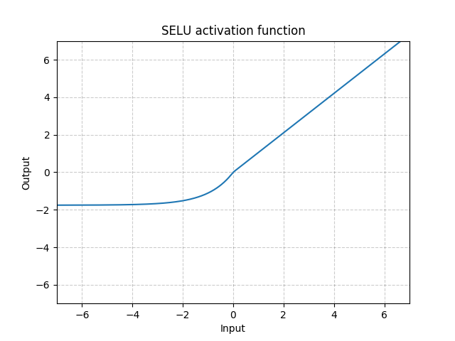

torch.nn¶
Parameters¶
-
class
torch.nn.Parameter[source]¶ A kind of Tensor that is to be considered a module parameter.
Parameters are
Tensorsubclasses, that have a very special property when used withModules - when they’re assigned as Module attributes they are automatically added to the list of its parameters, and will appear e.g. inparameters()iterator. Assigning a Tensor doesn’t have such effect. This is because one might want to cache some temporary state, like last hidden state of the RNN, in the model. If there was no such class asParameter, these temporaries would get registered too.Parameters: - data (Tensor) – parameter tensor.
- requires_grad (bool, optional) – if the parameter requires gradient. See Excluding subgraphs from backward for more details. Default: True
Containers¶
Module¶
-
class
torch.nn.Module[source]¶ Base class for all neural network modules.
Your models should also subclass this class.
Modules can also contain other Modules, allowing to nest them in a tree structure. You can assign the submodules as regular attributes:
import torch.nn as nn import torch.nn.functional as F class Model(nn.Module): def __init__(self): super(Model, self).__init__() self.conv1 = nn.Conv2d(1, 20, 5) self.conv2 = nn.Conv2d(20, 20, 5) def forward(self, x): x = F.relu(self.conv1(x)) return F.relu(self.conv2(x))
Submodules assigned in this way will be registered, and will have their parameters converted too when you call
to(), etc.-
add_module(name, module)[source]¶ Adds a child module to the current module.
The module can be accessed as an attribute using the given name.
Parameters: - name (string) – name of the child module. The child module can be accessed from this module using the given name
- parameter (Module) – child module to be added to the module.
-
apply(fn)[source]¶ Applies
fnrecursively to every submodule (as returned by.children()) as well as self. Typical use includes initializing the parameters of a model (see also torch-nn-init).Parameters: fn ( Module-> None) – function to be applied to each submoduleReturns: self Return type: Module Example:
>>> def init_weights(m): print(m) if type(m) == nn.Linear: m.weight.data.fill_(1.0) print(m.weight) >>> net = nn.Sequential(nn.Linear(2, 2), nn.Linear(2, 2)) >>> net.apply(init_weights) Linear(in_features=2, out_features=2, bias=True) Parameter containing: tensor([[ 1., 1.], [ 1., 1.]]) Linear(in_features=2, out_features=2, bias=True) Parameter containing: tensor([[ 1., 1.], [ 1., 1.]]) Sequential( (0): Linear(in_features=2, out_features=2, bias=True) (1): Linear(in_features=2, out_features=2, bias=True) ) Sequential( (0): Linear(in_features=2, out_features=2, bias=True) (1): Linear(in_features=2, out_features=2, bias=True) )
-
buffers(recurse=True)[source]¶ Returns an iterator over module buffers.
Parameters: recurse (bool) – if True, then yields buffers of this module and all submodules. Otherwise, yields only buffers that are direct members of this module. Yields: torch.Tensor – module buffer Example:
>>> for buf in model.buffers(): >>> print(type(buf.data), buf.size()) <class 'torch.FloatTensor'> (20L,) <class 'torch.FloatTensor'> (20L, 1L, 5L, 5L)
-
children()[source]¶ Returns an iterator over immediate children modules.
Yields: Module – a child module
-
cuda(device=None)[source]¶ Moves all model parameters and buffers to the GPU.
This also makes associated parameters and buffers different objects. So it should be called before constructing optimizer if the module will live on GPU while being optimized.
Parameters: device (int, optional) – if specified, all parameters will be copied to that device Returns: self Return type: Module
-
double()[source]¶ Casts all floating point parameters and buffers to
doubledatatype.Returns: self Return type: Module
-
dump_patches= False¶ This allows better BC support for
load_state_dict(). Instate_dict(), the version number will be saved as in the attribute _metadata of the returned state dict, and thus pickled. _metadata is a dictionary with keys that follow the naming convention of state dict. See_load_from_state_dicton how to use this information in loading.If new parameters/buffers are added/removed from a module, this number shall be bumped, and the module’s _load_from_state_dict method can compare the version number and do appropriate changes if the state dict is from before the change.
-
eval()[source]¶ Sets the module in evaluation mode.
This has any effect only on certain modules. See documentations of particular modules for details of their behaviors in training/evaluation mode, if they are affected, e.g.
Dropout,BatchNorm, etc.
-
extra_repr()[source]¶ Set the extra representation of the module
To print customized extra information, you should reimplement this method in your own modules. Both single-line and multi-line strings are acceptable.
-
float()[source]¶ Casts all floating point parameters and buffers to float datatype.
Returns: self Return type: Module
-
forward(*input)[source]¶ Defines the computation performed at every call.
Should be overridden by all subclasses.
Note
Although the recipe for forward pass needs to be defined within this function, one should call the
Moduleinstance afterwards instead of this since the former takes care of running the registered hooks while the latter silently ignores them.
-
half()[source]¶ Casts all floating point parameters and buffers to
halfdatatype.Returns: self Return type: Module
-
load_state_dict(state_dict, strict=True)[source]¶ Copies parameters and buffers from
state_dictinto this module and its descendants. IfstrictisTrue, then the keys ofstate_dictmust exactly match the keys returned by this module’sstate_dict()function.Parameters: - state_dict (dict) – a dict containing parameters and persistent buffers.
- strict (bool, optional) – whether to strictly enforce that the keys
in
state_dictmatch the keys returned by this module’sstate_dict()function. Default:True
-
modules()[source]¶ Returns an iterator over all modules in the network.
Yields: Module – a module in the network Note
Duplicate modules are returned only once. In the following example,
lwill be returned only once.Example:
>>> l = nn.Linear(2, 2) >>> net = nn.Sequential(l, l) >>> for idx, m in enumerate(net.modules()): print(idx, '->', m) 0 -> Sequential ( (0): Linear (2 -> 2) (1): Linear (2 -> 2) ) 1 -> Linear (2 -> 2)
-
named_buffers(prefix='', recurse=True)[source]¶ Returns an iterator over module buffers, yielding both the name of the buffer as well as the buffer itself.
Parameters: Yields: (string, torch.Tensor) – Tuple containing the name and buffer
Example:
>>> for name, buf in self.named_buffers(): >>> if name in ['running_var']: >>> print(buf.size())
-
named_children()[source]¶ Returns an iterator over immediate children modules, yielding both the name of the module as well as the module itself.
Yields: (string, Module) – Tuple containing a name and child module Example:
>>> for name, module in model.named_children(): >>> if name in ['conv4', 'conv5']: >>> print(module)
-
named_modules(memo=None, prefix='')[source]¶ Returns an iterator over all modules in the network, yielding both the name of the module as well as the module itself.
Yields: (string, Module) – Tuple of name and module Note
Duplicate modules are returned only once. In the following example,
lwill be returned only once.Example:
>>> l = nn.Linear(2, 2) >>> net = nn.Sequential(l, l) >>> for idx, m in enumerate(net.named_modules()): print(idx, '->', m) 0 -> ('', Sequential ( (0): Linear (2 -> 2) (1): Linear (2 -> 2) )) 1 -> ('0', Linear (2 -> 2))
-
named_parameters(prefix='', recurse=True)[source]¶ Returns an iterator over module parameters, yielding both the name of the parameter as well as the parameter itself.
Parameters: Yields: (string, Parameter) – Tuple containing the name and parameter
Example:
>>> for name, param in self.named_parameters(): >>> if name in ['bias']: >>> print(param.size())
-
parameters(recurse=True)[source]¶ Returns an iterator over module parameters.
This is typically passed to an optimizer.
Parameters: recurse (bool) – if True, then yields parameters of this module and all submodules. Otherwise, yields only parameters that are direct members of this module. Yields: Parameter – module parameter Example:
>>> for param in model.parameters(): >>> print(type(param.data), param.size()) <class 'torch.FloatTensor'> (20L,) <class 'torch.FloatTensor'> (20L, 1L, 5L, 5L)
-
register_backward_hook(hook)[source]¶ Registers a backward hook on the module.
The hook will be called every time the gradients with respect to module inputs are computed. The hook should have the following signature:
hook(module, grad_input, grad_output) -> Tensor or None
The
grad_inputandgrad_outputmay be tuples if the module has multiple inputs or outputs. The hook should not modify its arguments, but it can optionally return a new gradient with respect to input that will be used in place ofgrad_inputin subsequent computations.Returns: a handle that can be used to remove the added hook by calling handle.remove()Return type: torch.utils.hooks.RemovableHandleWarning
The current implementation will not have the presented behavior for complex
Modulethat perform many operations. In some failure cases,grad_inputandgrad_outputwill only contain the gradients for a subset of the inputs and outputs. For suchModule, you should usetorch.Tensor.register_hook()directly on a specific input or output to get the required gradients.
-
register_buffer(name, tensor)[source]¶ Adds a persistent buffer to the module.
This is typically used to register a buffer that should not to be considered a model parameter. For example, BatchNorm’s
running_meanis not a parameter, but is part of the persistent state.Buffers can be accessed as attributes using given names.
Parameters: - name (string) – name of the buffer. The buffer can be accessed from this module using the given name
- tensor (Tensor) – buffer to be registered.
Example:
>>> self.register_buffer('running_mean', torch.zeros(num_features))
-
register_forward_hook(hook)[source]¶ Registers a forward hook on the module.
The hook will be called every time after
forward()has computed an output. It should have the following signature:hook(module, input, output) -> None
The hook should not modify the input or output.
Returns: a handle that can be used to remove the added hook by calling handle.remove()Return type: torch.utils.hooks.RemovableHandle
-
register_forward_pre_hook(hook)[source]¶ Registers a forward pre-hook on the module.
The hook will be called every time before
forward()is invoked. It should have the following signature:hook(module, input) -> None
The hook should not modify the input.
Returns: a handle that can be used to remove the added hook by calling handle.remove()Return type: torch.utils.hooks.RemovableHandle
-
register_parameter(name, param)[source]¶ Adds a parameter to the module.
The parameter can be accessed as an attribute using given name.
Parameters: - name (string) – name of the parameter. The parameter can be accessed from this module using the given name
- parameter (Parameter) – parameter to be added to the module.
-
state_dict(destination=None, prefix='', keep_vars=False)[source]¶ Returns a dictionary containing a whole state of the module.
Both parameters and persistent buffers (e.g. running averages) are included. Keys are corresponding parameter and buffer names.
Returns: a dictionary containing a whole state of the module Return type: dict Example:
>>> module.state_dict().keys() ['bias', 'weight']
-
to(*args, **kwargs)[source]¶ Moves and/or casts the parameters and buffers.
This can be called as
-
to(device=None, dtype=None, non_blocking=False)[source]
-
to(dtype, non_blocking=False)[source]
-
to(tensor, non_blocking=False)[source]
Its signature is similar to
torch.Tensor.to(), but only accepts floating point desireddtypes. In addition, this method will only cast the floating point parameters and buffers todtype(if given). The integral parameters and buffers will be moveddevice, if that is given, but with dtypes unchanged. Whennon_blockingis set, it tries to convert/move asynchronously with respect to the host if possible, e.g., moving CPU Tensors with pinned memory to CUDA devices.See below for examples.
Note
This method modifies the module in-place.
Parameters: - device (
torch.device) – the desired device of the parameters and buffers in this module - dtype (
torch.dtype) – the desired floating point type of the floating point parameters and buffers in this module - tensor (torch.Tensor) – Tensor whose dtype and device are the desired dtype and device for all parameters and buffers in this module
Returns: self
Return type: Example:
>>> linear = nn.Linear(2, 2) >>> linear.weight Parameter containing: tensor([[ 0.1913, -0.3420], [-0.5113, -0.2325]]) >>> linear.to(torch.double) Linear(in_features=2, out_features=2, bias=True) >>> linear.weight Parameter containing: tensor([[ 0.1913, -0.3420], [-0.5113, -0.2325]], dtype=torch.float64) >>> gpu1 = torch.device("cuda:1") >>> linear.to(gpu1, dtype=torch.half, non_blocking=True) Linear(in_features=2, out_features=2, bias=True) >>> linear.weight Parameter containing: tensor([[ 0.1914, -0.3420], [-0.5112, -0.2324]], dtype=torch.float16, device='cuda:1') >>> cpu = torch.device("cpu") >>> linear.to(cpu) Linear(in_features=2, out_features=2, bias=True) >>> linear.weight Parameter containing: tensor([[ 0.1914, -0.3420], [-0.5112, -0.2324]], dtype=torch.float16)
-
-
train(mode=True)[source]¶ Sets the module in training mode.
This has any effect only on certain modules. See documentations of particular modules for details of their behaviors in training/evaluation mode, if they are affected, e.g.
Dropout,BatchNorm, etc.Returns: self Return type: Module
-
Sequential¶
-
class
torch.nn.Sequential(*args)[source]¶ A sequential container. Modules will be added to it in the order they are passed in the constructor. Alternatively, an ordered dict of modules can also be passed in.
To make it easier to understand, here is a small example:
# Example of using Sequential model = nn.Sequential( nn.Conv2d(1,20,5), nn.ReLU(), nn.Conv2d(20,64,5), nn.ReLU() ) # Example of using Sequential with OrderedDict model = nn.Sequential(OrderedDict([ ('conv1', nn.Conv2d(1,20,5)), ('relu1', nn.ReLU()), ('conv2', nn.Conv2d(20,64,5)), ('relu2', nn.ReLU()) ]))
ModuleList¶
-
class
torch.nn.ModuleList(modules=None)[source]¶ Holds submodules in a list.
ModuleList can be indexed like a regular Python list, but modules it contains are properly registered, and will be visible by all Module methods.
Parameters: modules (iterable, optional) – an iterable of modules to add Example:
class MyModule(nn.Module): def __init__(self): super(MyModule, self).__init__() self.linears = nn.ModuleList([nn.Linear(10, 10) for i in range(10)]) def forward(self, x): # ModuleList can act as an iterable, or be indexed using ints for i, l in enumerate(self.linears): x = self.linears[i // 2](x) + l(x) return x
-
append(module)[source]¶ Appends a given module to the end of the list.
Parameters: module (nn.Module) – module to append
-
ModuleDict¶
-
class
torch.nn.ModuleDict(modules=None)[source]¶ Holds submodules in a dictionary.
ModuleDict can be indexed like a regular Python dictionary, but modules it contains are properly registered, and will be visible by all Module methods.
Parameters: modules (iterable, optional) – a mapping (dictionary) of (string: module) or an iterable of key/value pairs of type (string, module) Example:
class MyModule(nn.Module): def __init__(self): super(MyModule, self).__init__() self.choices = nn.ModuleDict({ 'conv': nn.Conv2d(10, 10, 3), 'pool': nn.MaxPool2d(3) }) self.activations = nn.ModuleDict([ ['lrelu', nn.LeakyReLU()], ['prelu', nn.PReLU()] ]) def forward(self, x, choice, act): x = self.choices[choice](x) x = self.activations[act](x) return x
-
pop(key)[source]¶ Remove key from the ModuleDict and return its module.
Parameters: key (string) – key to pop from the ModuleDict
-
ParameterList¶
-
class
torch.nn.ParameterList(parameters=None)[source]¶ Holds parameters in a list.
ParameterList can be indexed like a regular Python list, but parameters it contains are properly registered, and will be visible by all Module methods.
Parameters: parameters (iterable, optional) – an iterable of Parameter`to addExample:
class MyModule(nn.Module): def __init__(self): super(MyModule, self).__init__() self.params = nn.ParameterList([nn.Parameter(torch.randn(10, 10)) for i in range(10)]) def forward(self, x): # ParameterList can act as an iterable, or be indexed using ints for i, p in enumerate(self.params): x = self.params[i // 2].mm(x) + p.mm(x) return x
-
append(parameter)[source]¶ Appends a given parameter at the end of the list.
Parameters: parameter (nn.Parameter) – parameter to append
-
ParameterDict¶
-
class
torch.nn.ParameterDict(parameters=None)[source]¶ Holds parameters in a dictionary.
ParameterDict can be indexed like a regular Python dictionary, but parameters it contains are properly registered, and will be visible by all Module methods.
Parameters: parameters (iterable, optional) – a mapping (dictionary) of (string : Parameter) or an iterable of key,value pairs of type (string,Parameter)Example:
class MyModule(nn.Module): def __init__(self): super(MyModule, self).__init__() self.params = nn.ParameterDict({ 'left': nn.Parameter(torch.randn(5, 10)), 'right': nn.Parameter(torch.randn(5, 10)) }) def forward(self, x, choice): x = self.params[choice].mm(x) return x
-
pop(key)[source]¶ Remove key from the ParameterDict and return its parameter.
Parameters: key (string) – key to pop from the ParameterDict
-
Convolution layers¶
Conv1d¶
-
class
torch.nn.Conv1d(in_channels, out_channels, kernel_size, stride=1, padding=0, dilation=1, groups=1, bias=True)[source]¶ Applies a 1D convolution over an input signal composed of several input planes.
In the simplest case, the output value of the layer with input size \((N, C_{\text{in}}, L)\) and output \((N, C_{\text{out}}, L_{\text{out}})\) can be precisely described as:
\[\text{out}(N_i, C_{\text{out}_j}) = \text{bias}(C_{\text{out}_j}) + \sum_{k = 0}^{C_{in} - 1} \text{weight}(C_{\text{out}_j}, k) \star \text{input}(N_i, k) \]where \(\star\) is the valid cross-correlation operator, \(N\) is a batch size, \(C\) denotes a number of channels, \(L\) is a length of signal sequence.
stridecontrols the stride for the cross-correlation, a single number or a one-element tuple.paddingcontrols the amount of implicit zero-paddings on both sides forpaddingnumber of points.dilationcontrols the spacing between the kernel points; also known as the à trous algorithm. It is harder to describe, but this link has a nice visualization of whatdilationdoes.groupscontrols the connections between inputs and outputs.in_channelsandout_channelsmust both be divisible bygroups. For example,- At groups=1, all inputs are convolved to all outputs.
- At groups=2, the operation becomes equivalent to having two conv layers side by side, each seeing half the input channels, and producing half the output channels, and both subsequently concatenated.
- At groups=
in_channels, each input channel is convolved with its own set of filters, of size \(\left\lfloor\frac{C_\text{out}}{C_\text{in}}\right\rfloor\)
Note
Depending of the size of your kernel, several (of the last) columns of the input might be lost, because it is a valid cross-correlation, and not a full cross-correlation. It is up to the user to add proper padding.
Note
When groups == in_channels and out_channels == K * in_channels, where K is a positive integer, this operation is also termed in literature as depthwise convolution.
In other words, for an input of size \((N, C_{in}, L_{in})\), a depthwise convolution with a depthwise multiplier K, can be constructed by arguments \((C_\text{in}=C_{in}, C_\text{out}=C_{in} \times K, ..., \text{groups}=C_{in})\).
Note
In some circumstances when using the CUDA backend with CuDNN, this operator may select a nondeterministic algorithm to increase performance. If this is undesirable, you can try to make the operation deterministic (potentially at a performance cost) by setting
torch.backends.cudnn.deterministic = True. Please see the notes on Reproducibility for background.Parameters: - in_channels (int) – Number of channels in the input image
- out_channels (int) – Number of channels produced by the convolution
- kernel_size (int or tuple) – Size of the convolving kernel
- stride (int or tuple, optional) – Stride of the convolution. Default: 1
- padding (int or tuple, optional) – Zero-padding added to both sides of the input. Default: 0
- dilation (int or tuple, optional) – Spacing between kernel elements. Default: 1
- groups (int, optional) – Number of blocked connections from input channels to output channels. Default: 1
- bias (bool, optional) – If
True, adds a learnable bias to the output. Default:True
- Shape:
Input: \((N, C_{in}, L_{in})\)
Output: \((N, C_{out}, L_{out})\) where
\[L_{out} = \left\lfloor\frac{L_{in} + 2 \times \text{padding} - \text{dilation} \times (\text{kernel\_size} - 1) - 1}{\text{stride}} + 1\right\rfloor \]
Variables: - weight (Tensor) – the learnable weights of the module of shape (out_channels, in_channels, kernel_size). The values of these weights are sampled from \(\mathcal{U}(-\sqrt{k}, \sqrt{k})\) where \(k = \frac{1}{C_\text{in} * \text{kernel\_size}}\)
- bias (Tensor) – the learnable bias of the module of shape
(out_channels). If
biasisTrue, then the values of these weights are sampled from \(\mathcal{U}(-\sqrt{k}, \sqrt{k})\) where \(k = \frac{1}{C_\text{in} * \text{kernel\_size}}\)
Examples:
>>> m = nn.Conv1d(16, 33, 3, stride=2) >>> input = torch.randn(20, 16, 50) >>> output = m(input)
Conv2d¶
-
class
torch.nn.Conv2d(in_channels, out_channels, kernel_size, stride=1, padding=0, dilation=1, groups=1, bias=True)[source]¶ Applies a 2D convolution over an input signal composed of several input planes.
In the simplest case, the output value of the layer with input size \((N, C_{\text{in}}, H, W)\) and output \((N, C_{\text{out}}, H_{\text{out}}, W_{\text{out}})\) can be precisely described as:
\[\text{out}(N_i, C_{\text{out}_j}) = \text{bias}(C_{\text{out}_j}) + \sum_{k = 0}^{C_{\text{in}} - 1} \text{weight}(C_{\text{out}_j}, k) \star \text{input}(N_i, k) \]where \(\star\) is the valid 2D cross-correlation operator, \(N\) is a batch size, \(C\) denotes a number of channels, \(H\) is a height of input planes in pixels, and \(W\) is width in pixels.
stridecontrols the stride for the cross-correlation, a single number or a tuple.paddingcontrols the amount of implicit zero-paddings on both sides forpaddingnumber of points for each dimension.dilationcontrols the spacing between the kernel points; also known as the à trous algorithm. It is harder to describe, but this link has a nice visualization of whatdilationdoes.groupscontrols the connections between inputs and outputs.in_channelsandout_channelsmust both be divisible bygroups. For example,- At groups=1, all inputs are convolved to all outputs.
- At groups=2, the operation becomes equivalent to having two conv layers side by side, each seeing half the input channels, and producing half the output channels, and both subsequently concatenated.
- At groups=
in_channels, each input channel is convolved with its own set of filters, of size: \(\left\lfloor\frac{C_\text{out}}{C_\text{in}}\right\rfloor\).
The parameters
kernel_size,stride,padding,dilationcan either be:- a single
int– in which case the same value is used for the height and width dimension - a
tupleof two ints – in which case, the first int is used for the height dimension, and the second int for the width dimension
Note
Depending of the size of your kernel, several (of the last) columns of the input might be lost, because it is a valid cross-correlation, and not a full cross-correlation. It is up to the user to add proper padding.
Note
When groups == in_channels and out_channels == K * in_channels, where K is a positive integer, this operation is also termed in literature as depthwise convolution.
In other words, for an input of size \((N, C_{in}, H_{in}, W_{in})\), a depthwise convolution with a depthwise multiplier K, can be constructed by arguments \((in\_channels=C_{in}, out\_channels=C_{in} \times K, ..., groups=C_{in})\).
Note
In some circumstances when using the CUDA backend with CuDNN, this operator may select a nondeterministic algorithm to increase performance. If this is undesirable, you can try to make the operation deterministic (potentially at a performance cost) by setting
torch.backends.cudnn.deterministic = True. Please see the notes on Reproducibility for background.Parameters: - in_channels (int) – Number of channels in the input image
- out_channels (int) – Number of channels produced by the convolution
- kernel_size (int or tuple) – Size of the convolving kernel
- stride (int or tuple, optional) – Stride of the convolution. Default: 1
- padding (int or tuple, optional) – Zero-padding added to both sides of the input. Default: 0
- dilation (int or tuple, optional) – Spacing between kernel elements. Default: 1
- groups (int, optional) – Number of blocked connections from input channels to output channels. Default: 1
- bias (bool, optional) – If
True, adds a learnable bias to the output. Default:True
- Shape:
Input: \((N, C_{in}, H_{in}, W_{in})\)
Output: \((N, C_{out}, H_{out}, W_{out})\) where
\[H_{out} = \left\lfloor\frac{H_{in} + 2 \times \text{padding}[0] - \text{dilation}[0] \times (\text{kernel\_size}[0] - 1) - 1}{\text{stride}[0]} + 1\right\rfloor \]\[W_{out} = \left\lfloor\frac{W_{in} + 2 \times \text{padding}[1] - \text{dilation}[1] \times (\text{kernel\_size}[1] - 1) - 1}{\text{stride}[1]} + 1\right\rfloor \]
Variables: - weight (Tensor) – the learnable weights of the module of shape (out_channels, in_channels, kernel_size[0], kernel_size[1]). The values of these weights are sampled from \(\mathcal{U}(-\sqrt{k}, \sqrt{k})\) where \(k = \frac{1}{C_\text{in} * \prod_{i=0}^{1}\text{kernel\_size}[i]}\)
- bias (Tensor) – the learnable bias of the module of shape (out_channels). If
biasisTrue, then the values of these weights are sampled from \(\mathcal{U}(-\sqrt{k}, \sqrt{k})\) where \(k = \frac{1}{C_\text{in} * \prod_{i=0}^{1}\text{kernel\_size}[i]}\)
Examples:
>>> # With square kernels and equal stride >>> m = nn.Conv2d(16, 33, 3, stride=2) >>> # non-square kernels and unequal stride and with padding >>> m = nn.Conv2d(16, 33, (3, 5), stride=(2, 1), padding=(4, 2)) >>> # non-square kernels and unequal stride and with padding and dilation >>> m = nn.Conv2d(16, 33, (3, 5), stride=(2, 1), padding=(4, 2), dilation=(3, 1)) >>> input = torch.randn(20, 16, 50, 100) >>> output = m(input)
Conv3d¶
-
class
torch.nn.Conv3d(in_channels, out_channels, kernel_size, stride=1, padding=0, dilation=1, groups=1, bias=True)[source]¶ Applies a 3D convolution over an input signal composed of several input planes.
In the simplest case, the output value of the layer with input size \((N, C_{in}, D, H, W)\) and output \((N, C_{out}, D_{out}, H_{out}, W_{out})\) can be precisely described as:
\[out(N_i, C_{out_j}) = bias(C_{out_j}) + \sum_{k = 0}^{C_{in} - 1} weight(C_{out_j}, k) \star input(N_i, k) \]where \(\star\) is the valid 3D cross-correlation operator
stridecontrols the stride for the cross-correlation.paddingcontrols the amount of implicit zero-paddings on both sides forpaddingnumber of points for each dimension.dilationcontrols the spacing between the kernel points; also known as the à trous algorithm. It is harder to describe, but this link has a nice visualization of whatdilationdoes.groupscontrols the connections between inputs and outputs.in_channelsandout_channelsmust both be divisible bygroups. For example,- At groups=1, all inputs are convolved to all outputs.
- At groups=2, the operation becomes equivalent to having two conv layers side by side, each seeing half the input channels, and producing half the output channels, and both subsequently concatenated.
- At groups=
in_channels, each input channel is convolved with its own set of filters, of size \(\left\lfloor\frac{out\_channels}{in\_channels}\right\rfloor\).
The parameters
kernel_size,stride,padding,dilationcan either be:- a single
int– in which case the same value is used for the depth, height and width dimension - a
tupleof three ints – in which case, the first int is used for the depth dimension, the second int for the height dimension and the third int for the width dimension
Note
Depending of the size of your kernel, several (of the last) columns of the input might be lost, because it is a valid cross-correlation, and not a full cross-correlation. It is up to the user to add proper padding.
Note
When groups == in_channels and out_channels == K * in_channels, where K is a positive integer, this operation is also termed in literature as depthwise convolution.
In other words, for an input of size \((N, C_{in}, D_{in}, H_{in}, W_{in})\), a depthwise convolution with a depthwise multiplier K, can be constructed by arguments \((in\_channels=C_{in}, out\_channels=C_{in} \times K, ..., groups=C_{in})\).Note
In some circumstances when using the CUDA backend with CuDNN, this operator may select a nondeterministic algorithm to increase performance. If this is undesirable, you can try to make the operation deterministic (potentially at a performance cost) by setting
torch.backends.cudnn.deterministic = True. Please see the notes on Reproducibility for background.Parameters: - in_channels (int) – Number of channels in the input image
- out_channels (int) – Number of channels produced by the convolution
- kernel_size (int or tuple) – Size of the convolving kernel
- stride (int or tuple, optional) – Stride of the convolution. Default: 1
- padding (int or tuple, optional) – Zero-padding added to all three sides of the input. Default: 0
- dilation (int or tuple, optional) – Spacing between kernel elements. Default: 1
- groups (int, optional) – Number of blocked connections from input channels to output channels. Default: 1
- bias (bool, optional) – If
True, adds a learnable bias to the output. Default:True
- Shape:
Input: \((N, C_{in}, D_{in}, H_{in}, W_{in})\)
Output: \((N, C_{out}, D_{out}, H_{out}, W_{out})\) where
\[D_{out} = \left\lfloor\frac{D_{in} + 2 \times \text{padding}[0] - \text{dilation}[0] \times (\text{kernel\_size}[0] - 1) - 1}{\text{stride}[0]} + 1\right\rfloor \]\[H_{out} = \left\lfloor\frac{H_{in} + 2 \times \text{padding}[1] - \text{dilation}[1] \times (\text{kernel\_size}[1] - 1) - 1}{\text{stride}[1]} + 1\right\rfloor \]\[W_{out} = \left\lfloor\frac{W_{in} + 2 \times \text{padding}[2] - \text{dilation}[2] \times (\text{kernel\_size}[2] - 1) - 1}{\text{stride}[2]} + 1\right\rfloor \]
Variables: - weight (Tensor) – the learnable weights of the module of shape (out_channels, in_channels, kernel_size[0], kernel_size[1], kernel_size[2]) The values of these weights are sampled from \(\mathcal{U}(-\sqrt{k}, \sqrt{k})\) where \(k = \frac{1}{C_\text{in} * \prod_{i=0}^{2}\text{kernel\_size}[i]}\)
- bias (Tensor) – the learnable bias of the module of shape (out_channels). If
biasisTrue, then the values of these weights are sampled from \(\mathcal{U}(-\sqrt{k}, \sqrt{k})\) where \(k = \frac{1}{C_\text{in} * \prod_{i=0}^{2}\text{kernel\_size}[i]}\)
Examples:
>>> # With square kernels and equal stride >>> m = nn.Conv3d(16, 33, 3, stride=2) >>> # non-square kernels and unequal stride and with padding >>> m = nn.Conv3d(16, 33, (3, 5, 2), stride=(2, 1, 1), padding=(4, 2, 0)) >>> input = torch.randn(20, 16, 10, 50, 100) >>> output = m(input)
ConvTranspose1d¶
-
class
torch.nn.ConvTranspose1d(in_channels, out_channels, kernel_size, stride=1, padding=0, output_padding=0, groups=1, bias=True, dilation=1)[source]¶ Applies a 1D transposed convolution operator over an input image composed of several input planes.
This module can be seen as the gradient of Conv1d with respect to its input. It is also known as a fractionally-strided convolution or a deconvolution (although it is not an actual deconvolution operation).
stridecontrols the stride for the cross-correlation.paddingcontrols the amount of implicit zero-paddings on both sides forkernel_size - 1 - paddingnumber of points. See note below for details.output_paddingcontrols the additional size added to one side of the output shape. See note below for details.dilationcontrols the spacing between the kernel points; also known as the à trous algorithm. It is harder to describe, but this link has a nice visualization of whatdilationdoes.groupscontrols the connections between inputs and outputs.in_channelsandout_channelsmust both be divisible bygroups. For example,- At groups=1, all inputs are convolved to all outputs.
- At groups=2, the operation becomes equivalent to having two conv layers side by side, each seeing half the input channels, and producing half the output channels, and both subsequently concatenated.
- At groups=
in_channels, each input channel is convolved with its own set of filters (of size \(\left\lfloor\frac{out\_channels}{in\_channels}\right\rfloor\)).
Note
Depending of the size of your kernel, several (of the last) columns of the input might be lost, because it is a valid cross-correlation, and not a full cross-correlation. It is up to the user to add proper padding.
Note
The
paddingargument effectively addskernel_size - 1 - paddingamount of zero padding to both sizes of the input. This is set so that when aConv1dand aConvTranspose1dare initialized with same parameters, they are inverses of each other in regard to the input and output shapes. However, whenstride > 1,Conv1dmaps multiple input shapes to the same output shape.output_paddingis provided to resolve this ambiguity by effectively increasing the calculated output shape on one side. Note thatoutput_paddingis only used to find output shape, but does not actually add zero-padding to output.Note
In some circumstances when using the CUDA backend with CuDNN, this operator may select a nondeterministic algorithm to increase performance. If this is undesirable, you can try to make the operation deterministic (potentially at a performance cost) by setting
torch.backends.cudnn.deterministic = True. Please see the notes on Reproducibility for background.Parameters: - in_channels (int) – Number of channels in the input image
- out_channels (int) – Number of channels produced by the convolution
- kernel_size (int or tuple) – Size of the convolving kernel
- stride (int or tuple, optional) – Stride of the convolution. Default: 1
- padding (int or tuple, optional) –
kernel_size - 1 - paddingzero-padding will be added to both sides of the input. Default: 0 - output_padding (int or tuple, optional) – Additional size added to one side of the output shape. Default: 0
- groups (int, optional) – Number of blocked connections from input channels to output channels. Default: 1
- bias (bool, optional) – If
True, adds a learnable bias to the output. Default:True - dilation (int or tuple, optional) – Spacing between kernel elements. Default: 1
- Shape:
Input: \((N, C_{in}, L_{in})\)
Output: \((N, C_{out}, L_{out})\) where
\[L_{out} = (L_{in} - 1) \times \text{stride} - 2 \times \text{padding} + \text{kernel\_size} + \text{output\_padding} \]
Variables: - weight (Tensor) – the learnable weights of the module of shape (in_channels, out_channels, kernel_size[0], kernel_size[1]). The values of these weights are sampled from \(\mathcal{U}(-\sqrt{k}, \sqrt{k})\) where \(k = \frac{1}{C_\text{in} * \text{kernel\_size}}\)
- bias (Tensor) – the learnable bias of the module of shape (out_channels).
If
biasisTrue, then the values of these weights are sampled from \(\mathcal{U}(-\sqrt{k}, \sqrt{k})\) where \(k = \frac{1}{C_\text{in} * \text{kernel\_size}}\)
ConvTranspose2d¶
-
class
torch.nn.ConvTranspose2d(in_channels, out_channels, kernel_size, stride=1, padding=0, output_padding=0, groups=1, bias=True, dilation=1)[source]¶ Applies a 2D transposed convolution operator over an input image composed of several input planes.
This module can be seen as the gradient of Conv2d with respect to its input. It is also known as a fractionally-strided convolution or a deconvolution (although it is not an actual deconvolution operation).
stridecontrols the stride for the cross-correlation.paddingcontrols the amount of implicit zero-paddings on both sides forkernel_size - 1 - paddingnumber of points. See note below for details.output_paddingcontrols the additional size added to one side of the output shape. See note below for details.dilationcontrols the spacing between the kernel points; also known as the à trous algorithm. It is harder to describe, but this link has a nice visualization of whatdilationdoes.groupscontrols the connections between inputs and outputs.in_channelsandout_channelsmust both be divisible bygroups. For example,- At groups=1, all inputs are convolved to all outputs.
- At groups=2, the operation becomes equivalent to having two conv layers side by side, each seeing half the input channels, and producing half the output channels, and both subsequently concatenated.
- At groups=
in_channels, each input channel is convolved with its own set of filters (of size \(\left\lfloor\frac{out\_channels}{in\_channels}\right\rfloor\)).
The parameters
kernel_size,stride,padding,output_paddingcan either be:- a single
int– in which case the same value is used for the height and width dimensions - a
tupleof two ints – in which case, the first int is used for the height dimension, and the second int for the width dimension
Note
Depending of the size of your kernel, several (of the last) columns of the input might be lost, because it is a valid cross-correlation, and not a full cross-correlation. It is up to the user to add proper padding.
Note
The
paddingargument effectively addskernel_size - 1 - paddingamount of zero padding to both sizes of the input. This is set so that when aConv2dand aConvTranspose2dare initialized with same parameters, they are inverses of each other in regard to the input and output shapes. However, whenstride > 1,Conv2dmaps multiple input shapes to the same output shape.output_paddingis provided to resolve this ambiguity by effectively increasing the calculated output shape on one side. Note thatoutput_paddingis only used to find output shape, but does not actually add zero-padding to output.Note
In some circumstances when using the CUDA backend with CuDNN, this operator may select a nondeterministic algorithm to increase performance. If this is undesirable, you can try to make the operation deterministic (potentially at a performance cost) by setting
torch.backends.cudnn.deterministic = True. Please see the notes on Reproducibility for background.Parameters: - in_channels (int) – Number of channels in the input image
- out_channels (int) – Number of channels produced by the convolution
- kernel_size (int or tuple) – Size of the convolving kernel
- stride (int or tuple, optional) – Stride of the convolution. Default: 1
- padding (int or tuple, optional) –
kernel_size - 1 - paddingzero-padding will be added to both sides of each dimension in the input. Default: 0 - output_padding (int or tuple, optional) – Additional size added to one side of each dimension in the output shape. Default: 0
- groups (int, optional) – Number of blocked connections from input channels to output channels. Default: 1
- bias (bool, optional) – If
True, adds a learnable bias to the output. Default:True - dilation (int or tuple, optional) – Spacing between kernel elements. Default: 1
- Shape:
- Input: \((N, C_{in}, H_{in}, W_{in})\)
- Output: \((N, C_{out}, H_{out}, W_{out})\) where
\[H_{out} = (H_{in} - 1) \times \text{stride}[0] - 2 \times \text{padding}[0] + \text{kernel\_size}[0] + \text{output\_padding}[0] \]\[W_{out} = (W_{in} - 1) \times \text{stride}[1] - 2 \times \text{padding}[1] + \text{kernel\_size}[1] + \text{output\_padding}[1] \]
Variables: - weight (Tensor) – the learnable weights of the module of shape (in_channels, out_channels, kernel_size[0], kernel_size[1]) The values of these weights are sampled from \(\mathcal{U}(-\sqrt{k}, \sqrt{k})\) where \(k = \frac{1}{C_\text{in} * \prod_{i=0}^{1}\text{kernel\_size}[i]}\)
- bias (Tensor) – the learnable bias of the module of shape (out_channels)
If
biasisTrue, then the values of these weights are sampled from \(\mathcal{U}(-\sqrt{k}, \sqrt{k})\) where \(k = \frac{1}{C_\text{in} * \prod_{i=0}^{1}\text{kernel\_size}[i]}\)
Examples:
>>> # With square kernels and equal stride >>> m = nn.ConvTranspose2d(16, 33, 3, stride=2) >>> # non-square kernels and unequal stride and with padding >>> m = nn.ConvTranspose2d(16, 33, (3, 5), stride=(2, 1), padding=(4, 2)) >>> input = torch.randn(20, 16, 50, 100) >>> output = m(input) >>> # exact output size can be also specified as an argument >>> input = torch.randn(1, 16, 12, 12) >>> downsample = nn.Conv2d(16, 16, 3, stride=2, padding=1) >>> upsample = nn.ConvTranspose2d(16, 16, 3, stride=2, padding=1) >>> h = downsample(input) >>> h.size() torch.Size([1, 16, 6, 6]) >>> output = upsample(h, output_size=input.size()) >>> output.size() torch.Size([1, 16, 12, 12])
ConvTranspose3d¶
-
class
torch.nn.ConvTranspose3d(in_channels, out_channels, kernel_size, stride=1, padding=0, output_padding=0, groups=1, bias=True, dilation=1)[source]¶ Applies a 3D transposed convolution operator over an input image composed of several input planes. The transposed convolution operator multiplies each input value element-wise by a learnable kernel, and sums over the outputs from all input feature planes.
This module can be seen as the gradient of Conv3d with respect to its input. It is also known as a fractionally-strided convolution or a deconvolution (although it is not an actual deconvolution operation).
stridecontrols the stride for the cross-correlation.paddingcontrols the amount of implicit zero-paddings on both sides forkernel_size - 1 - paddingnumber of points. See note below for details.output_paddingcontrols the additional size added to one side of the output shape. See note below for details.dilationcontrols the spacing between the kernel points; also known as the à trous algorithm. It is harder to describe, but this link has a nice visualization of whatdilationdoes.groupscontrols the connections between inputs and outputs.in_channelsandout_channelsmust both be divisible bygroups. For example,- At groups=1, all inputs are convolved to all outputs.
- At groups=2, the operation becomes equivalent to having two conv layers side by side, each seeing half the input channels, and producing half the output channels, and both subsequently concatenated.
- At groups=
in_channels, each input channel is convolved with its own set of filters (of size \(\left\lfloor\frac{out\_channels}{in\_channels}\right\rfloor\)).
The parameters
kernel_size,stride,padding,output_paddingcan either be:- a single
int– in which case the same value is used for the depth, height and width dimensions - a
tupleof three ints – in which case, the first int is used for the depth dimension, the second int for the height dimension and the third int for the width dimension
Note
Depending of the size of your kernel, several (of the last) columns of the input might be lost, because it is a valid cross-correlation, and not a full cross-correlation. It is up to the user to add proper padding.
Note
The
paddingargument effectively addskernel_size - 1 - paddingamount of zero padding to both sizes of the input. This is set so that when aConv3dand aConvTranspose3dare initialized with same parameters, they are inverses of each other in regard to the input and output shapes. However, whenstride > 1,Conv3dmaps multiple input shapes to the same output shape.output_paddingis provided to resolve this ambiguity by effectively increasing the calculated output shape on one side. Note thatoutput_paddingis only used to find output shape, but does not actually add zero-padding to output.Note
In some circumstances when using the CUDA backend with CuDNN, this operator may select a nondeterministic algorithm to increase performance. If this is undesirable, you can try to make the operation deterministic (potentially at a performance cost) by setting
torch.backends.cudnn.deterministic = True. Please see the notes on Reproducibility for background.Parameters: - in_channels (int) – Number of channels in the input image
- out_channels (int) – Number of channels produced by the convolution
- kernel_size (int or tuple) – Size of the convolving kernel
- stride (int or tuple, optional) – Stride of the convolution. Default: 1
- padding (int or tuple, optional) –
kernel_size - 1 - paddingzero-padding will be added to both sides of each dimension in the input. Default: 0 - output_padding (int or tuple, optional) – Additional size added to one side of each dimension in the output shape. Default: 0
- groups (int, optional) – Number of blocked connections from input channels to output channels. Default: 1
- bias (bool, optional) – If
True, adds a learnable bias to the output. Default:True - dilation (int or tuple, optional) – Spacing between kernel elements. Default: 1
- Shape:
- Input: \((N, C_{in}, D_{in}, H_{in}, W_{in})\)
- Output: \((N, C_{out}, D_{out}, H_{out}, W_{out})\) where
\[D_{out} = (D_{in} - 1) \times \text{stride}[0] - 2 \times \text{padding}[0] + \text{kernel\_size}[0] + \text{output\_padding}[0] \]\[H_{out} = (H_{in} - 1) \times \text{stride}[1] - 2 \times \text{padding}[1] + \text{kernel\_size}[1] + \text{output\_padding}[1] \]\[W_{out} = (W_{in} - 1) \times \text{stride}[2] - 2 \times \text{padding}[2] + \text{kernel\_size}[2] + \text{output\_padding}[2] \]
Variables: - weight (Tensor) – the learnable weights of the module of shape (in_channels, out_channels, kernel_size[0], kernel_size[1], kernel_size[2]) The values of these weights are sampled from \(\mathcal{U}(-\sqrt{k}, \sqrt{k})\) where \(k = \frac{1}{C_\text{in} * \prod_{i=0}^{2}\text{kernel\_size}[i]}\)
- bias (Tensor) – the learnable bias of the module of shape (out_channels)
If
biasisTrue, then the values of these weights are sampled from \(\mathcal{U}(-\sqrt{k}, \sqrt{k})\) where \(k = \frac{1}{C_\text{in} * \prod_{i=0}^{2}\text{kernel\_size}[i]}\)
Examples:
>>> # With square kernels and equal stride >>> m = nn.ConvTranspose3d(16, 33, 3, stride=2) >>> # non-square kernels and unequal stride and with padding >>> m = nn.ConvTranspose3d(16, 33, (3, 5, 2), stride=(2, 1, 1), padding=(0, 4, 2)) >>> input = torch.randn(20, 16, 10, 50, 100) >>> output = m(input)
Unfold¶
-
class
torch.nn.Unfold(kernel_size, dilation=1, padding=0, stride=1)[source]¶ Extracts sliding local blocks from a batched input tensor.
Consider an batched
inputtensor of shape \((N, C, *)\), where \(N\) is the batch dimension, \(C\) is the channel dimension, and \(*\) represent arbitrary spatial dimensions. This operation flattens each slidingkernel_size-sized block within the spatial dimensions ofinputinto a column (i.e., last dimension) of a 3-Doutputtensor of shape \((N, C \times \prod(\text{kernel\_size}), L)\), where \(C \times \prod(\text{kernel\_size})\) is the total number of values with in each block (a block has \(\prod(\text{kernel\_size})\) spatial locations each containing a \(C\)-channeled vector), and \(L\) is the total number of such blocks:\[L = \prod_d \left\lfloor\frac{\text{spatial\_size}[d] + 2 \times \text{padding}[d] % - \text{dilation}[d] \times (\text{kernel\_size}[d] - 1) - 1}{\text{stride}[d]} + 1\right\rfloor, \]where \(\text{spatial\_size}\) is formed by the spatial dimensions of
input(\(*\) above), and \(d\) is over all spatial dimensions.Therefore, indexing
outputat the last dimension (column dimension) gives all values within a certain block.The
padding,strideanddilationarguments specify how the sliding blocks are retrieved.stridecontrols the stride for the sliding blocks.paddingcontrols the amount of implicit zero-paddings on both sides forpaddingnumber of points for each dimension before reshaping.dilationcontrols the spacing between the kernel points; also known as the à trous algorithm. It is harder to describe, but this link has a nice visualization of whatdilationdoes.
Parameters: - kernel_size (int or tuple) – the size of the sliding blocks
- stride (int or tuple, optional) – the stride of the sliding blocks in the input spatial dimensions. Default: 1
- padding (int or tuple, optional) – implicit zero padding to be added on both sides of input. Default: 0
- dilation (int or tuple, optional) – a parameter that controls the stride of elements within the neighborhood. Default: 1
- If
kernel_size,dilation,paddingorstrideis an int or a tuple of length 1, their values will be replicated across all spatial dimensions. - For the case of two input spatial dimensions this operation is sometimes
called
im2col.
Note
Foldcalculates each combined value in the resulting large tensor by summing all values from all containing blocks.Unfoldextracts the values in the local blocks by copying from the large tensor. So, if the blocks overlap, they are not inverses of each other.Warning
Currently, only 4-D input tensors (batched image-like tensors) are supported.
- Shape:
- Input: \((N, C, *)\)
- Output: \((N, C \times \prod(\text{kernel\_size}), L)\) as described above
Examples:
>>> unfold = nn.Unfold(kernel_size=(2, 3)) >>> input = torch.randn(2, 5, 3, 4) >>> output = unfold(input) >>> # each patch contains 30 values (2x3=6 vectors, each of 5 channels) >>> # 4 blocks (2x3 kernels) in total in the 3x4 input >>> output.size() torch.Size([2, 30, 4]) >>> # Convolution is equivalent with Unfold + Matrix Multiplication + Fold (or view to output shape) >>> inp = torch.randn(1, 3, 10, 12) >>> w = torch.randn(2, 3, 4, 5) >>> inp_unf = torch.nn.functional.unfold(inp, (4, 5)) >>> out_unf = inp_unf.transpose(1, 2).matmul(w.view(w.size(0), -1).t()).transpose(1, 2) >>> out = torch.nn.functional.fold(out_unf, (7, 8), (1, 1)) >>> # or equivalently (and avoiding a copy), >>> # out = out_unf.view(1, 2, 7, 8) >>> (torch.nn.functional.conv2d(inp, w) - out).abs().max() tensor(1.9073e-06)
Fold¶
-
class
torch.nn.Fold(output_size, kernel_size, dilation=1, padding=0, stride=1)[source]¶ Combines an array of sliding local blocks into a large containing tensor.
Consider a batched
inputtensor containing sliding local blocks, e.g., patches of images, of shape \((N, C \times \prod(\text{kernel\_size}), L)\), where \(N\) is batch dimension, \(C \times \prod(\text{kernel\_size})\) is the number of values with in a block (a block has \(\prod(\text{kernel\_size})\) spatial locations each containing a \(C\)-channeled vector), and \(L\) is the total number of blocks. (This is exacly the same specification as the output shape ofUnfold.) This operation combines these local blocks into the largeoutputtensor of shape \((N, C, \text{output\_size}[0], \text{output\_size}[1], \dots)\) by summing the overlapping values. Similar toUnfold, the arguments must satisfy\[L = \prod_d \left\lfloor\frac{\text{output\_size}[d] + 2 \times \text{padding}[d] % - \text{dilation}[d] \times (\text{kernel\_size}[d] - 1) - 1}{\text{stride}[d]} + 1\right\rfloor, \]where \(d\) is over all spatial dimensions.
output_sizedescribes the spatial shape of the large containing tensor of the sliding local blocks. It is useful to resolve the ambiguity when multiple input shapes map to same number of sliding blocks, e.g., withstride > 0.
The
padding,strideanddilationarguments specify how the sliding blocks are retrieved.stridecontrols the stride for the sliding blocks.paddingcontrols the amount of implicit zero-paddings on both sides forpaddingnumber of points for each dimension before reshaping.dilationcontrols the spacing between the kernel points; also known as the à trous algorithm. It is harder to describe, but this link has a nice visualization of whatdilationdoes.
Parameters: - output_size (int or tuple) – the shape of the spatial dimensions of the
output (i.e.,
input.sizes()[2:]) - kernel_size (int or tuple) – the size of the sliding blocks
- stride (int or tuple) – the stride of the sliding blocks in the input spatial dimensions. Default: 1
- padding (int or tuple, optional) – implicit zero padding to be added on both sides of input. Default: 0
- dilation (int or tuple, optional) – a parameter that controls the stride of elements within the neighborhood. Default: 1
- If
output_size,kernel_size,dilation,paddingorstrideis an int or a tuple of length 1 then their values will be replicated across all spatial dimensions. - For the case of two output spatial dimensions this operation is sometimes
called
col2im.
Note
Foldcalculates each combined value in the resulting large tensor by summing all values from all containing blocks.Unfoldextracts the values in the local blocks by copying from the large tensor. So, if the blocks overlap, they are not inverses of each other.Warning
Currently, only 4-D output tensors (batched image-like tensors) are supported.
- Shape:
- Input: \((N, C \times \prod(\text{kernel\_size}), L)\)
- Output: \((N, C, \text{output\_size}[0], \text{output\_size}[1], \dots)\) as described above
Examples:
>>> fold = nn.Fold(output_size=(4, 5), kernel_size=(2, 2)) >>> input = torch.randn(1, 3 * 2 * 2, 1) >>> output = fold(input) >>> output.size()
Pooling layers¶
MaxPool1d¶
-
class
torch.nn.MaxPool1d(kernel_size, stride=None, padding=0, dilation=1, return_indices=False, ceil_mode=False)[source]¶ Applies a 1D max pooling over an input signal composed of several input planes.
In the simplest case, the output value of the layer with input size \((N, C, L)\) and output \((N, C, L_{out})\) can be precisely described as:
\[out(N_i, C_j, k) = \max_{m=0, \ldots, \text{kernel\_size} - 1} input(N_i, C_j, stride \times k + m) \]If
paddingis non-zero, then the input is implicitly zero-padded on both sides forpaddingnumber of points.dilationcontrols the spacing between the kernel points. It is harder to describe, but this link has a nice visualization of whatdilationdoes.Parameters: - kernel_size – the size of the window to take a max over
- stride – the stride of the window. Default value is
kernel_size - padding – implicit zero padding to be added on both sides
- dilation – a parameter that controls the stride of elements in the window
- return_indices – if
True, will return the max indices along with the outputs. Useful fortorch.nn.MaxUnpool1dlater - ceil_mode – when True, will use ceil instead of floor to compute the output shape
- Shape:
Input: \((N, C, L_{in})\)
Output: \((N, C, L_{out})\), where
\[L_{out} = \left\lfloor \frac{L_{in} + 2 \times \text{padding} - \text{dilation} \times (\text{kernel\_size} - 1) - 1}{\text{stride}} + 1\right\rfloor \]
Examples:
>>> # pool of size=3, stride=2 >>> m = nn.MaxPool1d(3, stride=2) >>> input = torch.randn(20, 16, 50) >>> output = m(input)
MaxPool2d¶
-
class
torch.nn.MaxPool2d(kernel_size, stride=None, padding=0, dilation=1, return_indices=False, ceil_mode=False)[source]¶ Applies a 2D max pooling over an input signal composed of several input planes.
In the simplest case, the output value of the layer with input size \((N, C, H, W)\), output \((N, C, H_{out}, W_{out})\) and
kernel_size\((kH, kW)\) can be precisely described as:\[\begin{aligned} out(N_i, C_j, h, w) ={} & \max_{m=0, \ldots, kH-1} \max_{n=0, \ldots, kW-1} \\ & \text{input}(N_i, C_j, \text{stride[0]} \times h + m, \text{stride[1]} \times w + n) \end{aligned} \]If
paddingis non-zero, then the input is implicitly zero-padded on both sides forpaddingnumber of points.dilationcontrols the spacing between the kernel points. It is harder to describe, but this link has a nice visualization of whatdilationdoes.The parameters
kernel_size,stride,padding,dilationcan either be:- a single
int– in which case the same value is used for the height and width dimension - a
tupleof two ints – in which case, the first int is used for the height dimension, and the second int for the width dimension
Parameters: - kernel_size – the size of the window to take a max over
- stride – the stride of the window. Default value is
kernel_size - padding – implicit zero padding to be added on both sides
- dilation – a parameter that controls the stride of elements in the window
- return_indices – if
True, will return the max indices along with the outputs. Useful fortorch.nn.MaxUnpool2dlater - ceil_mode – when True, will use ceil instead of floor to compute the output shape
- Shape:
Input: \((N, C, H_{in}, W_{in})\)
Output: \((N, C, H_{out}, W_{out})\), where
\[H_{out} = \left\lfloor\frac{H_{in} + 2 * \text{padding[0]} - \text{dilation[0]} \times (\text{kernel\_size[0]} - 1) - 1}{\text{stride[0]}} + 1\right\rfloor \]\[W_{out} = \left\lfloor\frac{W_{in} + 2 * \text{padding[1]} - \text{dilation[1]} \times (\text{kernel\_size[1]} - 1) - 1}{\text{stride[1]}} + 1\right\rfloor \]
Examples:
>>> # pool of square window of size=3, stride=2 >>> m = nn.MaxPool2d(3, stride=2) >>> # pool of non-square window >>> m = nn.MaxPool2d((3, 2), stride=(2, 1)) >>> input = torch.randn(20, 16, 50, 32) >>> output = m(input)
- a single
MaxPool3d¶
-
class
torch.nn.MaxPool3d(kernel_size, stride=None, padding=0, dilation=1, return_indices=False, ceil_mode=False)[source]¶ Applies a 3D max pooling over an input signal composed of several input planes. This is not a test
In the simplest case, the output value of the layer with input size \((N, C, D, H, W)\), output \((N, C, D_{out}, H_{out}, W_{out})\) and
kernel_size\((kD, kH, kW)\) can be precisely described as:\[\begin{aligned} \text{out}(N_i, C_j, d, h, w) ={} & \max_{k=0, \ldots, kD-1} \max_{m=0, \ldots, kH-1} \max_{n=0, \ldots, kW-1} \\ & \text{input}(N_i, C_j, \text{stride[0]} \times k + d, \text{stride[1]} \times h + m, \text{stride[2]} \times w + n) \end{aligned} \]If
paddingis non-zero, then the input is implicitly zero-padded on both sides forpaddingnumber of points.dilationcontrols the spacing between the kernel points. It is harder to describe, but this link has a nice visualization of whatdilationdoes.The parameters
kernel_size,stride,padding,dilationcan either be:- a single
int– in which case the same value is used for the depth, height and width dimension - a
tupleof three ints – in which case, the first int is used for the depth dimension, the second int for the height dimension and the third int for the width dimension
Parameters: - kernel_size – the size of the window to take a max over
- stride – the stride of the window. Default value is
kernel_size - padding – implicit zero padding to be added on all three sides
- dilation – a parameter that controls the stride of elements in the window
- return_indices – if
True, will return the max indices along with the outputs. Useful fortorch.nn.MaxUnpool3dlater - ceil_mode – when True, will use ceil instead of floor to compute the output shape
- Shape:
Input: \((N, C, D_{in}, H_{in}, W_{in})\)
Output: \((N, C, D_{out}, H_{out}, W_{out})\), where
\[D_{out} = \left\lfloor\frac{D_{in} + 2 \times \text{padding}[0] - \text{dilation}[0] \times (\text{kernel\_size}[0] - 1) - 1}{\text{stride}[0]} + 1\right\rfloor \]\[H_{out} = \left\lfloor\frac{H_{in} + 2 \times \text{padding}[1] - \text{dilation}[1] \times (\text{kernel\_size}[1] - 1) - 1}{\text{stride}[1]} + 1\right\rfloor \]\[W_{out} = \left\lfloor\frac{W_{in} + 2 \times \text{padding}[2] - \text{dilation}[2] \times (\text{kernel\_size}[2] - 1) - 1}{\text{stride}[2]} + 1\right\rfloor \]
Examples:
>>> # pool of square window of size=3, stride=2 >>> m = nn.MaxPool3d(3, stride=2) >>> # pool of non-square window >>> m = nn.MaxPool3d((3, 2, 2), stride=(2, 1, 2)) >>> input = torch.randn(20, 16, 50,44, 31) >>> output = m(input)
- a single
MaxUnpool1d¶
-
class
torch.nn.MaxUnpool1d(kernel_size, stride=None, padding=0)[source]¶ Computes a partial inverse of
MaxPool1d.MaxPool1dis not fully invertible, since the non-maximal values are lost.MaxUnpool1dtakes in as input the output ofMaxPool1dincluding the indices of the maximal values and computes a partial inverse in which all non-maximal values are set to zero.Note
MaxPool1dcan map several input sizes to the same output sizes. Hence, the inversion process can get ambiguous. To accommodate this, you can provide the needed output size as an additional argumentoutput_sizein the forward call. See the Inputs and Example below.Parameters: - Inputs:
- input: the input Tensor to invert
- indices: the indices given out by
MaxPool1d - output_size (optional): the targeted output size
- Shape:
Input: \((N, C, H_{in})\)
Output: \((N, C, H_{out})\), where
\[H_{out} = (H_{in} - 1) \times \text{stride}[0] - 2 \times \text{padding}[0] + \text{kernel\_size}[0] \]or as given by
output_sizein the call operator
Example:
>>> pool = nn.MaxPool1d(2, stride=2, return_indices=True) >>> unpool = nn.MaxUnpool1d(2, stride=2) >>> input = torch.tensor([[[1., 2, 3, 4, 5, 6, 7, 8]]]) >>> output, indices = pool(input) >>> unpool(output, indices) tensor([[[ 0., 2., 0., 4., 0., 6., 0., 8.]]]) >>> # Example showcasing the use of output_size >>> input = torch.tensor([[[1., 2, 3, 4, 5, 6, 7, 8, 9]]]) >>> output, indices = pool(input) >>> unpool(output, indices, output_size=input.size()) tensor([[[ 0., 2., 0., 4., 0., 6., 0., 8., 0.]]]) >>> unpool(output, indices) tensor([[[ 0., 2., 0., 4., 0., 6., 0., 8.]]])
MaxUnpool2d¶
-
class
torch.nn.MaxUnpool2d(kernel_size, stride=None, padding=0)[source]¶ Computes a partial inverse of
MaxPool2d.MaxPool2dis not fully invertible, since the non-maximal values are lost.MaxUnpool2dtakes in as input the output ofMaxPool2dincluding the indices of the maximal values and computes a partial inverse in which all non-maximal values are set to zero.Note
MaxPool2dcan map several input sizes to the same output sizes. Hence, the inversion process can get ambiguous. To accommodate this, you can provide the needed output size as an additional argumentoutput_sizein the forward call. See the Inputs and Example below.Parameters: - Inputs:
- input: the input Tensor to invert
- indices: the indices given out by
MaxPool2d - output_size (optional): the targeted output size
- Shape:
Input: \((N, C, H_{in}, W_{in})\)
Output: \((N, C, H_{out}, W_{out})\), where
\[H_{out} = (H_{in} - 1) \times \text{stride[0]} - 2 \times \text{padding[0]} + \text{kernel\_size[0]} \]\[W_{out} = (W_{in} - 1) \times \text{stride[1]} - 2 \times \text{padding[1]} + \text{kernel\_size[1]} \]or as given by
output_sizein the call operator
Example:
>>> pool = nn.MaxPool2d(2, stride=2, return_indices=True) >>> unpool = nn.MaxUnpool2d(2, stride=2) >>> input = torch.tensor([[[[ 1., 2, 3, 4], [ 5, 6, 7, 8], [ 9, 10, 11, 12], [13, 14, 15, 16]]]]) >>> output, indices = pool(input) >>> unpool(output, indices) tensor([[[[ 0., 0., 0., 0.], [ 0., 6., 0., 8.], [ 0., 0., 0., 0.], [ 0., 14., 0., 16.]]]]) >>> # specify a different output size than input size >>> unpool(output, indices, output_size=torch.Size([1, 1, 5, 5])) tensor([[[[ 0., 0., 0., 0., 0.], [ 6., 0., 8., 0., 0.], [ 0., 0., 0., 14., 0.], [ 16., 0., 0., 0., 0.], [ 0., 0., 0., 0., 0.]]]])
MaxUnpool3d¶
-
class
torch.nn.MaxUnpool3d(kernel_size, stride=None, padding=0)[source]¶ Computes a partial inverse of
MaxPool3d.MaxPool3dis not fully invertible, since the non-maximal values are lost.MaxUnpool3dtakes in as input the output ofMaxPool3dincluding the indices of the maximal values and computes a partial inverse in which all non-maximal values are set to zero.Note
MaxPool3dcan map several input sizes to the same output sizes. Hence, the inversion process can get ambiguous. To accommodate this, you can provide the needed output size as an additional argumentoutput_sizein the forward call. See the Inputs section below.Parameters: - Inputs:
- input: the input Tensor to invert
- indices: the indices given out by
MaxPool3d - output_size (optional): the targeted output size
- Shape:
Input: \((N, C, D_{in}, H_{in}, W_{in})\)
Output: \((N, C, D_{out}, H_{out}, W_{out})\), where
\[D_{out} = (D_{in} - 1) \times \text{stride[0]} - 2 \times \text{padding[0]} + \text{kernel\_size[0]} \]\[H_{out} = (H_{in} - 1) \times \text{stride[1]} - 2 \times \text{padding[1]} + \text{kernel\_size[1]} \]\[W_{out} = (W_{in} - 1) \times \text{stride[2]} - 2 \times \text{padding[2]} + \text{kernel\_size[2]} \]or as given by
output_sizein the call operator
Example:
>>> # pool of square window of size=3, stride=2 >>> pool = nn.MaxPool3d(3, stride=2, return_indices=True) >>> unpool = nn.MaxUnpool3d(3, stride=2) >>> output, indices = pool(torch.randn(20, 16, 51, 33, 15)) >>> unpooled_output = unpool(output, indices) >>> unpooled_output.size() torch.Size([20, 16, 51, 33, 15])
AvgPool1d¶
-
class
torch.nn.AvgPool1d(kernel_size, stride=None, padding=0, ceil_mode=False, count_include_pad=True)[source]¶ Applies a 1D average pooling over an input signal composed of several input planes.
In the simplest case, the output value of the layer with input size \((N, C, L)\), output \((N, C, L_{out})\) and
kernel_size\(k\) can be precisely described as:\[\text{out}(N_i, C_j, l) = \frac{1}{k} \sum_{m=0}^{k} \text{input}(N_i, C_j, \text{stride} \times l + m)\]If
paddingis non-zero, then the input is implicitly zero-padded on both sides forpaddingnumber of points.The parameters
kernel_size,stride,paddingcan each be anintor a one-element tuple.Parameters: - kernel_size – the size of the window
- stride – the stride of the window. Default value is
kernel_size - padding – implicit zero padding to be added on both sides
- ceil_mode – when True, will use ceil instead of floor to compute the output shape
- count_include_pad – when True, will include the zero-padding in the averaging calculation
- Shape:
Input: \((N, C, L_{in})\)
Output: \((N, C, L_{out})\), where
\[L_{out} = \left\lfloor \frac{L_{in} + 2 \times \text{padding} - \text{kernel\_size}}{\text{stride}} + 1\right\rfloor \]
Examples:
>>> # pool with window of size=3, stride=2 >>> m = nn.AvgPool1d(3, stride=2) >>> m(torch.tensor([[[1.,2,3,4,5,6,7]]])) tensor([[[ 2., 4., 6.]]])
AvgPool2d¶
-
class
torch.nn.AvgPool2d(kernel_size, stride=None, padding=0, ceil_mode=False, count_include_pad=True)[source]¶ Applies a 2D average pooling over an input signal composed of several input planes.
In the simplest case, the output value of the layer with input size \((N, C, H, W)\), output \((N, C, H_{out}, W_{out})\) and
kernel_size\((kH, kW)\) can be precisely described as:\[out(N_i, C_j, h, w) = \frac{1}{kH * kW} \sum_{m=0}^{kH-1} \sum_{n=0}^{kW-1} input(N_i, C_j, stride[0] \times h + m, stride[1] \times w + n)\]If
paddingis non-zero, then the input is implicitly zero-padded on both sides forpaddingnumber of points.The parameters
kernel_size,stride,paddingcan either be:- a single
int– in which case the same value is used for the height and width dimension - a
tupleof two ints – in which case, the first int is used for the height dimension, and the second int for the width dimension
Parameters: - kernel_size – the size of the window
- stride – the stride of the window. Default value is
kernel_size - padding – implicit zero padding to be added on both sides
- ceil_mode – when True, will use ceil instead of floor to compute the output shape
- count_include_pad – when True, will include the zero-padding in the averaging calculation
- Shape:
Input: \((N, C, H_{in}, W_{in})\)
Output: \((N, C, H_{out}, W_{out})\), where
\[H_{out} = \left\lfloor\frac{H_{in} + 2 \times \text{padding}[0] - \text{kernel\_size}[0]}{\text{stride}[0]} + 1\right\rfloor \]\[W_{out} = \left\lfloor\frac{W_{in} + 2 \times \text{padding}[1] - \text{kernel\_size}[1]}{\text{stride}[1]} + 1\right\rfloor \]
Examples:
>>> # pool of square window of size=3, stride=2 >>> m = nn.AvgPool2d(3, stride=2) >>> # pool of non-square window >>> m = nn.AvgPool2d((3, 2), stride=(2, 1)) >>> input = torch.randn(20, 16, 50, 32) >>> output = m(input)
- a single
AvgPool3d¶
-
class
torch.nn.AvgPool3d(kernel_size, stride=None, padding=0, ceil_mode=False, count_include_pad=True)[source]¶ Applies a 3D average pooling over an input signal composed of several input planes.
In the simplest case, the output value of the layer with input size \((N, C, D, H, W)\), output \((N, C, D_{out}, H_{out}, W_{out})\) and
kernel_size\((kD, kH, kW)\) can be precisely described as:\[\begin{aligned} \text{out}(N_i, C_j, d, h, w) ={} & \sum_{k=0}^{kD-1} \sum_{m=0}^{kH-1} \sum_{n=0}^{kW-1} \\ & \frac{\text{input}(N_i, C_j, \text{stride}[0] \times d + k, \text{stride}[1] \times h + m, \text{stride}[2] \times w + n)} {kD \times kH \times kW} \end{aligned} \]If
paddingis non-zero, then the input is implicitly zero-padded on all three sides forpaddingnumber of points.The parameters
kernel_size,stridecan either be:- a single
int– in which case the same value is used for the depth, height and width dimension - a
tupleof three ints – in which case, the first int is used for the depth dimension, the second int for the height dimension and the third int for the width dimension
Parameters: - kernel_size – the size of the window
- stride – the stride of the window. Default value is
kernel_size - padding – implicit zero padding to be added on all three sides
- ceil_mode – when True, will use ceil instead of floor to compute the output shape
- count_include_pad – when True, will include the zero-padding in the averaging calculation
- Shape:
Input: \((N, C, D_{in}, H_{in}, W_{in})\)
Output: \((N, C, D_{out}, H_{out}, W_{out})\), where
\[D_{out} = \left\lfloor\frac{D_{in} + 2 \times \text{padding}[0] - \text{kernel\_size}[0]}{\text{stride}[0]} + 1\right\rfloor \]\[H_{out} = \left\lfloor\frac{H_{in} + 2 \times \text{padding}[1] - \text{kernel\_size}[1]}{\text{stride}[1]} + 1\right\rfloor \]\[W_{out} = \left\lfloor\frac{W_{in} + 2 \times \text{padding}[2] - \text{kernel\_size}[2]}{\text{stride}[2]} + 1\right\rfloor \]
Examples:
>>> # pool of square window of size=3, stride=2 >>> m = nn.AvgPool3d(3, stride=2) >>> # pool of non-square window >>> m = nn.AvgPool3d((3, 2, 2), stride=(2, 1, 2)) >>> input = torch.randn(20, 16, 50,44, 31) >>> output = m(input)
- a single
FractionalMaxPool2d¶
-
class
torch.nn.FractionalMaxPool2d(kernel_size, output_size=None, output_ratio=None, return_indices=False, _random_samples=None)[source]¶ Applies a 2D fractional max pooling over an input signal composed of several input planes.
Fractional MaxPooling is described in detail in the paper Fractional MaxPooling by Ben Graham
The max-pooling operation is applied in \(kHxkW\) regions by a stochastic step size determined by the target output size. The number of output features is equal to the number of input planes.
Parameters: - kernel_size – the size of the window to take a max over. Can be a single number k (for a square kernel of k x k) or a tuple (kh x kw)
- output_size – the target output size of the image of the form oH x oW. Can be a tuple (oH, oW) or a single number oH for a square image oH x oH
- output_ratio – If one wants to have an output size as a ratio of the input size, this option can be given. This has to be a number or tuple in the range (0, 1)
- return_indices – if
True, will return the indices along with the outputs. Useful to pass tonn.MaxUnpool2d(). Default:False
Examples
>>> # pool of square window of size=3, and target output size 13x12 >>> m = nn.FractionalMaxPool2d(3, output_size=(13, 12)) >>> # pool of square window and target output size being half of input image size >>> m = nn.FractionalMaxPool2d(3, output_ratio=(0.5, 0.5)) >>> input = torch.randn(20, 16, 50, 32) >>> output = m(input)
LPPool1d¶
-
class
torch.nn.LPPool1d(norm_type, kernel_size, stride=None, ceil_mode=False)[source]¶ Applies a 1D power-average pooling over an input signal composed of several input planes.
On each window, the function computed is:
\[f(X) = \sqrt[p]{\sum_{x \in X} x^{p}} \]- At p = infinity, one gets Max Pooling
- At p = 1, one gets Sum Pooling (which is proportional to Average Pooling)
Note
If the sum to the power of p is zero, the gradient of this function is not defined. This implementation will set the gradient to zero in this case.
Parameters: - kernel_size – a single int, the size of the window
- stride – a single int, the stride of the window. Default value is
kernel_size - ceil_mode – when True, will use ceil instead of floor to compute the output shape
- Shape:
Input: \((N, C, L_{in})\)
Output: \((N, C, L_{out})\), where
\[L_{out} = \left\lfloor\frac{L_{in} + 2 \times \text{padding} - \text{kernel\_size}}{\text{stride}} + 1\right\rfloor \]
- Examples::
>>> # power-2 pool of window of length 3, with stride 2. >>> m = nn.LPPool1d(2, 3, stride=2) >>> input = torch.randn(20, 16, 50) >>> output = m(input)
LPPool2d¶
-
class
torch.nn.LPPool2d(norm_type, kernel_size, stride=None, ceil_mode=False)[source]¶ Applies a 2D power-average pooling over an input signal composed of several input planes.
On each window, the function computed is:
\[f(X) = \sqrt[p]{\sum_{x \in X} x^{p}} \]- At p = \(\infty\), one gets Max Pooling
- At p = 1, one gets Sum Pooling (which is proportional to average pooling)
The parameters
kernel_size,stridecan either be:- a single
int– in which case the same value is used for the height and width dimension - a
tupleof two ints – in which case, the first int is used for the height dimension, and the second int for the width dimension
Note
If the sum to the power of p is zero, the gradient of this function is not defined. This implementation will set the gradient to zero in this case.
Parameters: - kernel_size – the size of the window
- stride – the stride of the window. Default value is
kernel_size - ceil_mode – when True, will use ceil instead of floor to compute the output shape
- Shape:
Input: \((N, C, H_{in}, W_{in})\)
Output: \((N, C, H_{out}, W_{out})\), where
\[H_{out} = \left\lfloor\frac{H_{in} + 2 \times \text{padding}[0] - \text{dilation}[0] \times (\text{kernel\_size}[0] - 1) - 1}{\text{stride}[0]} + 1\right\rfloor \]\[W_{out} = \left\lfloor\frac{W_{in} + 2 \times \text{padding}[1] - \text{dilation}[1] \times (\text{kernel\_size}[1] - 1) - 1}{\text{stride}[1]} + 1\right\rfloor \]
Examples:
>>> # power-2 pool of square window of size=3, stride=2 >>> m = nn.LPPool2d(2, 3, stride=2) >>> # pool of non-square window of power 1.2 >>> m = nn.LPPool2d(1.2, (3, 2), stride=(2, 1)) >>> input = torch.randn(20, 16, 50, 32) >>> output = m(input)
AdaptiveMaxPool1d¶
-
class
torch.nn.AdaptiveMaxPool1d(output_size, return_indices=False)[source]¶ Applies a 1D adaptive max pooling over an input signal composed of several input planes.
The output size is H, for any input size. The number of output features is equal to the number of input planes.
Parameters: - output_size – the target output size H
- return_indices – if
True, will return the indices along with the outputs. Useful to pass to nn.MaxUnpool1d. Default:False
Examples
>>> # target output size of 5 >>> m = nn.AdaptiveMaxPool1d(5) >>> input = torch.randn(1, 64, 8) >>> output = m(input)
AdaptiveMaxPool2d¶
-
class
torch.nn.AdaptiveMaxPool2d(output_size, return_indices=False)[source]¶ Applies a 2D adaptive max pooling over an input signal composed of several input planes.
The output is of size H x W, for any input size. The number of output features is equal to the number of input planes.
Parameters: - output_size – the target output size of the image of the form H x W.
Can be a tuple (H, W) or a single H for a square image H x H.
H and W can be either a
int, orNonewhich means the size will be the same as that of the input. - return_indices – if
True, will return the indices along with the outputs. Useful to pass to nn.MaxUnpool2d. Default:False
Examples
>>> # target output size of 5x7 >>> m = nn.AdaptiveMaxPool2d((5,7)) >>> input = torch.randn(1, 64, 8, 9) >>> output = m(input) >>> # target output size of 7x7 (square) >>> m = nn.AdaptiveMaxPool2d(7) >>> input = torch.randn(1, 64, 10, 9) >>> output = m(input) >>> # target output size of 10x7 >>> m = nn.AdaptiveMaxPool2d((None, 7)) >>> input = torch.randn(1, 64, 10, 9) >>> output = m(input)
- output_size – the target output size of the image of the form H x W.
Can be a tuple (H, W) or a single H for a square image H x H.
H and W can be either a
AdaptiveMaxPool3d¶
-
class
torch.nn.AdaptiveMaxPool3d(output_size, return_indices=False)[source]¶ Applies a 3D adaptive max pooling over an input signal composed of several input planes.
The output is of size D x H x W, for any input size. The number of output features is equal to the number of input planes.
Parameters: - output_size – the target output size of the image of the form D x H x W.
Can be a tuple (D, H, W) or a single D for a cube D x D x D.
D, H and W can be either a
int, orNonewhich means the size will be the same as that of the input. - return_indices – if
True, will return the indices along with the outputs. Useful to pass to nn.MaxUnpool3d. Default:False
Examples
>>> # target output size of 5x7x9 >>> m = nn.AdaptiveMaxPool3d((5,7,9)) >>> input = torch.randn(1, 64, 8, 9, 10) >>> output = m(input) >>> # target output size of 7x7x7 (cube) >>> m = nn.AdaptiveMaxPool3d(7) >>> input = torch.randn(1, 64, 10, 9, 8) >>> output = m(input) >>> # target output size of 7x9x8 >>> m = nn.AdaptiveMaxPool3d((7, None, None)) >>> input = torch.randn(1, 64, 10, 9, 8) >>> output = m(input)
- output_size – the target output size of the image of the form D x H x W.
Can be a tuple (D, H, W) or a single D for a cube D x D x D.
D, H and W can be either a
AdaptiveAvgPool1d¶
-
class
torch.nn.AdaptiveAvgPool1d(output_size)[source]¶ Applies a 1D adaptive average pooling over an input signal composed of several input planes.
The output size is H, for any input size. The number of output features is equal to the number of input planes.
Parameters: output_size – the target output size H Examples
>>> # target output size of 5 >>> m = nn.AdaptiveAvgPool1d(5) >>> input = torch.randn(1, 64, 8) >>> output = m(input)
AdaptiveAvgPool2d¶
-
class
torch.nn.AdaptiveAvgPool2d(output_size)[source]¶ Applies a 2D adaptive average pooling over an input signal composed of several input planes.
The output is of size H x W, for any input size. The number of output features is equal to the number of input planes.
Parameters: output_size – the target output size of the image of the form H x W. Can be a tuple (H, W) or a single H for a square image H x H H and W can be either a int, orNonewhich means the size will be the same as that of the input.Examples
>>> # target output size of 5x7 >>> m = nn.AdaptiveAvgPool2d((5,7)) >>> input = torch.randn(1, 64, 8, 9) >>> output = m(input) >>> # target output size of 7x7 (square) >>> m = nn.AdaptiveAvgPool2d(7) >>> input = torch.randn(1, 64, 10, 9) >>> output = m(input) >>> # target output size of 10x7 >>> m = nn.AdaptiveMaxPool2d((None, 7)) >>> input = torch.randn(1, 64, 10, 9) >>> output = m(input)
AdaptiveAvgPool3d¶
-
class
torch.nn.AdaptiveAvgPool3d(output_size)[source]¶ Applies a 3D adaptive average pooling over an input signal composed of several input planes.
The output is of size D x H x W, for any input size. The number of output features is equal to the number of input planes.
Parameters: output_size – the target output size of the form D x H x W. Can be a tuple (D, H, W) or a single number D for a cube D x D x D D, H and W can be either a int, orNonewhich means the size will be the same as that of the input.Examples
>>> # target output size of 5x7x9 >>> m = nn.AdaptiveAvgPool3d((5,7,9)) >>> input = torch.randn(1, 64, 8, 9, 10) >>> output = m(input) >>> # target output size of 7x7x7 (cube) >>> m = nn.AdaptiveAvgPool3d(7) >>> input = torch.randn(1, 64, 10, 9, 8) >>> output = m(input) >>> # target output size of 7x9x8 >>> m = nn.AdaptiveMaxPool3d((7, None, None)) >>> input = torch.randn(1, 64, 10, 9, 8) >>> output = m(input)
Padding layers¶
ReflectionPad1d¶
-
class
torch.nn.ReflectionPad1d(padding)[source]¶ Pads the input tensor using the reflection of the input boundary.
For N-dimensional padding, use
torch.nn.functional.pad().Parameters: padding (int, tuple) – the size of the padding. If is int, uses the same padding in all boundaries. If a 2-tuple, uses (\(\text{padding\_left}\), \(\text{padding\_right}\)) - Shape:
- Input: \((N, C, W_{in})\)
- Output: \((N, C, W_{out})\) where \(W_{out} = W_{in} + \text{padding\_left} + \text{padding\_right}\)
Examples:
>>> m = nn.ReflectionPad1d(2) >>> input = torch.arange(8, dtype=torch.float).reshape(1, 2, 4) >>> input tensor([[[0., 1., 2., 3.], [4., 5., 6., 7.]]]) >>> m(input) tensor([[[2., 1., 0., 1., 2., 3., 2., 1.], [6., 5., 4., 5., 6., 7., 6., 5.]]]) >>> m(input) tensor([[[2., 1., 0., 1., 2., 3., 2., 1.], [6., 5., 4., 5., 6., 7., 6., 5.]]]) >>> # using different paddings for different sides >>> m = nn.ReflectionPad1d((3, 1)) >>> m(input) tensor([[[3., 2., 1., 0., 1., 2., 3., 2.], [7., 6., 5., 4., 5., 6., 7., 6.]]])
ReflectionPad2d¶
-
class
torch.nn.ReflectionPad2d(padding)[source]¶ Pads the input tensor using the reflection of the input boundary.
For N-dimensional padding, use
torch.nn.functional.pad().Parameters: padding (int, tuple) – the size of the padding. If is int, uses the same padding in all boundaries. If a 4-tuple, uses (\(\text{padding\_left}\), \(\text{padding\_right}\), \(\text{padding\_top}\), \(\text{padding\_bottom}\)) - Shape:
Input: \((N, C, H_{in}, W_{in})\)
Output: \((N, C, H_{out}, W_{out})\) where
\(H_{out} = H_{in} + \text{padding\_top} + \text{padding\_bottom}\) \(W_{out} = W_{in} + \text{padding\_left} + \text{padding\_right}\)
Examples:
>>> m = nn.ReflectionPad2d(2) >>> input = torch.arange(9, dtype=torch.float).reshape(1, 1, 3, 3) >>> input tensor([[[[0., 1., 2.], [3., 4., 5.], [6., 7., 8.]]]]) >>> m(input) tensor([[[[8., 7., 6., 7., 8., 7., 6.], [5., 4., 3., 4., 5., 4., 3.], [2., 1., 0., 1., 2., 1., 0.], [5., 4., 3., 4., 5., 4., 3.], [8., 7., 6., 7., 8., 7., 6.], [5., 4., 3., 4., 5., 4., 3.], [2., 1., 0., 1., 2., 1., 0.]]]]) >>> # using different paddings for different sides >>> m = nn.ReflectionPad2d((1, 1, 2, 0)) >>> m(input) tensor([[[[7., 6., 7., 8., 7.], [4., 3., 4., 5., 4.], [1., 0., 1., 2., 1.], [4., 3., 4., 5., 4.], [7., 6., 7., 8., 7.]]]])
ReplicationPad1d¶
-
class
torch.nn.ReplicationPad1d(padding)[source]¶ Pads the input tensor using replication of the input boundary.
For N-dimensional padding, use
torch.nn.functional.pad().Parameters: padding (int, tuple) – the size of the padding. If is int, uses the same padding in all boundaries. If a 2-tuple, uses (\(\text{padding\_left}\), \(\text{padding\_right}\)) - Shape:
- Input: \((N, C, W_{in})\)
- Output: \((N, C, W_{out})\) where \(W_{out} = W_{in} + \text{padding\_left} + \text{padding\_right}\)
Examples:
>>> m = nn.ReplicationPad1d(2) >>> input = torch.arange(8, dtype=torch.float).reshape(1, 2, 4) >>> input tensor([[[0., 1., 2., 3.], [4., 5., 6., 7.]]]) >>> m(input) tensor([[[0., 0., 0., 1., 2., 3., 3., 3.], [4., 4., 4., 5., 6., 7., 7., 7.]]]) >>> # using different paddings for different sides >>> m = nn.ReplicationPad1d((3, 1)) >>> m(input) tensor([[[0., 0., 0., 0., 1., 2., 3., 3.], [4., 4., 4., 4., 5., 6., 7., 7.]]])
ReplicationPad2d¶
-
class
torch.nn.ReplicationPad2d(padding)[source]¶ Pads the input tensor using replication of the input boundary.
For N-dimensional padding, use
torch.nn.functional.pad().Parameters: padding (int, tuple) – the size of the padding. If is int, uses the same padding in all boundaries. If a 4-tuple, uses (\(\text{padding\_left}\), \(\text{padding\_right}\), \(\text{padding\_top}\), \(\text{padding\_bottom}\)) - Shape:
- Input: \((N, C, H_{in}, W_{in})\)
- Output: \((N, C, H_{out}, W_{out})\) where \(H_{out} = H_{in} + \text{padding\_top} + \text{padding\_bottom}\) \(W_{out} = W_{in} + \text{padding\_left} + \text{padding\_right}\)
Examples:
>>> m = nn.ReplicationPad2d(2) >>> input = torch.arange(9, dtype=torch.float).reshape(1, 1, 3, 3) >>> input tensor([[[[0., 1., 2.], [3., 4., 5.], [6., 7., 8.]]]]) >>> m(input) tensor([[[[0., 0., 0., 1., 2., 2., 2.], [0., 0., 0., 1., 2., 2., 2.], [0., 0., 0., 1., 2., 2., 2.], [3., 3., 3., 4., 5., 5., 5.], [6., 6., 6., 7., 8., 8., 8.], [6., 6., 6., 7., 8., 8., 8.], [6., 6., 6., 7., 8., 8., 8.]]]]) >>> # using different paddings for different sides >>> m = nn.ReplicationPad2d((1, 1, 2, 0)) >>> m(input) tensor([[[[0., 0., 1., 2., 2.], [0., 0., 1., 2., 2.], [0., 0., 1., 2., 2.], [3., 3., 4., 5., 5.], [6., 6., 7., 8., 8.]]]])
ReplicationPad3d¶
-
class
torch.nn.ReplicationPad3d(padding)[source]¶ Pads the input tensor using replication of the input boundary.
For N-dimensional padding, use
torch.nn.functional.pad().Parameters: padding (int, tuple) – the size of the padding. If is int, uses the same padding in all boundaries. If a 6-tuple, uses (\(\text{padding\_left}\), \(\text{padding\_right}\), \(\text{padding\_top}\), \(\text{padding\_bottom}\), \(\text{padding\_front}\), \(\text{padding\_back}\)) - Shape:
- Input: \((N, C, D_{in}, H_{in}, W_{in})\)
- Output: \((N, C, D_{out}, H_{out}, W_{out})\) where \(D_{out} = D_{in} + \text{padding\_front} + \text{padding\_back}\) \(H_{out} = H_{in} + \text{padding\_top} + \text{padding\_bottom}\) \(W_{out} = W_{in} + \text{padding\_left} + \text{padding\_right}\)
Examples:
>>> m = nn.ReplicationPad3d(3) >>> input = torch.randn(16, 3, 8, 320, 480) >>> output = m(input) >>> # using different paddings for different sides >>> m = nn.ReplicationPad3d((3, 3, 6, 6, 1, 1)) >>> output = m(input)
ZeroPad2d¶
-
class
torch.nn.ZeroPad2d(padding)[source]¶ Pads the input tensor boundaries with zero.
For N-dimensional padding, use
torch.nn.functional.pad().Parameters: padding (int, tuple) – the size of the padding. If is int, uses the same padding in all boundaries. If a 4-tuple, uses (\(\text{padding\_left}\), \(\text{padding\_right}\), \(\text{padding\_top}\), \(\text{padding\_bottom}\)) - Shape:
- Input: \((N, C, H_{in}, W_{in})\)
- Output: \((N, C, H_{out}, W_{out})\) where \(H_{out} = H_{in} + \text{padding\_top} + \text{padding\_bottom}\) \(W_{out} = W_{in} + \text{padding\_left} + \text{padding\_right}\)
Examples:
>>> m = nn.ZeroPad2d(2) >>> input = torch.randn(1, 1, 3, 3) >>> input tensor([[[[-0.1678, -0.4418, 1.9466], [ 0.9604, -0.4219, -0.5241], [-0.9162, -0.5436, -0.6446]]]]) >>> m(input) tensor([[[[ 0.0000, 0.0000, 0.0000, 0.0000, 0.0000, 0.0000, 0.0000], [ 0.0000, 0.0000, 0.0000, 0.0000, 0.0000, 0.0000, 0.0000], [ 0.0000, 0.0000, -0.1678, -0.4418, 1.9466, 0.0000, 0.0000], [ 0.0000, 0.0000, 0.9604, -0.4219, -0.5241, 0.0000, 0.0000], [ 0.0000, 0.0000, -0.9162, -0.5436, -0.6446, 0.0000, 0.0000], [ 0.0000, 0.0000, 0.0000, 0.0000, 0.0000, 0.0000, 0.0000], [ 0.0000, 0.0000, 0.0000, 0.0000, 0.0000, 0.0000, 0.0000]]]]) >>> # using different paddings for different sides >>> m = nn.ZeroPad2d((1, 1, 2, 0)) >>> m(input) tensor([[[[ 0.0000, 0.0000, 0.0000, 0.0000, 0.0000], [ 0.0000, 0.0000, 0.0000, 0.0000, 0.0000], [ 0.0000, -0.1678, -0.4418, 1.9466, 0.0000], [ 0.0000, 0.9604, -0.4219, -0.5241, 0.0000], [ 0.0000, -0.9162, -0.5436, -0.6446, 0.0000]]]])
ConstantPad1d¶
-
class
torch.nn.ConstantPad1d(padding, value)[source]¶ Pads the input tensor boundaries with a constant value.
For N-dimensional padding, use
torch.nn.functional.pad().Parameters: padding (int, tuple) – the size of the padding. If is int, uses the same padding in both boundaries. If a 2-tuple, uses (\(\text{padding\_left}\), \(\text{padding\_right}\)) - Shape:
- Input: \((N, C, W_{in})\)
- Output: \((N, C, W_{out})\) where \(W_{out} = W_{in} + \text{padding\_left} + \text{padding\_right}\)
Examples:
>>> m = nn.ConstantPad1d(2, 3.5) >>> input = torch.randn(1, 2, 4) >>> input tensor([[[-1.0491, -0.7152, -0.0749, 0.8530], [-1.3287, 1.8966, 0.1466, -0.2771]]]) >>> m(input) tensor([[[ 3.5000, 3.5000, -1.0491, -0.7152, -0.0749, 0.8530, 3.5000, 3.5000], [ 3.5000, 3.5000, -1.3287, 1.8966, 0.1466, -0.2771, 3.5000, 3.5000]]]) >>> m = nn.ConstantPad1d(2, 3.5) >>> input = torch.randn(1, 2, 3) >>> input tensor([[[ 1.6616, 1.4523, -1.1255], [-3.6372, 0.1182, -1.8652]]]) >>> m(input) tensor([[[ 3.5000, 3.5000, 1.6616, 1.4523, -1.1255, 3.5000, 3.5000], [ 3.5000, 3.5000, -3.6372, 0.1182, -1.8652, 3.5000, 3.5000]]]) >>> # using different paddings for different sides >>> m = nn.ConstantPad1d((3, 1), 3.5) >>> m(input) tensor([[[ 3.5000, 3.5000, 3.5000, 1.6616, 1.4523, -1.1255, 3.5000], [ 3.5000, 3.5000, 3.5000, -3.6372, 0.1182, -1.8652, 3.5000]]])
ConstantPad2d¶
-
class
torch.nn.ConstantPad2d(padding, value)[source]¶ Pads the input tensor boundaries with a constant value.
For N-dimensional padding, use
torch.nn.functional.pad().Parameters: padding (int, tuple) – the size of the padding. If is int, uses the same padding in all boundaries. If a 4-tuple, uses (\(\text{padding\_left}\), \(\text{padding\_right}\), \(\text{padding\_top}\), \(\text{padding\_bottom}\)) - Shape:
- Input: \((N, C, H_{in}, W_{in})\)
- Output: \((N, C, H_{out}, W_{out})\) where \(H_{out} = H_{in} + \text{padding\_top} + \text{padding\_bottom}\) \(W_{out} = W_{in} + \text{padding\_left} + \text{padding\_right}\)
Examples:
>>> m = nn.ConstantPad2d(2, 3.5) >>> input = torch.randn(1, 2, 2) >>> input tensor([[[ 1.6585, 0.4320], [-0.8701, -0.4649]]]) >>> m(input) tensor([[[ 3.5000, 3.5000, 3.5000, 3.5000, 3.5000, 3.5000], [ 3.5000, 3.5000, 3.5000, 3.5000, 3.5000, 3.5000], [ 3.5000, 3.5000, 1.6585, 0.4320, 3.5000, 3.5000], [ 3.5000, 3.5000, -0.8701, -0.4649, 3.5000, 3.5000], [ 3.5000, 3.5000, 3.5000, 3.5000, 3.5000, 3.5000], [ 3.5000, 3.5000, 3.5000, 3.5000, 3.5000, 3.5000]]]) >>> m(input) tensor([[[ 3.5000, 3.5000, 3.5000, 3.5000, 3.5000, 3.5000], [ 3.5000, 3.5000, 3.5000, 3.5000, 3.5000, 3.5000], [ 3.5000, 3.5000, 1.6585, 0.4320, 3.5000, 3.5000], [ 3.5000, 3.5000, -0.8701, -0.4649, 3.5000, 3.5000], [ 3.5000, 3.5000, 3.5000, 3.5000, 3.5000, 3.5000], [ 3.5000, 3.5000, 3.5000, 3.5000, 3.5000, 3.5000]]]) >>> # using different paddings for different sides >>> m = nn.ConstantPad2d((3, 0, 2, 1), 3.5) >>> m(input) tensor([[[ 3.5000, 3.5000, 3.5000, 3.5000, 3.5000], [ 3.5000, 3.5000, 3.5000, 3.5000, 3.5000], [ 3.5000, 3.5000, 3.5000, 1.6585, 0.4320], [ 3.5000, 3.5000, 3.5000, -0.8701, -0.4649], [ 3.5000, 3.5000, 3.5000, 3.5000, 3.5000]]])
ConstantPad3d¶
-
class
torch.nn.ConstantPad3d(padding, value)[source]¶ Pads the input tensor boundaries with a constant value.
For N-dimensional padding, use
torch.nn.functional.pad().Parameters: padding (int, tuple) – the size of the padding. If is int, uses the same padding in all boundaries. If a 6-tuple, uses (\(\text{padding\_left}\), \(\text{padding\_right}\), \(\text{padding\_top}\), \(\text{padding\_bottom}\), \(\text{padding\_front}\), \(\text{padding\_back}\)) - Shape:
- Input: \((N, C, D_{in}, H_{in}, W_{in})\)
- Output: \((N, C, D_{out}, H_{out}, W_{out})\) where \(D_{out} = D_{in} + \text{padding\_front} + \text{padding\_back}\) \(H_{out} = H_{in} + \text{padding\_top} + \text{padding\_bottom}\) \(W_{out} = W_{in} + \text{padding\_left} + \text{padding\_right}\)
Examples:
>>> m = nn.ConstantPad3d(3, 3.5) >>> input = torch.randn(16, 3, 10, 20, 30) >>> output = m(input) >>> # using different paddings for different sides >>> m = nn.ConstantPad3d((3, 3, 6, 6, 0, 1), 3.5) >>> output = m(input)
Non-linear activations (weighted sum, nonlinearity)¶
ELU¶
-
class
torch.nn.ELU(alpha=1.0, inplace=False)[source]¶ Applies the element-wise function:
\[\text{ELU}(x) = \max(0,x) + \min(0, \alpha * (\exp(x) - 1)) \]Parameters: - alpha – the \(\alpha\) value for the ELU formulation. Default: 1.0
- inplace – can optionally do the operation in-place. Default:
False
- Shape:
- Input: \((N, *)\) where * means, any number of additional dimensions
- Output: \((N, *)\), same shape as the input
Examples:
>>> m = nn.ELU() >>> input = torch.randn(2) >>> output = m(input)
Hardshrink¶
-
class
torch.nn.Hardshrink(lambd=0.5)[source]¶ Applies the hard shrinkage function element-wise:
\[\text{HardShrink}(x) = \begin{cases} x, & \text{ if } x > \lambda \\ x, & \text{ if } x < -\lambda \\ 0, & \text{ otherwise } \end{cases} \]Parameters: lambd – the \(\lambda\) value for the Hardshrink formulation. Default: 0.5 - Shape:
- Input: \((N, *)\) where * means, any number of additional dimensions
- Output: \((N, *)\), same shape as the input
Examples:
>>> m = nn.Hardshrink() >>> input = torch.randn(2) >>> output = m(input)
Hardtanh¶
-
class
torch.nn.Hardtanh(min_val=-1.0, max_val=1.0, inplace=False, min_value=None, max_value=None)[source]¶ Applies the HardTanh function element-wise
HardTanh is defined as:
\[\text{HardTanh}(x) = \begin{cases} 1 & \text{ if } x > 1 \\ -1 & \text{ if } x < -1 \\ x & \text{ otherwise } \\ \end{cases} \]The range of the linear region \([-1, 1]\) can be adjusted using
min_valandmax_val.
Parameters: - min_val – minimum value of the linear region range. Default: -1
- max_val – maximum value of the linear region range. Default: 1
- inplace – can optionally do the operation in-place. Default:
False
Keyword arguments
min_valueandmax_valuehave been deprecated in favor ofmin_valandmax_val.- Shape:
- Input: \((N, *)\) where * means, any number of additional dimensions
- Output: \((N, *)\), same shape as the input
Examples:
>>> m = nn.Hardtanh(-2, 2) >>> input = torch.randn(2) >>> output = m(input)
LeakyReLU¶
-
class
torch.nn.LeakyReLU(negative_slope=0.01, inplace=False)[source]¶ Applies the element-wise function:
\[\text{LeakyReLU}(x) = \max(0, x) + \text{negative\_slope} * \min(0, x) \]or
\[\text{LeakyRELU}(x) = \begin{cases} x, & \text{ if } x \geq 0 \\ \text{negative\_slope} \times x, & \text{ otherwise } \end{cases} \]Parameters: - negative_slope – Controls the angle of the negative slope. Default: 1e-2
- inplace – can optionally do the operation in-place. Default:
False
- Shape:
- Input: \((N, *)\) where * means, any number of additional dimensions
- Output: \((N, *)\), same shape as the input
Examples:
>>> m = nn.LeakyReLU(0.1) >>> input = torch.randn(2) >>> output = m(input)
LogSigmoid¶

PReLU¶
-
class
torch.nn.PReLU(num_parameters=1, init=0.25)[source]¶ Applies the element-wise function:
\[\text{PReLU}(x) = \max(0,x) + a * \min(0,x) \]or
\[\text{PReLU}(x) = \begin{cases} x, & \text{ if } x \geq 0 \\ ax, & \text{ otherwise } \end{cases} \]Here \(a\) is a learnable parameter. When called without arguments, nn.PReLU() uses a single parameter \(a\) across all input channels. If called with nn.PReLU(nChannels), a separate \(a\) is used for each input channel.
Note
weight decay should not be used when learning \(a\) for good performance.
Note
Channel dim is the 2nd dim of input. When input has dims < 2, then there is no channel dim and the number of channels = 1.
Parameters: - Shape:
- Input: \((N, *)\) where * means, any number of additional dimensions
- Output: \((N, *)\), same shape as the input
Variables: weight (Tensor) – the learnable weights of shape (attr:num_parameters). The attr:dtype is default to 
Examples:
>>> m = nn.PReLU() >>> input = torch.randn(2) >>> output = m(input)
ReLU¶
-
class
torch.nn.ReLU(inplace=False)[source]¶ Applies the rectified linear unit function element-wise \(\text{ReLU}(x)= \max(0, x)\)

Parameters: inplace – can optionally do the operation in-place. Default: False- Shape:
- Input: \((N, *)\) where * means, any number of additional dimensions
- Output: \((N, *)\), same shape as the input
Examples:
>>> m = nn.ReLU() >>> input = torch.randn(2) >>> output = m(input)
ReLU6¶
-
class
torch.nn.ReLU6(inplace=False)[source]¶ Applies the element-wise function:
\[\text{ReLU6}(x) = \min(\max(0,x), 6) \]Parameters: inplace – can optionally do the operation in-place. Default: False- Shape:
- Input: \((N, *)\) where * means, any number of additional dimensions
- Output: \((N, *)\), same shape as the input

Examples:
>>> m = nn.ReLU6() >>> input = torch.randn(2) >>> output = m(input)
RReLU¶
-
class
torch.nn.RReLU(lower=0.125, upper=0.3333333333333333, inplace=False)[source]¶ Applies the randomized leaky rectified liner unit function, element-wise, as described in the paper:
Empirical Evaluation of Rectified Activations in Convolutional Network.
The function is defined as:
\[\text{RReLU}(x) = \begin{cases} x & \text{if } x \geq 0 \\ ax & \text{ otherwise } \end{cases} \]where \(a\) is randomly sampled from uniform distribution \(\mathcal{U}(\text{lower}, \text{upper})\).
Parameters: - lower – lower bound of the uniform distribution. Default: \(\frac{1}{8}\)
- upper – upper bound of the uniform distribution. Default: \(\frac{1}{3}\)
- inplace – can optionally do the operation in-place. Default:
False
- Shape:
- Input: \((N, *)\) where * means, any number of additional dimensions
- Output: \((N, *)\), same shape as the input
Examples:
>>> m = nn.RReLU(0.1, 0.3) >>> input = torch.randn(2) >>> output = m(input)
SELU¶
-
class
torch.nn.SELU(inplace=False)[source]¶ Applied element-wise, as:
\[\text{SELU}(x) = \text{scale} * (\max(0,x) + \min(0, \alpha * (\exp(x) - 1))) \]with \(\alpha = 1.6732632423543772848170429916717\) and \(\text{scale} = 1.0507009873554804934193349852946\).
More details can be found in the paper Self-Normalizing Neural Networks .
Parameters: inplace (bool, optional) – can optionally do the operation in-place. Default: False- Shape:
- Input: \((N, *)\) where * means, any number of additional dimensions
- Output: \((N, *)\), same shape as the input
Examples:
>>> m = nn.SELU() >>> input = torch.randn(2) >>> output = m(input)
CELU¶
-
class
torch.nn.CELU(alpha=1.0, inplace=False)[source]¶ Applies the element-wise function:
\[\text{CELU}(x) = \max(0,x) + \min(0, \alpha * (\exp(x/\alpha) - 1)) \]More details can be found in the paper Continuously Differentiable Exponential Linear Units .
Parameters: - alpha – the \(\alpha\) value for the CELU formulation. Default: 1.0
- inplace – can optionally do the operation in-place. Default:
False
- Shape:
- Input: \((N, *)\) where * means, any number of additional dimensions
- Output: \((N, *)\), same shape as the input

Examples:
>>> m = nn.CELU() >>> input = torch.randn(2) >>> output = m(input)
Sigmoid¶
-
class
torch.nn.Sigmoid[source]¶ Applies the element-wise function:
\[\text{Sigmoid}(x) = \frac{1}{1 + \exp(-x)} \]- Shape:
- Input: \((N, *)\) where * means, any number of additional dimensions
- Output: \((N, *)\), same shape as the input
Examples:
>>> m = nn.Sigmoid() >>> input = torch.randn(2) >>> output = m(input)
Softplus¶
-
class
torch.nn.Softplus(beta=1, threshold=20)[source]¶ Applies the element-wise function:
\[\text{Softplus}(x) = \frac{1}{\beta} * \log(1 + \exp(\beta * x)) \]SoftPlus is a smooth approximation to the ReLU function and can be used to constrain the output of a machine to always be positive.
For numerical stability the implementation reverts to the linear function for inputs above a certain value.
Parameters: - beta – the \(\beta\) value for the Softplus formulation. Default: 1
- threshold – values above this revert to a linear function. Default: 20
- Shape:
- Input: \((N, *)\) where * means, any number of additional dimensions
- Output: \((N, *)\), same shape as the input

Examples:
>>> m = nn.Softplus() >>> input = torch.randn(2) >>> output = m(input)
Softshrink¶
-
class
torch.nn.Softshrink(lambd=0.5)[source]¶ Applies the soft shrinkage function elementwise:
\[\text{SoftShrinkage}(x) = \begin{cases} x - \lambda, & \text{ if } x > \lambda \\ x + \lambda, & \text{ if } x < -\lambda \\ 0, & \text{ otherwise } \end{cases} \]Parameters: lambd – the \(\lambda\) value for the Softshrink formulation. Default: 0.5 - Shape:
- Input: \((N, *)\) where * means, any number of additional dimensions
- Output: \((N, *)\), same shape as the input
Examples:
>>> m = nn.Softshrink() >>> input = torch.randn(2) >>> output = m(input)
Softsign¶
-
class
torch.nn.Softsign[source]¶ Applies the element-wise function:
\[\text{SoftSign}(x) = \frac{x}{ 1 + |x|} \]- Shape:
- Input: \((N, *)\) where * means, any number of additional dimensions
- Output: \((N, *)\), same shape as the input

Examples:
>>> m = nn.Softsign() >>> input = torch.randn(2) >>> output = m(input)
Tanh¶
-
class
torch.nn.Tanh[source]¶ Applies the element-wise function:
\[\text{Tanh}(x) = \tanh(x) = \frac{e^x - e^{-x}} {e^x + e^{-x}} \]- Shape:
- Input: \((N, *)\) where * means, any number of additional dimensions
- Output: \((N, *)\), same shape as the input

Examples:
>>> m = nn.Tanh() >>> input = torch.randn(2) >>> output = m(input)
Tanhshrink¶
-
class
torch.nn.Tanhshrink[source]¶ Applies the element-wise function:
\[\text{Tanhshrink}(x) = x - \text{Tanh}(x) \]- Shape:
- Input: \((N, *)\) where * means, any number of additional dimensions
- Output: \((N, *)\), same shape as the input

Examples:
>>> m = nn.Tanhshrink() >>> input = torch.randn(2) >>> output = m(input)
Threshold¶
-
class
torch.nn.Threshold(threshold, value, inplace=False)[source]¶ Thresholds each element of the input Tensor
Threshold is defined as:
\[y = \begin{cases} x, &\text{ if } x > \text{threshold} \\ \text{value}, &\text{ otherwise } \end{cases} \]Parameters: - threshold – The value to threshold at
- value – The value to replace with
- inplace – can optionally do the operation in-place. Default:
False
- Shape:
- Input: \((N, *)\) where * means, any number of additional dimensions
- Output: \((N, *)\), same shape as the input
Examples:
>>> m = nn.Threshold(0.1, 20) >>> input = torch.randn(2) >>> output = m(input)
Non-linear activations (other)¶
Softmin¶
-
class
torch.nn.Softmin(dim=None)[source]¶ Applies the Softmin function to an n-dimensional input Tensor rescaling them so that the elements of the n-dimensional output Tensor lie in the range (0, 1) and sum to 1
\[\text{Softmin}(x_{i}) = \frac{\exp(-x_i)}{\sum_j \exp(-x_j)} \]- Shape:
- Input: any shape
- Output: same as input
Parameters: dim (int) – A dimension along which Softmin will be computed (so every slice along dim will sum to 1). Returns: a Tensor of the same dimension and shape as the input, with values in the range [0, 1] Examples:
>>> m = nn.Softmin() >>> input = torch.randn(2, 3) >>> output = m(input)
Softmax¶
-
class
torch.nn.Softmax(dim=None)[source]¶ Applies the Softmax function to an n-dimensional input Tensor rescaling them so that the elements of the n-dimensional output Tensor lie in the range (0,1) and sum to 1
Softmax is defined as:
\[\text{Softmax}(x_{i}) = \frac{\exp(x_i)}{\sum_j \exp(x_j)} \]- Shape:
- Input: any shape
- Output: same as input
Returns: a Tensor of the same dimension and shape as the input with values in the range [0, 1] Parameters: dim (int) – A dimension along which Softmax will be computed (so every slice along dim will sum to 1). Note
This module doesn’t work directly with NLLLoss, which expects the Log to be computed between the Softmax and itself. Use LogSoftmax instead (it’s faster and has better numerical properties).
Examples:
>>> m = nn.Softmax() >>> input = torch.randn(2, 3) >>> output = m(input)
Softmax2d¶
-
class
torch.nn.Softmax2d[source]¶ Applies SoftMax over features to each spatial location.
When given an image of
Channels x Height x Width, it will apply Softmax to each location \((Channels, h_i, w_j)\)- Shape:
- Input: \((N, C, H, W)\)
- Output: \((N, C, H, W)\) (same shape as input)
Returns: a Tensor of the same dimension and shape as the input with values in the range [0, 1] Examples:
>>> m = nn.Softmax2d() >>> # you softmax over the 2nd dimension >>> input = torch.randn(2, 3, 12, 13) >>> output = m(input)
LogSoftmax¶
-
class
torch.nn.LogSoftmax(dim=None)[source]¶ Applies the \(\log(\text{Softmax}(x))\) function to an n-dimensional input Tensor. The LogSoftmax formulation can be simplified as:
\[\text{LogSoftmax}(x_{i}) = \log\left(\frac{\exp(x_i) }{ \sum_j \exp(x_j)} \right) \]- Shape:
- Input: any shape
- Output: same as input
Parameters: dim (int) – A dimension along which Softmax will be computed (so every slice along dim will sum to 1). Returns: a Tensor of the same dimension and shape as the input with values in the range [-inf, 0) Examples:
>>> m = nn.LogSoftmax() >>> input = torch.randn(2, 3) >>> output = m(input)
AdaptiveLogSoftmaxWithLoss¶
-
class
torch.nn.AdaptiveLogSoftmaxWithLoss(in_features, n_classes, cutoffs, div_value=4.0, head_bias=False)[source]¶ Efficient softmax approximation as described in Efficient softmax approximation for GPUs by Edouard Grave, Armand Joulin, Moustapha Cissé, David Grangier, and Hervé Jégou.
Adaptive softmax is an approximate strategy for training models with large output spaces. It is most effective when the label distribution is highly imbalanced, for example in natural language modelling, where the word frequency distribution approximately follows the Zipf’s law.
Adaptive softmax partitions the labels into several clusters, according to their frequency. These clusters may contain different number of targets each. Additionally, clusters containing less frequent labels assign lower dimensional embeddings to those labels, which speeds up the computation. For each minibatch, only clusters for which at least one target is present are evaluated.
The idea is that the clusters which are accessed frequently (like the first one, containing most frequent labels), should also be cheap to compute – that is, contain a small number of assigned labels.
We highly recommend taking a look at the original paper for more details.
cutoffsshould be an ordered Sequence of integers sorted in the increasing order. It controls number of clusters and the partitioning of targets into clusters. For example settingcutoffs = [10, 100, 1000]means that first 10 targets will be assigned to the ‘head’ of the adaptive softmax, targets 11, 12, …, 100 will be assigned to the first cluster, and targets 101, 102, …, 1000 will be assigned to the second cluster, while targets 1001, 1002, …, n_classes - 1 will be assigned to the last, third clusterdiv_valueis used to compute the size of each additional cluster, which is given as \(\left\lfloor\frac{in\_features}{div\_value^{idx}}\right\rfloor\), where \(idx\) is the cluster index (with clusters for less frequent words having larger indices, and indices starting from \(1\)).head_biasif set to True, adds a bias term to the ‘head’ of the adaptive softmax. See paper for details. Set to False in the official implementation.
Warning
Labels passed as inputs to this module should be sorted accoridng to their frequency. This means that the most frequent label should be represented by the index 0, and the least frequent label should be represented by the index n_classes - 1.
Note
This module returns a
NamedTuplewithoutputandlossfields. See further documentation for details.Note
To compute log-probabilities for all classes, the
log_probmethod can be used.Parameters: Returns: - output is a Tensor of size
Ncontaining computed target log probabilities for each example - loss is a Scalar representing the computed negative log likelihood loss
Return type: NamedTuplewithoutputandlossfields- Shape:
- input: \((N, in\_features)\)
- target: \((N)\) where each value satisfies \(0 <= target[i] <= n\_classes\)
- output: \((N)\)
- loss:
Scalar
-
log_prob(input)[source]¶ Computes log probabilities for all \(n\_classes\)
Parameters: input (Tensor) – a minibatch of examples Returns: log-probabilities of for each class \(c\) in range \(0 <= c <= n\_classes\), where \(n\_classes\) is a parameter passed to AdaptiveLogSoftmaxWithLossconstructor.- Shape:
- Input: \((N, in\_features)\)
- Output: \((N, n\_classes)\)
-
predict(input)[source]¶ This is equivalent to self.log_pob(input).argmax(dim=1), but is more efficient in some cases.
Parameters: input (Tensor) – a minibatch of examples Returns: a class with the highest probability for each example Return type: output (Tensor) - Shape:
- Input: \((N, in\_features)\)
- Output: \((N)\)
Normalization layers¶
BatchNorm1d¶
-
class
torch.nn.BatchNorm1d(num_features, eps=1e-05, momentum=0.1, affine=True, track_running_stats=True)[source]¶ Applies Batch Normalization over a 2D or 3D input (a mini-batch of 1D inputs with optional additional channel dimension) as described in the paper Batch Normalization: Accelerating Deep Network Training by Reducing Internal Covariate Shift .
\[y = \frac{x - \mathrm{E}[x]}{\sqrt{\mathrm{Var}[x] + \epsilon}} * \gamma + \beta\]The mean and standard-deviation are calculated per-dimension over the mini-batches and \(\gamma\) and \(\beta\) are learnable parameter vectors of size C (where C is the input size). By default, the elements of \(\gamma\) are sampled from \(\mathcal{U}(0, 1)\) and the elements of \(\beta\) are set to 0.
Also by default, during training this layer keeps running estimates of its computed mean and variance, which are then used for normalization during evaluation. The running estimates are kept with a default
momentumof 0.1.If
track_running_statsis set toFalse, this layer then does not keep running estimates, and batch statistics are instead used during evaluation time as well.Note
This
momentumargument is different from one used in optimizer classes and the conventional notion of momentum. Mathematically, the update rule for running statistics here is \(\hat{x}_\text{new} = (1 - \text{momentum}) \times \hat{x} + \text{momemtum} \times x_t\), where \(\hat{x}\) is the estimated statistic and \(x_t\) is the new observed value.Because the Batch Normalization is done over the C dimension, computing statistics on (N, L) slices, it’s common terminology to call this Temporal Batch Normalization.
Parameters: - num_features – \(C\) from an expected input of size \((N, C, L)\) or \(L\) from input of size \((N, L)\)
- eps – a value added to the denominator for numerical stability. Default: 1e-5
- momentum – the value used for the running_mean and running_var
computation. Can be set to
Nonefor cumulative moving average (i.e. simple average). Default: 0.1 - affine – a boolean value that when set to
True, this module has learnable affine parameters. Default:True - track_running_stats – a boolean value that when set to
True, this module tracks the running mean and variance, and when set toFalse, this module does not track such statistics and always uses batch statistics in both training and eval modes. Default:True
- Shape:
- Input: \((N, C)\) or \((N, C, L)\)
- Output: \((N, C)\) or \((N, C, L)\) (same shape as input)
Examples:
>>> # With Learnable Parameters >>> m = nn.BatchNorm1d(100) >>> # Without Learnable Parameters >>> m = nn.BatchNorm1d(100, affine=False) >>> input = torch.randn(20, 100) >>> output = m(input)
BatchNorm2d¶
-
class
torch.nn.BatchNorm2d(num_features, eps=1e-05, momentum=0.1, affine=True, track_running_stats=True)[source]¶ Applies Batch Normalization over a 4D input (a mini-batch of 2D inputs with additional channel dimension) as described in the paper Batch Normalization: Accelerating Deep Network Training by Reducing Internal Covariate Shift .
\[y = \frac{x - \mathrm{E}[x]}{ \sqrt{\mathrm{Var}[x] + \epsilon}} * \gamma + \beta\]The mean and standard-deviation are calculated per-dimension over the mini-batches and \(\gamma\) and \(\beta\) are learnable parameter vectors of size C (where C is the input size). By default, the elements of \(\gamma\) are sampled from \(\mathcal{U}(0, 1)\) and the elements of \(\beta\) are set to 0.
Also by default, during training this layer keeps running estimates of its computed mean and variance, which are then used for normalization during evaluation. The running estimates are kept with a default
momentumof 0.1.If
track_running_statsis set toFalse, this layer then does not keep running estimates, and batch statistics are instead used during evaluation time as well.Note
This
momentumargument is different from one used in optimizer classes and the conventional notion of momentum. Mathematically, the update rule for running statistics here is \(\hat{x}_\text{new} = (1 - \text{momentum}) \times \hat{x} + \text{momemtum} \times x_t\), where \(\hat{x}\) is the estimated statistic and \(x_t\) is the new observed value.Because the Batch Normalization is done over the C dimension, computing statistics on (N, H, W) slices, it’s common terminology to call this Spatial Batch Normalization.
Parameters: - num_features – \(C\) from an expected input of size \((N, C, H, W)\)
- eps – a value added to the denominator for numerical stability. Default: 1e-5
- momentum – the value used for the running_mean and running_var
computation. Can be set to
Nonefor cumulative moving average (i.e. simple average). Default: 0.1 - affine – a boolean value that when set to
True, this module has learnable affine parameters. Default:True - track_running_stats – a boolean value that when set to
True, this module tracks the running mean and variance, and when set toFalse, this module does not track such statistics and always uses batch statistics in both training and eval modes. Default:True
- Shape:
- Input: \((N, C, H, W)\)
- Output: \((N, C, H, W)\) (same shape as input)
Examples:
>>> # With Learnable Parameters >>> m = nn.BatchNorm2d(100) >>> # Without Learnable Parameters >>> m = nn.BatchNorm2d(100, affine=False) >>> input = torch.randn(20, 100, 35, 45) >>> output = m(input)
BatchNorm3d¶
-
class
torch.nn.BatchNorm3d(num_features, eps=1e-05, momentum=0.1, affine=True, track_running_stats=True)[source]¶ Applies Batch Normalization over a 5D input (a mini-batch of 3D inputs with additional channel dimension) as described in the paper Batch Normalization: Accelerating Deep Network Training by Reducing Internal Covariate Shift .
\[y = \frac{x - \mathrm{E}[x]}{ \sqrt{\mathrm{Var}[x] + \epsilon}} * \gamma + \beta\]The mean and standard-deviation are calculated per-dimension over the mini-batches and \(\gamma\) and \(\beta\) are learnable parameter vectors of size C (where C is the input size). By default, the elements of \(\gamma\) are sampled from \(\mathcal{U}(0, 1)\) and the elements of \(\beta\) are set to 0.
Also by default, during training this layer keeps running estimates of its computed mean and variance, which are then used for normalization during evaluation. The running estimates are kept with a default
momentumof 0.1.If
track_running_statsis set toFalse, this layer then does not keep running estimates, and batch statistics are instead used during evaluation time as well.Note
This
momentumargument is different from one used in optimizer classes and the conventional notion of momentum. Mathematically, the update rule for running statistics here is \(\hat{x}_\text{new} = (1 - \text{momentum}) \times \hat{x} + \text{momemtum} \times x_t\), where \(\hat{x}\) is the estimated statistic and \(x_t\) is the new observed value.Because the Batch Normalization is done over the C dimension, computing statistics on (N, D, H, W) slices, it’s common terminology to call this Volumetric Batch Normalization or Spatio-temporal Batch Normalization.
Parameters: - num_features – \(C\) from an expected input of size \((N, C, D, H, W)\)
- eps – a value added to the denominator for numerical stability. Default: 1e-5
- momentum – the value used for the running_mean and running_var
computation. Can be set to
Nonefor cumulative moving average (i.e. simple average). Default: 0.1 - affine – a boolean value that when set to
True, this module has learnable affine parameters. Default:True - track_running_stats – a boolean value that when set to
True, this module tracks the running mean and variance, and when set toFalse, this module does not track such statistics and always uses batch statistics in both training and eval modes. Default:True
- Shape:
- Input: \((N, C, D, H, W)\)
- Output: \((N, C, D, H, W)\) (same shape as input)
Examples:
>>> # With Learnable Parameters >>> m = nn.BatchNorm3d(100) >>> # Without Learnable Parameters >>> m = nn.BatchNorm3d(100, affine=False) >>> input = torch.randn(20, 100, 35, 45, 10) >>> output = m(input)
GroupNorm¶
-
class
torch.nn.GroupNorm(num_groups, num_channels, eps=1e-05, affine=True)[source]¶ Applies Group Normalization over a mini-batch of inputs as described in the paper Group Normalization .
\[y = \frac{x - \mathrm{E}[x]}{ \sqrt{\mathrm{Var}[x] + \epsilon}} * \gamma + \beta \]The input channels are separated into
num_groupsgroups, each containingnum_channels / num_groupschannels. The mean and standard-deviation are calculated separately over the each group. \(\gamma\) and \(\beta\) are learnable per-channel affine transform parameter vectorss of sizenum_channelsifaffineisTrue.This layer uses statistics computed from input data in both training and evaluation modes.
Parameters: - num_groups (int) – number of groups to separate the channels into
- num_channels (int) – number of channels expected in input
- eps – a value added to the denominator for numerical stability. Default: 1e-5
- affine – a boolean value that when set to
True, this module has learnable per-channel affine parameters initialized to ones (for weights) and zeros (for biases). Default:True.
- Shape:
- Input: \((N, num\_channels, *)\)
- Output: \((N, num\_channels, *)\) (same shape as input)
Examples:
>>> input = torch.randn(20, 6, 10, 10) >>> # Separate 6 channels into 3 groups >>> m = nn.GroupNorm(3, 6) >>> # Separate 6 channels into 6 groups (equivalent with InstanceNorm) >>> m = nn.GroupNorm(6, 6) >>> # Put all 6 channels into a single group (equivalent with LayerNorm) >>> m = nn.GroupNorm(1, 6) >>> # Activating the module >>> output = m(input)
InstanceNorm1d¶
-
class
torch.nn.InstanceNorm1d(num_features, eps=1e-05, momentum=0.1, affine=False, track_running_stats=False)[source]¶ Applies Instance Normalization over a 2D or 3D input (a mini-batch of 1D inputs with optional additional channel dimension) as described in the paper Instance Normalization: The Missing Ingredient for Fast Stylization .
\[y = \frac{x - \mathrm{E}[x]}{ \sqrt{\mathrm{Var}[x] + \epsilon}} * \gamma + \beta\]The mean and standard-deviation are calculated per-dimension separately for each object in a mini-batch. \(\gamma\) and \(\beta\) are learnable parameter vectors of size C (where C is the input size) if
affineisTrue.By default, this layer uses instance statistics computed from input data in both training and evaluation modes.
If
track_running_statsis set toTrue, during training this layer keeps running estimates of its computed mean and variance, which are then used for normalization during evaluation. The running estimates are kept with a defaultmomentumof 0.1.Note
This
momentumargument is different from one used in optimizer classes and the conventional notion of momentum. Mathematically, the update rule for running statistics here is \(\hat{x}_\text{new} = (1 - \text{momentum}) \times \hat{x} + \text{momemtum} \times x_t\), where \(\hat{x}\) is the estimated statistic and \(x_t\) is the new observed value.Note
InstanceNorm1dandLayerNormare very similar, but have some subtle differences.InstanceNorm1dis applied on each channel of channeled data like multidimensional time series, butLayerNormis usually applied on entire sample and often in NLP tasks. Additionaly,LayerNormapplies elementwise affine transform, whileInstanceNorm1dusually don’t apply affine transform.Parameters: - num_features – \(C\) from an expected input of size \((N, C, L)\) or \(L\) from input of size \((N, L)\)
- eps – a value added to the denominator for numerical stability. Default: 1e-5
- momentum – the value used for the running_mean and running_var computation. Default: 0.1
- affine – a boolean value that when set to
True, this module has learnable affine parameters, initialized the same way as done for batch normalization. Default:False. - track_running_stats – a boolean value that when set to
True, this module tracks the running mean and variance, and when set toFalse, this module does not track such statistics and always uses batch statistics in both training and eval modes. Default:False
- Shape:
- Input: \((N, C, L)\)
- Output: \((N, C, L)\) (same shape as input)
Examples:
>>> # Without Learnable Parameters >>> m = nn.InstanceNorm1d(100) >>> # With Learnable Parameters >>> m = nn.InstanceNorm1d(100, affine=True) >>> input = torch.randn(20, 100, 40) >>> output = m(input)
InstanceNorm2d¶
-
class
torch.nn.InstanceNorm2d(num_features, eps=1e-05, momentum=0.1, affine=False, track_running_stats=False)[source]¶ Applies Instance Normalization over a 4D input (a mini-batch of 2D inputs with additional channel dimension) as described in the paper Instance Normalization: The Missing Ingredient for Fast Stylization .
\[y = \frac{x - \mathrm{E}[x]}{ \sqrt{\mathrm{Var}[x] + \epsilon}} * \gamma + \beta\]The mean and standard-deviation are calculated per-dimension separately for each object in a mini-batch. \(\gamma\) and \(\beta\) are learnable parameter vectors of size C (where C is the input size) if
affineisTrue.By default, this layer uses instance statistics computed from input data in both training and evaluation modes.
If
track_running_statsis set toTrue, during training this layer keeps running estimates of its computed mean and variance, which are then used for normalization during evaluation. The running estimates are kept with a defaultmomentumof 0.1.Note
This
momentumargument is different from one used in optimizer classes and the conventional notion of momentum. Mathematically, the update rule for running statistics here is \(\hat{x}_\text{new} = (1 - \text{momentum}) \times \hat{x} + \text{momemtum} \times x_t\), where \(\hat{x}\) is the estimated statistic and \(x_t\) is the new observed value.Note
InstanceNorm2dandLayerNormare very similar, but have some subtle differences.InstanceNorm2dis applied on each channel of channeled data like RGB images, butLayerNormis usually applied on entire sample and often in NLP tasks. Additionaly,LayerNormapplies elementwise affine transform, whileInstanceNorm2dusually don’t apply affine transform.Parameters: - num_features – \(C\) from an expected input of size \((N, C, H, W)\)
- eps – a value added to the denominator for numerical stability. Default: 1e-5
- momentum – the value used for the running_mean and running_var computation. Default: 0.1
- affine – a boolean value that when set to
True, this module has learnable affine parameters, initialized the same way as done for batch normalization. Default:False. - track_running_stats – a boolean value that when set to
True, this module tracks the running mean and variance, and when set toFalse, this module does not track such statistics and always uses batch statistics in both training and eval modes. Default:False
- Shape:
- Input: \((N, C, H, W)\)
- Output: \((N, C, H, W)\) (same shape as input)
Examples:
>>> # Without Learnable Parameters >>> m = nn.InstanceNorm2d(100) >>> # With Learnable Parameters >>> m = nn.InstanceNorm2d(100, affine=True) >>> input = torch.randn(20, 100, 35, 45) >>> output = m(input)
InstanceNorm3d¶
-
class
torch.nn.InstanceNorm3d(num_features, eps=1e-05, momentum=0.1, affine=False, track_running_stats=False)[source]¶ Applies Instance Normalization over a 5D input (a mini-batch of 3D inputs with additional channel dimension) as described in the paper Instance Normalization: The Missing Ingredient for Fast Stylization .
\[y = \frac{x - \mathrm{E}[x]}{ \sqrt{\mathrm{Var}[x] + \epsilon}} * \gamma + \beta\]The mean and standard-deviation are calculated per-dimension separately for each object in a mini-batch. \(\gamma\) and \(\beta\) are learnable parameter vectors of size C (where C is the input size) if
affineisTrue.By default, this layer uses instance statistics computed from input data in both training and evaluation modes.
If
track_running_statsis set toTrue, during training this layer keeps running estimates of its computed mean and variance, which are then used for normalization during evaluation. The running estimates are kept with a defaultmomentumof 0.1.Note
This
momentumargument is different from one used in optimizer classes and the conventional notion of momentum. Mathematically, the update rule for running statistics here is \(\hat{x}_\text{new} = (1 - \text{momentum}) \times \hat{x} + \text{momemtum} \times x_t\), where \(\hat{x}\) is the estimated statistic and \(x_t\) is the new observed value.Note
InstanceNorm3dandLayerNormare very similar, but have some subtle differences.InstanceNorm3dis applied on each channel of channeled data like 3D models with RGB color, butLayerNormis usually applied on entire sample and often in NLP tasks. Additionaly,LayerNormapplies elementwise affine transform, whileInstanceNorm3dusually don’t apply affine transform.Parameters: - num_features – \(C\) from an expected input of size \((N, C, D, H, W)\)
- eps – a value added to the denominator for numerical stability. Default: 1e-5
- momentum – the value used for the running_mean and running_var computation. Default: 0.1
- affine – a boolean value that when set to
True, this module has learnable affine parameters, initialized the same way as done for batch normalization. Default:False. - track_running_stats – a boolean value that when set to
True, this module tracks the running mean and variance, and when set toFalse, this module does not track such statistics and always uses batch statistics in both training and eval modes. Default:False
- Shape:
- Input: \((N, C, D, H, W)\)
- Output: \((N, C, D, H, W)\) (same shape as input)
Examples:
>>> # Without Learnable Parameters >>> m = nn.InstanceNorm3d(100) >>> # With Learnable Parameters >>> m = nn.InstanceNorm3d(100, affine=True) >>> input = torch.randn(20, 100, 35, 45, 10) >>> output = m(input)
LayerNorm¶
-
class
torch.nn.LayerNorm(normalized_shape, eps=1e-05, elementwise_affine=True)[source]¶ Applies Layer Normalization over a mini-batch of inputs as described in the paper Layer Normalization .
\[y = \frac{x - \mathrm{E}[x]}{ \sqrt{\mathrm{Var}[x] + \epsilon}} * \gamma + \beta \]The mean and standard-deviation are calculated separately over the last certain number dimensions which have to be of the shape specified by
normalized_shape. \(\gamma\) and \(\beta\) are learnable affine transform parameters ofnormalized_shapeifelementwise_affineisTrue.Note
Unlike Batch Normalization and Instance Normalization, which applies scalar scale and bias for each entire channel/plane with the
affineoption, Layer Normalization applies per-element scale and bias withelementwise_affine.This layer uses statistics computed from input data in both training and evaluation modes.
Parameters: - normalized_shape (int or list or torch.Size) –
input shape from an expected input of size
\[[* \times \text{normalized\_shape}[0] \times \text{normalized\_shape}[1] \times \ldots \times \text{normalized\_shape}[-1]] \]If a single integer is used, it is treated as a singleton list, and this module will normalize over the last dimension which is expected to be of that specific size.
- eps – a value added to the denominator for numerical stability. Default: 1e-5
- elementwise_affine – a boolean value that when set to
True, this module has learnable per-element affine parameters initialized to ones (for weights) and zeros (for biases). Default:True.
- Shape:
- Input: \((N, *)\)
- Output: \((N, *)\) (same shape as input)
Examples:
>>> input = torch.randn(20, 5, 10, 10) >>> # With Learnable Parameters >>> m = nn.LayerNorm(input.size()[1:]) >>> # Without Learnable Parameters >>> m = nn.LayerNorm(input.size()[1:], elementwise_affine=False) >>> # Normalize over last two dimensions >>> m = nn.LayerNorm([10, 10]) >>> # Normalize over last dimension of size 10 >>> m = nn.LayerNorm(10) >>> # Activating the module >>> output = m(input)
- normalized_shape (int or list or torch.Size) –
LocalResponseNorm¶
-
class
torch.nn.LocalResponseNorm(size, alpha=0.0001, beta=0.75, k=1.0)[source]¶ Applies local response normalization over an input signal composed of several input planes, where channels occupy the second dimension. Applies normalization across channels.
\[b_{c} = a_{c}\left(k + \frac{\alpha}{n} \sum_{c'=\max(0, c-n/2)}^{\min(N-1,c+n/2)}a_{c'}^2\right)^{-\beta} \]Parameters: - size – amount of neighbouring channels used for normalization
- alpha – multiplicative factor. Default: 0.0001
- beta – exponent. Default: 0.75
- k – additive factor. Default: 1
- Shape:
- Input: \((N, C, ...)\)
- Output: \((N, C, ...)\) (same shape as input)
Examples:
>>> lrn = nn.LocalResponseNorm(2) >>> signal_2d = torch.randn(32, 5, 24, 24) >>> signal_4d = torch.randn(16, 5, 7, 7, 7, 7) >>> output_2d = lrn(signal_2d) >>> output_4d = lrn(signal_4d)
Recurrent layers¶
RNN¶
-
class
torch.nn.RNN(*args, **kwargs)[source]¶ Applies a multi-layer Elman RNN with \(tanh\) or \(ReLU\) non-linearity to an input sequence.
For each element in the input sequence, each layer computes the following function:
\[h_t = \text{tanh}(w_{ih} x_t + b_{ih} + w_{hh} h_{(t-1)} + b_{hh}) \]where \(h_t\) is the hidden state at time t, \(x_t\) is the input at time t, and \(h_{(t-1)}\) is the hidden state of the previous layer at time t-1 or the initial hidden state at time 0. If
nonlinearityis ‘relu’, then ReLU is used instead of tanh.Parameters: - input_size – The number of expected features in the input x
- hidden_size – The number of features in the hidden state h
- num_layers – Number of recurrent layers. E.g., setting
num_layers=2would mean stacking two RNNs together to form a stacked RNN, with the second RNN taking in outputs of the first RNN and computing the final results. Default: 1 - nonlinearity – The non-linearity to use. Can be either ‘tanh’ or ‘relu’. Default: ‘tanh’
- bias – If
False, then the layer does not use bias weights b_ih and b_hh. Default:True - batch_first – If
True, then the input and output tensors are provided as (batch, seq, feature). Default:False - dropout – If non-zero, introduces a Dropout layer on the outputs of each
RNN layer except the last layer, with dropout probability equal to
dropout. Default: 0 - bidirectional – If
True, becomes a bidirectional RNN. Default:False
- Inputs: input, h_0
- input of shape (seq_len, batch, input_size): tensor containing the features
of the input sequence. The input can also be a packed variable length
sequence. See
torch.nn.utils.rnn.pack_padded_sequence()ortorch.nn.utils.rnn.pack_sequence()for details. - h_0 of shape (num_layers * num_directions, batch, hidden_size): tensor containing the initial hidden state for each element in the batch. Defaults to zero if not provided. If the RNN is bidirectional, num_directions should be 2, else it should be 1.
- input of shape (seq_len, batch, input_size): tensor containing the features
of the input sequence. The input can also be a packed variable length
sequence. See
- Outputs: output, h_n
output of shape (seq_len, batch, num_directions * hidden_size): tensor containing the output features (h_k) from the last layer of the RNN, for each k. If a
torch.nn.utils.rnn.PackedSequencehas been given as the input, the output will also be a packed sequence.For the unpacked case, the directions can be separated using
output.view(seq_len, batch, num_directions, hidden_size), with forward and backward being direction 0 and 1 respectively. Similarly, the directions can be separated in the packed case.h_n (num_layers * num_directions, batch, hidden_size): tensor containing the hidden state for k = seq_len.
Like output, the layers can be separated using
h_n.view(num_layers, num_directions, batch, hidden_size).
Variables: - weight_ih_l[k] – the learnable input-hidden weights of the k-th layer, of shape (hidden_size * input_size) for k = 0. Otherwise, the shape is (hidden_size * hidden_size)
- weight_hh_l[k] – the learnable hidden-hidden weights of the k-th layer, of shape (hidden_size * hidden_size)
- bias_ih_l[k] – the learnable input-hidden bias of the k-th layer, of shape (hidden_size)
- bias_hh_l[k] – the learnable hidden-hidden bias of the k-th layer, of shape (hidden_size)
Note
All the weights and biases are initialized from \(\mathcal{U}(-\sqrt{k}, \sqrt{k})\) where \(k = \frac{1}{\text{hidden\_size}}\)
Note
If the following conditions are satisfied: 1) cudnn is enabled, 2) input data is on the GPU 3) input data has dtype
torch.float164) V100 GPU is used, 5) input data is not inPackedSequenceformat persistent algorithm can be selected to improve performance.Examples:
>>> rnn = nn.RNN(10, 20, 2) >>> input = torch.randn(5, 3, 10) >>> h0 = torch.randn(2, 3, 20) >>> output, hn = rnn(input, h0)
LSTM¶
-
class
torch.nn.LSTM(*args, **kwargs)[source]¶ Applies a multi-layer long short-term memory (LSTM) RNN to an input sequence.
For each element in the input sequence, each layer computes the following function:
\[\begin{array}{ll} \\ i_t = \sigma(W_{ii} x_t + b_{ii} + W_{hi} h_{(t-1)} + b_{hi}) \\ f_t = \sigma(W_{if} x_t + b_{if} + W_{hf} h_{(t-1)} + b_{hf}) \\ g_t = \tanh(W_{ig} x_t + b_{ig} + W_{hg} h_{(t-1)} + b_{hg}) \\ o_t = \sigma(W_{io} x_t + b_{io} + W_{ho} h_{(t-1)} + b_{ho}) \\ c_t = f_t c_{(t-1)} + i_t g_t \\ h_t = o_t \tanh(c_t) \\ \end{array} \]where \(h_t\) is the hidden state at time t, \(c_t\) is the cell state at time t, \(x_t\) is the input at time t, \(h_{(t-1)}\) is the hidden state of the layer at time t-1 or the initial hidden state at time 0, and \(i_t\), \(f_t\), \(g_t\), \(o_t\) are the input, forget, cell, and output gates, respectively. \(\sigma\) is the sigmoid function.
In a multilayer LSTM, the input \(i^{(l)}_t\) of the \(l\) -th layer (\(l >= 2\)) is the hidden state \(h^{(l-1)}_t\) of the previous layer multiplied by dropout \(\delta^{(l-1)}_t\) where each \(\delta^{(l-1)_t}\) is a Bernoulli random variable which is \(0\) with probability
dropout.Parameters: - input_size – The number of expected features in the input x
- hidden_size – The number of features in the hidden state h
- num_layers – Number of recurrent layers. E.g., setting
num_layers=2would mean stacking two LSTMs together to form a stacked LSTM, with the second LSTM taking in outputs of the first LSTM and computing the final results. Default: 1 - bias – If
False, then the layer does not use bias weights b_ih and b_hh. Default:True - batch_first – If
True, then the input and output tensors are provided as (batch, seq, feature). Default:False - dropout – If non-zero, introduces a Dropout layer on the outputs of each
LSTM layer except the last layer, with dropout probability equal to
dropout. Default: 0 - bidirectional – If
True, becomes a bidirectional LSTM. Default:False
- Inputs: input, (h_0, c_0)
input of shape (seq_len, batch, input_size): tensor containing the features of the input sequence. The input can also be a packed variable length sequence. See
torch.nn.utils.rnn.pack_padded_sequence()ortorch.nn.utils.rnn.pack_sequence()for details.h_0 of shape (num_layers * num_directions, batch, hidden_size): tensor containing the initial hidden state for each element in the batch. If the RNN is bidirectional, num_directions should be 2, else it should be 1.
c_0 of shape (num_layers * num_directions, batch, hidden_size): tensor containing the initial cell state for each element in the batch.
If (h_0, c_0) is not provided, both h_0 and c_0 default to zero.
- Outputs: output, (h_n, c_n)
output of shape (seq_len, batch, num_directions * hidden_size): tensor containing the output features (h_t) from the last layer of the LSTM, for each t. If a
torch.nn.utils.rnn.PackedSequencehas been given as the input, the output will also be a packed sequence.For the unpacked case, the directions can be separated using
output.view(seq_len, batch, num_directions, hidden_size), with forward and backward being direction 0 and 1 respectively. Similarly, the directions can be separated in the packed case.h_n of shape (num_layers * num_directions, batch, hidden_size): tensor containing the hidden state for t = seq_len.
Like output, the layers can be separated using
h_n.view(num_layers, num_directions, batch, hidden_size)and similarly for c_n.c_n (num_layers * num_directions, batch, hidden_size): tensor containing the cell state for t = seq_len
Variables: - weight_ih_l[k] – the learnable input-hidden weights of the \(\text{k}^{th}\) layer (W_ii|W_if|W_ig|W_io), of shape (4*hidden_size x input_size)
- weight_hh_l[k] – the learnable hidden-hidden weights of the \(\text{k}^{th}\) layer (W_hi|W_hf|W_hg|W_ho), of shape (4*hidden_size x hidden_size)
- bias_ih_l[k] – the learnable input-hidden bias of the \(\text{k}^{th}\) layer (b_ii|b_if|b_ig|b_io), of shape (4*hidden_size)
- bias_hh_l[k] – the learnable hidden-hidden bias of the \(\text{k}^{th}\) layer (b_hi|b_hf|b_hg|b_ho), of shape (4*hidden_size)
Note
All the weights and biases are initialized from \(\mathcal{U}(-\sqrt{k}, \sqrt{k})\) where \(k = \frac{1}{\text{hidden\_size}}\)
Note
If the following conditions are satisfied: 1) cudnn is enabled, 2) input data is on the GPU 3) input data has dtype
torch.float164) V100 GPU is used, 5) input data is not inPackedSequenceformat persistent algorithm can be selected to improve performance.Examples:
>>> rnn = nn.LSTM(10, 20, 2) >>> input = torch.randn(5, 3, 10) >>> h0 = torch.randn(2, 3, 20) >>> c0 = torch.randn(2, 3, 20) >>> output, (hn, cn) = rnn(input, (h0, c0))
GRU¶
-
class
torch.nn.GRU(*args, **kwargs)[source]¶ Applies a multi-layer gated recurrent unit (GRU) RNN to an input sequence.
For each element in the input sequence, each layer computes the following function:
\[\begin{array}{ll} r_t = \sigma(W_{ir} x_t + b_{ir} + W_{hr} h_{(t-1)} + b_{hr}) \\ z_t = \sigma(W_{iz} x_t + b_{iz} + W_{hz} h_{(t-1)} + b_{hz}) \\ n_t = \tanh(W_{in} x_t + b_{in} + r_t (W_{hn} h_{(t-1)}+ b_{hn})) \\ h_t = (1 - z_t) n_t + z_t h_{(t-1)} \end{array} \]where \(h_t\) is the hidden state at time t, \(x_t\) is the input at time t, \(h_{(t-1)}\) is the hidden state of the layer at time t-1 or the initial hidden state at time 0, and \(r_t\), \(z_t\), \(n_t\) are the reset, update, and new gates, respectively. \(\sigma\) is the sigmoid function.
In a multilayer GRU, the input \(i^{(l)}_t\) of the \(l\) -th layer (\(l >= 2\)) is the hidden state \(h^{(l-1)}_t\) of the previous layer multiplied by dropout \(\delta^{(l-1)}_t\) where each \(\delta^{(l-1)_t}\) is a Bernoulli random variable which is \(0\) with probability
dropout.Parameters: - input_size – The number of expected features in the input x
- hidden_size – The number of features in the hidden state h
- num_layers – Number of recurrent layers. E.g., setting
num_layers=2would mean stacking two GRUs together to form a stacked GRU, with the second GRU taking in outputs of the first GRU and computing the final results. Default: 1 - bias – If
False, then the layer does not use bias weights b_ih and b_hh. Default:True - batch_first – If
True, then the input and output tensors are provided as (batch, seq, feature). Default:False - dropout – If non-zero, introduces a Dropout layer on the outputs of each
GRU layer except the last layer, with dropout probability equal to
dropout. Default: 0 - bidirectional – If
True, becomes a bidirectional GRU. Default:False
- Inputs: input, h_0
- input of shape (seq_len, batch, input_size): tensor containing the features
of the input sequence. The input can also be a packed variable length
sequence. See
torch.nn.utils.rnn.pack_padded_sequence()for details. - h_0 of shape (num_layers * num_directions, batch, hidden_size): tensor containing the initial hidden state for each element in the batch. Defaults to zero if not provided. If the RNN is bidirectional, num_directions should be 2, else it should be 1.
- input of shape (seq_len, batch, input_size): tensor containing the features
of the input sequence. The input can also be a packed variable length
sequence. See
- Outputs: output, h_n
output of shape (seq_len, batch, num_directions * hidden_size): tensor containing the output features h_t from the last layer of the GRU, for each t. If a
torch.nn.utils.rnn.PackedSequencehas been given as the input, the output will also be a packed sequence. For the unpacked case, the directions can be separated usingoutput.view(seq_len, batch, num_directions, hidden_size), with forward and backward being direction 0 and 1 respectively.Similarly, the directions can be separated in the packed case.
h_n of shape (num_layers * num_directions, batch, hidden_size): tensor containing the hidden state for t = seq_len
Like output, the layers can be separated using
h_n.view(num_layers, num_directions, batch, hidden_size).
Variables: - weight_ih_l[k] – the learnable input-hidden weights of the \(\text{k}^{th}\) layer (W_ir|W_iz|W_in), of shape (3*hidden_size x input_size)
- weight_hh_l[k] – the learnable hidden-hidden weights of the \(\text{k}^{th}\) layer (W_hr|W_hz|W_hn), of shape (3*hidden_size x hidden_size)
- bias_ih_l[k] – the learnable input-hidden bias of the \(\text{k}^{th}\) layer (b_ir|b_iz|b_in), of shape (3*hidden_size)
- bias_hh_l[k] – the learnable hidden-hidden bias of the \(\text{k}^{th}\) layer (b_hr|b_hz|b_hn), of shape (3*hidden_size)
Note
All the weights and biases are initialized from \(\mathcal{U}(-\sqrt{k}, \sqrt{k})\) where \(k = \frac{1}{\text{hidden\_size}}\)
Note
If the following conditions are satisfied: 1) cudnn is enabled, 2) input data is on the GPU 3) input data has dtype
torch.float164) V100 GPU is used, 5) input data is not inPackedSequenceformat persistent algorithm can be selected to improve performance.Examples:
>>> rnn = nn.GRU(10, 20, 2) >>> input = torch.randn(5, 3, 10) >>> h0 = torch.randn(2, 3, 20) >>> output, hn = rnn(input, h0)
RNNCell¶
-
class
torch.nn.RNNCell(input_size, hidden_size, bias=True, nonlinearity='tanh')[source]¶ An Elman RNN cell with tanh or ReLU non-linearity.
\[h' = \tanh(w_{ih} x + b_{ih} + w_{hh} h + b_{hh})\]If
nonlinearityis ‘relu’, then ReLU is used in place of tanh.Parameters: - input_size – The number of expected features in the input x
- hidden_size – The number of features in the hidden state h
- bias – If
False, then the layer does not use bias weights b_ih and b_hh. Default:True - nonlinearity – The non-linearity to use. Can be either ‘tanh’ or ‘relu’. Default: ‘tanh’
- Inputs: input, hidden
- input of shape (batch, input_size): tensor containing input features
- hidden of shape (batch, hidden_size): tensor containing the initial hidden state for each element in the batch. Defaults to zero if not provided.
- Outputs: h’
- h’ of shape (batch, hidden_size): tensor containing the next hidden state for each element in the batch
Variables: - weight_ih – the learnable input-hidden weights, of shape (hidden_size x input_size)
- weight_hh – the learnable hidden-hidden weights, of shape (hidden_size x hidden_size)
- bias_ih – the learnable input-hidden bias, of shape (hidden_size)
- bias_hh – the learnable hidden-hidden bias, of shape (hidden_size)
Note
All the weights and biases are initialized from \(\mathcal{U}(-\sqrt{k}, \sqrt{k})\) where \(k = \frac{1}{\text{hidden\_size}}\)
Examples:
>>> rnn = nn.RNNCell(10, 20) >>> input = torch.randn(6, 3, 10) >>> hx = torch.randn(3, 20) >>> output = [] >>> for i in range(6): hx = rnn(input[i], hx) output.append(hx)
LSTMCell¶
-
class
torch.nn.LSTMCell(input_size, hidden_size, bias=True)[source]¶ A long short-term memory (LSTM) cell.
\[\begin{array}{ll} i = \sigma(W_{ii} x + b_{ii} + W_{hi} h + b_{hi}) \\ f = \sigma(W_{if} x + b_{if} + W_{hf} h + b_{hf}) \\ g = \tanh(W_{ig} x + b_{ig} + W_{hg} h + b_{hg}) \\ o = \sigma(W_{io} x + b_{io} + W_{ho} h + b_{ho}) \\ c' = f * c + i * g \\ h' = o \tanh(c') \\ \end{array}\]where \(\sigma\) is the sigmoid function.
Parameters: - input_size – The number of expected features in the input x
- hidden_size – The number of features in the hidden state h
- bias – If False, then the layer does not use bias weights b_ih and
b_hh. Default:
True
- Inputs: input, (h_0, c_0)
input of shape (batch, input_size): tensor containing input features
h_0 of shape (batch, hidden_size): tensor containing the initial hidden state for each element in the batch.
c_0 of shape (batch, hidden_size): tensor containing the initial cell state for each element in the batch.
If (h_0, c_0) is not provided, both h_0 and c_0 default to zero.
- Outputs: h_1, c_1
- h_1 of shape (batch, hidden_size): tensor containing the next hidden state for each element in the batch
- c_1 of shape (batch, hidden_size): tensor containing the next cell state for each element in the batch
Variables: - weight_ih – the learnable input-hidden weights, of shape (4*hidden_size x input_size)
- weight_hh – the learnable hidden-hidden weights, of shape (4*hidden_size x hidden_size)
- bias_ih – the learnable input-hidden bias, of shape (4*hidden_size)
- bias_hh – the learnable hidden-hidden bias, of shape (4*hidden_size)
Note
All the weights and biases are initialized from \(\mathcal{U}(-\sqrt{k}, \sqrt{k})\) where \(k = \frac{1}{\text{hidden\_size}}\)
Examples:
>>> rnn = nn.LSTMCell(10, 20) >>> input = torch.randn(6, 3, 10) >>> hx = torch.randn(3, 20) >>> cx = torch.randn(3, 20) >>> output = [] >>> for i in range(6): hx, cx = rnn(input[i], (hx, cx)) output.append(hx)
GRUCell¶
-
class
torch.nn.GRUCell(input_size, hidden_size, bias=True)[source]¶ A gated recurrent unit (GRU) cell
\[\begin{array}{ll} r = \sigma(W_{ir} x + b_{ir} + W_{hr} h + b_{hr}) \\ z = \sigma(W_{iz} x + b_{iz} + W_{hz} h + b_{hz}) \\ n = \tanh(W_{in} x + b_{in} + r * (W_{hn} h + b_{hn})) \\ h' = (1 - z) * n + z * h \end{array}\]where \(\sigma\) is the sigmoid function.
Parameters: - input_size – The number of expected features in the input x
- hidden_size – The number of features in the hidden state h
- bias – If False, then the layer does not use bias weights b_ih and b_hh. Default: True
- Inputs: input, hidden
- input of shape (batch, input_size): tensor containing input features
- hidden of shape (batch, hidden_size): tensor containing the initial hidden state for each element in the batch. Defaults to zero if not provided.
- Outputs: h’
- h’ of shape (batch, hidden_size): tensor containing the next hidden state for each element in the batch
Variables: - weight_ih – the learnable input-hidden weights, of shape (3*hidden_size x input_size)
- weight_hh – the learnable hidden-hidden weights, of shape (3*hidden_size x hidden_size)
- bias_ih – the learnable input-hidden bias, of shape (3*hidden_size)
- bias_hh – the learnable hidden-hidden bias, of shape (3*hidden_size)
Note
All the weights and biases are initialized from \(\mathcal{U}(-\sqrt{k}, \sqrt{k})\) where \(k = \frac{1}{\text{hidden\_size}}\)
Examples:
>>> rnn = nn.GRUCell(10, 20) >>> input = torch.randn(6, 3, 10) >>> hx = torch.randn(3, 20) >>> output = [] >>> for i in range(6): hx = rnn(input[i], hx) output.append(hx)
Linear layers¶
Linear¶
-
class
torch.nn.Linear(in_features, out_features, bias=True)[source]¶ Applies a linear transformation to the incoming data: \(y = xA^T + b\)
Parameters: - in_features – size of each input sample
- out_features – size of each output sample
- bias – If set to False, the layer will not learn an additive bias.
Default:
True
- Shape:
- Input: \((N, *, \text{in\_features})\) where \(*\) means any number of additional dimensions
- Output: \((N, *, \text{out\_features})\) where all but the last dimension are the same shape as the input.
Variables: - weight – the learnable weights of the module of shape \((\text{out\_features}, \text{in\_features})\). The values are initialized from \(\mathcal{U}(-\sqrt{k}, \sqrt{k})\), where \(k = \frac{1}{\text{in\_features}}\)
- bias – the learnable bias of the module of shape \((\text{out\_features})\).
If
biasisTrue, the values are initialized from \(\mathcal{U}(-\sqrt{k}, \sqrt{k})\) where \(k = \frac{1}{\text{in\_features}}\)
Examples:
>>> m = nn.Linear(20, 30) >>> input = torch.randn(128, 20) >>> output = m(input) >>> print(output.size()) torch.Size([128, 30])
Bilinear¶
-
class
torch.nn.Bilinear(in1_features, in2_features, out_features, bias=True)[source]¶ Applies a bilinear transformation to the incoming data: \(y = x_1 A x_2 + b\)
Parameters: - in1_features – size of each first input sample
- in2_features – size of each second input sample
- out_features – size of each output sample
- bias – If set to False, the layer will not learn an additive bias.
Default:
True
- Shape:
- Input: \((N, *, \text{in1\_features})\), \((N, *, \text{in2\_features})\) where \(*\) means any number of additional dimensions. All but the last dimension of the inputs should be the same.
- Output: \((N, *, \text{out\_features})\) where all but the last dimension are the same shape as the input.
Variables: - weight – the learnable weights of the module of shape \((\text{out\_features} x \text{in1\_features} x \text{in2\_features})\). The values are initialized from \(\mathcal{U}(-\sqrt{k}, \sqrt{k})\), where \(k = \frac{1}{\text{in1\_features}}\)
- bias – the learnable bias of the module of shape \((\text{out\_features})\)
If
biasisTrue, the values are initialized from \(\mathcal{U}(-\sqrt{k}, \sqrt{k})\), where \(k = \frac{1}{\text{in1\_features}}\)
Examples:
>>> m = nn.Bilinear(20, 30, 40) >>> input1 = torch.randn(128, 20) >>> input2 = torch.randn(128, 30) >>> output = m(input1, input2) >>> print(output.size()) torch.Size([128, 40])
Dropout layers¶
Dropout¶
-
class
torch.nn.Dropout(p=0.5, inplace=False)[source]¶ During training, randomly zeroes some of the elements of the input tensor with probability
pusing samples from a Bernoulli distribution. Each channel will be zeroed out independently on every forward call.This has proven to be an effective technique for regularization and preventing the co-adaptation of neurons as described in the paper Improving neural networks by preventing co-adaptation of feature detectors .
Furthermore, the outputs are scaled by a factor of \(\frac{1}{1-p}\) during training. This means that during evaluation the module simply computes an identity function.
Parameters: - p – probability of an element to be zeroed. Default: 0.5
- inplace – If set to
True, will do this operation in-place. Default:False
- Shape:
- Input: Any. Input can be of any shape
- Output: Same. Output is of the same shape as input
Examples:
>>> m = nn.Dropout(p=0.2) >>> input = torch.randn(20, 16) >>> output = m(input)
Dropout2d¶
-
class
torch.nn.Dropout2d(p=0.5, inplace=False)[source]¶ Randomly zero out entire channels (a channel is a 2D feature map, e.g., the \(j\)-th channel of the \(i\)-th sample in the batched input is a 2D tensor \(\text{input}[i, j]\)) of the input tensor). Each channel will be zeroed out independently on every forward call. with probability
pusing samples from a Bernoulli distribution.Usually the input comes from
nn.Conv2dmodules.As described in the paper Efficient Object Localization Using Convolutional Networks , if adjacent pixels within feature maps are strongly correlated (as is normally the case in early convolution layers) then i.i.d. dropout will not regularize the activations and will otherwise just result in an effective learning rate decrease.
In this case,
nn.Dropout2d()will help promote independence between feature maps and should be used instead.Parameters: - Shape:
- Input: \((N, C, H, W)\)
- Output: \((N, C, H, W)\) (same shape as input)
Examples:
>>> m = nn.Dropout2d(p=0.2) >>> input = torch.randn(20, 16, 32, 32) >>> output = m(input)
Dropout3d¶
-
class
torch.nn.Dropout3d(p=0.5, inplace=False)[source]¶ Randomly zero out entire channels (a channel is a 3D feature map, e.g., the \(j\)-th channel of the \(i\)-th sample in the batched input is a 3D tensor \(\text{input}[i, j]\)) of the input tensor). Each channel will be zeroed out independently on every forward call. with probability
pusing samples from a Bernoulli distribution.Usually the input comes from
nn.Conv3dmodules.As described in the paper Efficient Object Localization Using Convolutional Networks , if adjacent pixels within feature maps are strongly correlated (as is normally the case in early convolution layers) then i.i.d. dropout will not regularize the activations and will otherwise just result in an effective learning rate decrease.
In this case,
nn.Dropout3d()will help promote independence between feature maps and should be used instead.Parameters: - Shape:
- Input: \((N, C, D, H, W)\)
- Output: \((N, C, D, H, W)\) (same shape as input)
Examples:
>>> m = nn.Dropout3d(p=0.2) >>> input = torch.randn(20, 16, 4, 32, 32) >>> output = m(input)
AlphaDropout¶
-
class
torch.nn.AlphaDropout(p=0.5, inplace=False)[source]¶ Applies Alpha Dropout over the input.
Alpha Dropout is a type of Dropout that maintains the self-normalizing property. For an input with zero mean and unit standard deviation, the output of Alpha Dropout maintains the original mean and standard deviation of the input. Alpha Dropout goes hand-in-hand with SELU activation function, which ensures that the outputs have zero mean and unit standard deviation.
During training, it randomly masks some of the elements of the input tensor with probability p using samples from a bernoulli distribution. The elements to masked are randomized on every forward call, and scaled and shifted to maintain zero mean and unit standard deviation.
During evaluation the module simply computes an identity function.
More details can be found in the paper Self-Normalizing Neural Networks .
Parameters: - Shape:
- Input: Any. Input can be of any shape
- Output: Same. Output is of the same shape as input
Examples:
>>> m = nn.AlphaDropout(p=0.2) >>> input = torch.randn(20, 16) >>> output = m(input)
Sparse layers¶
Embedding¶
-
class
torch.nn.Embedding(num_embeddings, embedding_dim, padding_idx=None, max_norm=None, norm_type=2.0, scale_grad_by_freq=False, sparse=False, _weight=None)[source]¶ A simple lookup table that stores embeddings of a fixed dictionary and size.
This module is often used to store word embeddings and retrieve them using indices. The input to the module is a list of indices, and the output is the corresponding word embeddings.
Parameters: - num_embeddings (int) – size of the dictionary of embeddings
- embedding_dim (int) – the size of each embedding vector
- padding_idx (int, optional) – If given, pads the output with the embedding vector at
padding_idx(initialized to zeros) whenever it encounters the index. - max_norm (float, optional) – If given, each embedding vector with norm larger than
max_normis renormalized to have normmax_norm. - norm_type (float, optional) – The p of the p-norm to compute for the
max_normoption. Default2. - scale_grad_by_freq (boolean, optional) – If given, this will scale gradients by the inverse of frequency of
the words in the mini-batch. Default
False. - sparse (bool, optional) – If
True, gradient w.r.t.weightmatrix will be a sparse tensor. See Notes for more details regarding sparse gradients.
Variables: weight (Tensor) – the learnable weights of the module of shape (num_embeddings, embedding_dim) initialized from \(\mathcal{N}(0, 1)\)
Shape:
- Input: LongTensor of arbitrary shape containing the indices to extract
- Output: (*, embedding_dim), where * is the input shape
Note
Keep in mind that only a limited number of optimizers support sparse gradients: currently it’s
optim.SGD(CUDA and CPU),optim.SparseAdam(CUDA and CPU) andoptim.Adagrad(CPU)Note
With
padding_idxset, the embedding vector atpadding_idxis initialized to all zeros. However, note that this vector can be modified afterwards, e.g., using a customized initialization method, and thus changing the vector used to pad the output. The gradient for this vector fromEmbeddingis always zero.Examples:
>>> # an Embedding module containing 10 tensors of size 3 >>> embedding = nn.Embedding(10, 3) >>> # a batch of 2 samples of 4 indices each >>> input = torch.LongTensor([[1,2,4,5],[4,3,2,9]]) >>> embedding(input) tensor([[[-0.0251, -1.6902, 0.7172], [-0.6431, 0.0748, 0.6969], [ 1.4970, 1.3448, -0.9685], [-0.3677, -2.7265, -0.1685]], [[ 1.4970, 1.3448, -0.9685], [ 0.4362, -0.4004, 0.9400], [-0.6431, 0.0748, 0.6969], [ 0.9124, -2.3616, 1.1151]]]) >>> # example with padding_idx >>> embedding = nn.Embedding(10, 3, padding_idx=0) >>> input = torch.LongTensor([[0,2,0,5]]) >>> embedding(input) tensor([[[ 0.0000, 0.0000, 0.0000], [ 0.1535, -2.0309, 0.9315], [ 0.0000, 0.0000, 0.0000], [-0.1655, 0.9897, 0.0635]]])
-
classmethod
from_pretrained(embeddings, freeze=True, sparse=False)[source]¶ Creates Embedding instance from given 2-dimensional FloatTensor.
Parameters: - embeddings (Tensor) – FloatTensor containing weights for the Embedding. First dimension is being passed to Embedding as ‘num_embeddings’, second as ‘embedding_dim’.
- freeze (boolean, optional) – If
True, the tensor does not get updated in the learning process. Equivalent toembedding.weight.requires_grad = False. Default:True - sparse (bool, optional) – if
True, gradient w.r.t. weight matrix will be a sparse tensor. See Notes for more details regarding sparse gradients.
Examples:
>>> # FloatTensor containing pretrained weights >>> weight = torch.FloatTensor([[1, 2.3, 3], [4, 5.1, 6.3]]) >>> embedding = nn.Embedding.from_pretrained(weight) >>> # Get embeddings for index 1 >>> input = torch.LongTensor([1]) >>> embedding(input) tensor([[ 4.0000, 5.1000, 6.3000]])
EmbeddingBag¶
-
class
torch.nn.EmbeddingBag(num_embeddings, embedding_dim, max_norm=None, norm_type=2.0, scale_grad_by_freq=False, mode='mean', sparse=False)[source]¶ Computes sums or means of ‘bags’ of embeddings, without instantiating the intermediate embeddings.
For bags of constant length, this class
However,
EmbeddingBagis much more time and memory efficient than using a chain of these operations.Parameters: - num_embeddings (int) – size of the dictionary of embeddings
- embedding_dim (int) – the size of each embedding vector
- max_norm (float, optional) – If given, each embedding vector with norm larger than
max_normis renormalized to have normmax_norm. - norm_type (float, optional) – The p of the p-norm to compute for the
max_normoption. Default2. - scale_grad_by_freq (boolean, optional) – if given, this will scale gradients by the inverse of frequency of
the words in the mini-batch. Default
False. Note: this option is not supported whenmode="max". - mode (string, optional) –
"sum","mean"or"max". Specifies the way to reduce the bag. Default:"mean" - sparse (bool, optional) – if
True, gradient w.r.t.weightmatrix will be a sparse tensor. See Notes for more details regarding sparse gradients. Note: this option is not supported whenmode="max".
Variables: weight (Tensor) – the learnable weights of the module of shape
(num_embeddings x embedding_dim)initialized from \(\mathcal{N}(0, 1)\).Inputs:
input(LongTensor) andoffsets(LongTensor, optional)If
inputis 2D of shapeB x N,it will be treated as
Bbags (sequences) each of fixed lengthN, and this will returnBvalues aggregated in a way depending on themode.offsetsis ignored and required to beNonein this case.If
inputis 1D of shapeN,it will be treated as a concatenation of multiple bags (sequences).
offsetsis required to be a 1D tensor containing the starting index positions of each bag ininput. Therefore, foroffsetsof shapeB,inputwill be viewed as havingBbags. Empty bags (i.e., having 0-length) will have returned vectors filled by zeros.
Output shape:
B x embedding_dimExamples:
>>> # an Embedding module containing 10 tensors of size 3 >>> embedding_sum = nn.EmbeddingBag(10, 3, mode='sum') >>> # a batch of 2 samples of 4 indices each >>> input = torch.LongTensor([1,2,4,5,4,3,2,9]) >>> offsets = torch.LongTensor([0,4]) >>> embedding_sum(input, offsets) tensor([[-0.8861, -5.4350, -0.0523], [ 1.1306, -2.5798, -1.0044]])
Distance functions¶
CosineSimilarity¶
-
class
torch.nn.CosineSimilarity(dim=1, eps=1e-08)[source]¶ Returns cosine similarity between \(x_1\) and \(x_2\), computed along dim.
\[\text{similarity} = \dfrac{x_1 \cdot x_2}{\max(\Vert x_1 \Vert _2 \cdot \Vert x_2 \Vert _2, \epsilon)} \]Parameters: - Shape:
- Input1: \((\ast_1, D, \ast_2)\) where D is at position dim
- Input2: \((\ast_1, D, \ast_2)\), same shape as the Input1
- Output: \((\ast_1, \ast_2)\)
Examples:
>>> input1 = torch.randn(100, 128) >>> input2 = torch.randn(100, 128) >>> cos = nn.CosineSimilarity(dim=1, eps=1e-6) >>> output = cos(input1, input2)
PairwiseDistance¶
-
class
torch.nn.PairwiseDistance(p=2.0, eps=1e-06, keepdim=False)[source]¶ Computes the batchwise pairwise distance between vectors \(v_1\), \(v_2\) using the p-norm:
\[\Vert x \Vert _p := \left( \sum_{i=1}^n \vert x_i \vert ^ p \right) ^ {1/p} \]Parameters: - Shape:
- Input1: \((N, D)\) where D = vector dimension
- Input2: \((N, D)\), same shape as the Input1
- Output: \((N)\). If
keepdimisFalse, then \((N, 1)\).
Examples:
>>> pdist = nn.PairwiseDistance(p=2) >>> input1 = torch.randn(100, 128) >>> input2 = torch.randn(100, 128) >>> output = pdist(input1, input2)
Loss functions¶
L1Loss¶
-
class
torch.nn.L1Loss(size_average=None, reduce=None, reduction='mean')[source]¶ Creates a criterion that measures the mean absolute error (MAE) between each element in the input x and target y.
The loss can be described as:
\[\ell(x, y) = L = \{l_1,\dots,l_N\}^\top, \quad l_n = \left| x_n - y_n \right|, \]where \(N\) is the batch size. If reduce is
True, then:\[\ell(x, y) = \begin{cases} \operatorname{mean}(L), & \text{if size\_average} = \text{True;}\\ \operatorname{sum}(L), & \text{if size\_average} = \text{False.} \end{cases} \]x and y are tensors of arbitrary shapes with a total of n elements each.
The sum operation still operates over all the elements, and divides by n.
The division by n can be avoided if one sets the constructor argument size_average=False.
Parameters: - size_average (bool, optional) – Deprecated (see
reduction). By default, the losses are averaged over each loss element in the batch. Note that for some losses, there multiple elements per sample. If the fieldsize_averageis set toFalse, the losses are instead summed for each minibatch. Ignored when reduce isFalse. Default:True - reduce (bool, optional) – Deprecated (see
reduction). By default, the losses are averaged or summed over observations for each minibatch depending onsize_average. WhenreduceisFalse, returns a loss per batch element instead and ignoressize_average. Default:True - reduction (string, optional) – Specifies the reduction to apply to the output:
‘none’ | ‘mean’ | ‘sum’. ‘none’: no reduction will be applied,
‘mean’: the sum of the output will be divided by the number of
elements in the output, ‘sum’: the output will be summed. Note:
size_averageandreduceare in the process of being deprecated, and in the meantime, specifying either of those two args will overridereduction. Default: ‘mean’
- Shape:
- Input: \((N, *)\) where * means, any number of additional dimensions
- Target: \((N, *)\), same shape as the input
- Output: scalar. If reduce is
False, then \((N, *)\), same shape as the input
Examples:
>>> loss = nn.L1Loss() >>> input = torch.randn(3, 5, requires_grad=True) >>> target = torch.randn(3, 5) >>> output = loss(input, target) >>> output.backward()
- size_average (bool, optional) – Deprecated (see
MSELoss¶
-
class
torch.nn.MSELoss(size_average=None, reduce=None, reduction='mean')[source]¶ Creates a criterion that measures the mean squared error (squared L2 norm) between each element in the input x and target y.
The loss can be described as:
\[\ell(x, y) = L = \{l_1,\dots,l_N\}^\top, \quad l_n = \left( x_n - y_n \right)^2, \]where \(N\) is the batch size. If reduce is
True, then:\[\ell(x, y) = \begin{cases} \operatorname{mean}(L), & \text{if}\; \text{size\_average} = \text{True},\\ \operatorname{sum}(L), & \text{if}\; \text{size\_average} = \text{False}. \end{cases} \]The sum operation still operates over all the elements, and divides by n.
The division by n can be avoided if one sets
size_averagetoFalse.To get a batch of losses, a loss per batch element, set reduce to
False. These losses are not averaged and are not affected by size_average.Parameters: - size_average (bool, optional) – Deprecated (see
reduction). By default, the losses are averaged over each loss element in the batch. Note that for some losses, there multiple elements per sample. If the fieldsize_averageis set toFalse, the losses are instead summed for each minibatch. Ignored when reduce isFalse. Default:True - reduce (bool, optional) – Deprecated (see
reduction). By default, the losses are averaged or summed over observations for each minibatch depending onsize_average. WhenreduceisFalse, returns a loss per batch element instead and ignoressize_average. Default:True - reduction (string, optional) – Specifies the reduction to apply to the output:
‘none’ | ‘mean’ | ‘sum’. ‘none’: no reduction will be applied,
‘mean’: the sum of the output will be divided by the number of
elements in the output, ‘sum’: the output will be summed. Note:
size_averageandreduceare in the process of being deprecated, and in the meantime, specifying either of those two args will overridereduction. Default: ‘mean’
- Shape:
- Input: \((N, *)\) where * means, any number of additional dimensions
- Target: \((N, *)\), same shape as the input
Examples:
>>> loss = nn.MSELoss() >>> input = torch.randn(3, 5, requires_grad=True) >>> target = torch.randn(3, 5) >>> output = loss(input, target) >>> output.backward()
- size_average (bool, optional) – Deprecated (see
CrossEntropyLoss¶
-
class
torch.nn.CrossEntropyLoss(weight=None, size_average=None, ignore_index=-100, reduce=None, reduction='mean')[source]¶ This criterion combines
nn.LogSoftmax()andnn.NLLLoss()in one single class.It is useful when training a classification problem with C classes. If provided, the optional argument
weightshould be a 1D Tensor assigning weight to each of the classes. This is particularly useful when you have an unbalanced training set.The input is expected to contain scores for each class.
input has to be a Tensor of size either \((minibatch, C)\) or \((minibatch, C, d_1, d_2, ..., d_K)\) with \(K \geq 2\) for the K-dimensional case (described later).
This criterion expects a class index (0 to C-1) as the target for each value of a 1D tensor of size minibatch
The loss can be described as:
\[\text{loss}(x, class) = -\log\left(\frac{\exp(x[class])}{\sum_j \exp(x[j])}\right) = -x[class] + \log\left(\sum_j \exp(x[j])\right) \]or in the case of the weight argument being specified:
\[\text{loss}(x, class) = weight[class] \left(-x[class] + \log\left(\sum_j \exp(x[j])\right)\right) \]The losses are averaged across observations for each minibatch.
Can also be used for higher dimension inputs, such as 2D images, by providing an input of size \((minibatch, C, d_1, d_2, ..., d_K)\) with \(K \geq 2\), where \(K\) is the number of dimensions, and a target of appropriate shape (see below).
Parameters: - weight (Tensor, optional) – a manual rescaling weight given to each class. If given, has to be a Tensor of size C
- size_average (bool, optional) – Deprecated (see
reduction). By default, the losses are averaged over each loss element in the batch. Note that for some losses, there multiple elements per sample. If the fieldsize_averageis set toFalse, the losses are instead summed for each minibatch. Ignored when reduce isFalse. Default:True - ignore_index (int, optional) – Specifies a target value that is ignored
and does not contribute to the input gradient. When size_average is
True, the loss is averaged over non-ignored targets. - reduce (bool, optional) – Deprecated (see
reduction). By default, the losses are averaged or summed over observations for each minibatch depending onsize_average. WhenreduceisFalse, returns a loss per batch element instead and ignoressize_average. Default:True - reduction (string, optional) – Specifies the reduction to apply to the output:
‘none’ | ‘mean’ | ‘sum’. ‘none’: no reduction will be applied,
‘mean’: the sum of the output will be divided by the number of
elements in the output, ‘sum’: the output will be summed. Note:
size_averageandreduceare in the process of being deprecated, and in the meantime, specifying either of those two args will overridereduction. Default: ‘mean’
- Shape:
- Input: \((N, C)\) where C = number of classes, or
- \((N, C, d_1, d_2, ..., d_K)\) with \(K \geq 2\) in the case of K-dimensional loss.
- Target: \((N)\) where each value is \(0 \leq \text{targets}[i] \leq C-1\), or
- \((N, d_1, d_2, ..., d_K)\) with \(K \geq 2\) in the case of K-dimensional loss.
- Output: scalar. If reduce is
False, then the same size - as the target: \((N)\), or \((N, d_1, d_2, ..., d_K)\) with \(K \geq 2\) in the case of K-dimensional loss.
- Output: scalar. If reduce is
Examples:
>>> loss = nn.CrossEntropyLoss() >>> input = torch.randn(3, 5, requires_grad=True) >>> target = torch.empty(3, dtype=torch.long).random_(5) >>> output = loss(input, target) >>> output.backward()
CTCLoss¶
-
class
torch.nn.CTCLoss(blank=0, reduction='mean')[source]¶ The Connectionist Temporal Classification loss.
Parameters: - blank (int, optional) – blank label. Default \(0\).
- reduction (string, optional) – Specifies the reduction to apply to the output: ‘none’ | ‘mean’ | ‘sum’. ‘none’: no reduction will be applied, ‘mean’: the output losses will be divided by the target lengths and then the mean over the batch is taken. Default: ‘mean’
- Inputs:
- log_probs: Tensor of size \((T, N, C)\) where C = number of characters in alphabet including blank,
- T = input length, and N = batch size.
The logarithmized probabilities of the outputs
(e.g. obtained with
torch.nn.functional.log_softmax()). - targets: Tensor of size \((N, S)\) or (sum(target_lengths)).
- Targets (cannot be blank). In the second form, the targets are assumed to be concatenated.
- input_lengths: Tuple or tensor of size \((N)\).
- Lengths of the inputs (must each be \(\leq T\))
- target_lengths: Tuple or tensor of size \((N)\).
- Lengths of the targets
Example:
>>> ctc_loss = nn.CTCLoss() >>> log_probs = torch.randn(50, 16, 20).log_softmax(2).detach().requires_grad_() >>> targets = torch.randint(1, 20, (16, 30), dtype=torch.long) >>> input_lengths = torch.full((16,), 50, dtype=torch.long) >>> target_lengths = torch.randint(10,30,(16,), dtype=torch.long) >>> loss = ctc_loss(log_probs, targets, input_lengths, target_lengths) >>> loss.backward()
- Reference:
- A. Graves et al.: Connectionist Temporal Classification: Labelling Unsegmented Sequence Data with Recurrent Neural Networks: https://www.cs.toronto.edu/~graves/icml_2006.pdf
Note
In order to use CuDNN, the following must be satisfied:
targetsmust be in concatenated format, allinput_lengthsmust be T. \(blank=0\),target_lengths\(\leq 256\), the integer arguments must be of dtypetorch.int32.The regular implementation uses the (more common in PyTorch) torch.long dtype.
Note
In some circumstances when using the CUDA backend with CuDNN, this operator may select a nondeterministic algorithm to increase performance. If this is undesirable, you can try to make the operation deterministic (potentially at a performance cost) by setting
torch.backends.cudnn.deterministic = True. Please see the notes on Reproducibility for background.
NLLLoss¶
-
class
torch.nn.NLLLoss(weight=None, size_average=None, ignore_index=-100, reduce=None, reduction='mean')[source]¶ The negative log likelihood loss. It is useful to train a classification problem with C classes.
If provided, the optional argument weight should be a 1D Tensor assigning weight to each of the classes. This is particularly useful when you have an unbalanced training set.
The input given through a forward call is expected to contain log-probabilities of each class. input has to be a Tensor of size either \((minibatch, C)\) or \((minibatch, C, d_1, d_2, ..., d_K)\) with \(K \geq 2\) for the K-dimensional case (described later).
Obtaining log-probabilities in a neural network is easily achieved by adding a LogSoftmax layer in the last layer of your network. You may use CrossEntropyLoss instead, if you prefer not to add an extra layer.
The target that this loss expects is a class index (0 to C-1, where C = number of classes)
If
reduceisFalse, the loss can be described as:\[\ell(x, y) = L = \{l_1,\dots,l_N\}^\top, \quad l_n = - w_{y_n} x_{n,y_n}, \quad w_{c} = \text{weight}[c] \cdot \mathbb{1}\{c \not= \text{ignore\_index}\}, \]where \(N\) is the batch size. If
reduceisTrue(default), then\[\ell(x, y) = \begin{cases} \sum_{n=1}^N \frac{1}{\sum_{n=1}^N w_{y_n}} l_n, & \text{if}\; \text{size\_average} = \text{True},\\ \sum_{n=1}^N l_n, & \text{if}\; \text{size\_average} = \text{False}. \end{cases} \]Can also be used for higher dimension inputs, such as 2D images, by providing an input of size \((minibatch, C, d_1, d_2, ..., d_K)\) with \(K \geq 2\), where \(K\) is the number of dimensions, and a target of appropriate shape (see below). In the case of images, it computes NLL loss per-pixel.
Parameters: - weight (Tensor, optional) – a manual rescaling weight given to each class. If given, it has to be a Tensor of size C. Otherwise, it is treated as if having all ones.
- size_average (bool, optional) – Deprecated (see
reduction). By default, the losses are averaged over each loss element in the batch. Note that for some losses, there multiple elements per sample. If the fieldsize_averageis set toFalse, the losses are instead summed for each minibatch. Ignored when reduce isFalse. Default:True - ignore_index (int, optional) – Specifies a target value that is ignored
and does not contribute to the input gradient. When
size_averageisTrue, the loss is averaged over non-ignored targets. - reduce (bool, optional) – Deprecated (see
reduction). By default, the losses are averaged or summed over observations for each minibatch depending onsize_average. WhenreduceisFalse, returns a loss per batch element instead and ignoressize_average. Default:True - reduction (string, optional) – Specifies the reduction to apply to the output:
‘none’ | ‘mean’ | ‘sum’. ‘none’: no reduction will be applied,
‘mean’: the sum of the output will be divided by the number of
elements in the output, ‘sum’: the output will be summed. Note:
size_averageandreduceare in the process of being deprecated, and in the meantime, specifying either of those two args will overridereduction. Default: ‘mean’
- Shape:
- Input: \((N, C)\) where C = number of classes, or
- \((N, C, d_1, d_2, ..., d_K)\) with \(K \geq 2\) in the case of K-dimensional loss.
- Target: \((N)\) where each value is \(0 \leq \text{targets}[i] \leq C-1\), or
- \((N, d_1, d_2, ..., d_K)\) with \(K \geq 2\) in the case of K-dimensional loss.
- Output: scalar. If reduce is
False, then the same size - as the target: \((N)\), or \((N, d_1, d_2, ..., d_K)\) with \(K \geq 2\) in the case of K-dimensional loss.
- Output: scalar. If reduce is
Examples:
>>> m = nn.LogSoftmax() >>> loss = nn.NLLLoss() >>> # input is of size N x C = 3 x 5 >>> input = torch.randn(3, 5, requires_grad=True) >>> # each element in target has to have 0 <= value < C >>> target = torch.tensor([1, 0, 4]) >>> output = loss(m(input), target) >>> output.backward() >>> >>> >>> # 2D loss example (used, for example, with image inputs) >>> N, C = 5, 4 >>> loss = nn.NLLLoss() >>> # input is of size N x C x height x width >>> data = torch.randn(N, 16, 10, 10) >>> conv = nn.Conv2d(16, C, (3, 3)) >>> m = nn.LogSoftmax() >>> # each element in target has to have 0 <= value < C >>> target = torch.empty(N, 8, 8, dtype=torch.long).random_(0, C) >>> output = loss(m(conv(data)), target) >>> output.backward()
PoissonNLLLoss¶
-
class
torch.nn.PoissonNLLLoss(log_input=True, full=False, size_average=None, eps=1e-08, reduce=None, reduction='mean')[source]¶ Negative log likelihood loss with Poisson distribution of target.
The loss can be described as:
\[\text{target} \sim \mathrm{Poisson}(\text{input}) \text{loss}(\text{input}, \text{target}) = \text{input} - \text{target} * \log(\text{input}) + \log(\text{target!})\]The last term can be omitted or approximated with Stirling formula. The approximation is used for target values more than 1. For targets less or equal to 1 zeros are added to the loss.
Parameters: - log_input (bool, optional) – if
Truethe loss is computed as \(\exp(\text{input}) - \text{target}*\text{input}\), ifFalsethe loss is \(\text{input} - \text{target}*\log(\text{input}+\text{eps})\). - full (bool, optional) –
whether to compute full loss, i. e. to add the Stirling approximation term
\[\text{target}*\log(\text{target}) - \text{target} + 0.5 * \log(2\pi\text{target}). \] - size_average (bool, optional) – Deprecated (see
reduction). By default, the losses are averaged over each loss element in the batch. Note that for some losses, there multiple elements per sample. If the fieldsize_averageis set toFalse, the losses are instead summed for each minibatch. Ignored when reduce isFalse. Default:True - eps (float, optional) – Small value to avoid evaluation of \(\log(0)\) when
log_input == False. Default: 1e-8 - reduce (bool, optional) – Deprecated (see
reduction). By default, the losses are averaged or summed over observations for each minibatch depending onsize_average. WhenreduceisFalse, returns a loss per batch element instead and ignoressize_average. Default:True - reduction (string, optional) – Specifies the reduction to apply to the output:
‘none’ | ‘mean’ | ‘sum’. ‘none’: no reduction will be applied,
‘mean’: the sum of the output will be divided by the number of
elements in the output, ‘sum’: the output will be summed. Note:
size_averageandreduceare in the process of being deprecated, and in the meantime, specifying either of those two args will overridereduction. Default: ‘mean’
Examples:
>>> loss = nn.PoissonNLLLoss() >>> log_input = torch.randn(5, 2, requires_grad=True) >>> target = torch.randn(5, 2) >>> output = loss(log_input, target) >>> output.backward()
- log_input (bool, optional) – if
KLDivLoss¶
-
class
torch.nn.KLDivLoss(size_average=None, reduce=None, reduction='mean')[source]¶ The Kullback-Leibler divergence Loss
KL divergence is a useful distance measure for continuous distributions and is often useful when performing direct regression over the space of (discretely sampled) continuous output distributions.
As with
NLLLoss, the input given is expected to contain log-probabilities. However, unlikeNLLLoss, input is not restricted to a 2D Tensor. The targets are given as probabilities (i.e. without taking the logarithm).This criterion expects a target Tensor of the same size as the input Tensor.
The unreduced (i.e. with
reduceset toFalse) loss can be described as:\[l(x,y) = L := \{ l_1,\dots,l_N \}, \quad l_n = y_n \cdot \left( \log y_n - x_n \right) \]where the index \(N\) spans all dimensions of
inputand \(L\) has the same shape asinput. IfreduceisTrue(the default), then:\[\ell(x, y) = \begin{cases} \operatorname{mean}(L), & \text{if}\; \text{size\_average} = \text{True},\\ \operatorname{sum}(L), & \text{if}\; \text{size\_average} = \text{False}. \end{cases} \]In default reduction mode ‘mean’, the losses are averaged for each minibatch over observations as well as over dimensions. ‘batchmean’ mode gives the correct KL divergence where losses are averaged over batch dimension only. ‘mean’ mode’s behavior will be changed to the same as ‘batchmean’ in the next major release.
Parameters: - size_average (bool, optional) – Deprecated (see
reduction). By default, the losses are averaged over each loss element in the batch. Note that for some losses, there multiple elements per sample. If the fieldsize_averageis set toFalse, the losses are instead summed for each minibatch. Ignored when reduce isFalse. Default:True - reduce (bool, optional) – Deprecated (see
reduction). By default, the losses are averaged or summed over observations for each minibatch depending onsize_average. WhenreduceisFalse, returns a loss per batch element instead and ignoressize_average. Default:True - reduction (string, optional) – Specifies the reduction to apply to the output: ‘none’ | ‘batchmean’ | ‘sum’ | ‘mean’. ‘none’: no reduction will be applied. ‘batchmean’: the sum of the output will be divided by batchsize. ‘sum’: the output will be summed. ‘mean’: the output will be divided by the number of elements in the output. Default: ‘mean’
:param .. note::
size_averageandreduceare in the process of being deprecated,: and in the meantime, specifying either of those two args will overridereduction. :param .. note:: reduction=’mean’ doesn’t return the true kl divergence value, please use: reduction=’batchmean’ which aligns with KL math definition.In the next major release, ‘mean’ will be changed to be the same as ‘batchmean’.- Shape:
- input: \((N, *)\) where * means, any number of additional dimensions
- target: \((N, *)\), same shape as the input
- output: scalar by default. If reduce is
False, then \((N, *)\), - the same shape as the input
- output: scalar by default. If reduce is
- size_average (bool, optional) – Deprecated (see
BCELoss¶
-
class
torch.nn.BCELoss(weight=None, size_average=None, reduce=None, reduction='mean')[source]¶ Creates a criterion that measures the Binary Cross Entropy between the target and the output:
The loss can be described as:
\[\ell(x, y) = L = \{l_1,\dots,l_N\}^\top, \quad l_n = - w_n \left[ y_n \cdot \log x_n + (1 - y_n) \cdot \log (1 - x_n) \right], \]where \(N\) is the batch size. If reduce is
True, then\[\ell(x, y) = \begin{cases} \operatorname{mean}(L), & \text{if}\; \text{size\_average} = \text{True},\\ \operatorname{sum}(L), & \text{if}\; \text{size\_average} = \text{False}. \end{cases} \]This is used for measuring the error of a reconstruction in for example an auto-encoder. Note that the targets y should be numbers between 0 and 1.
Parameters: - weight (Tensor, optional) – a manual rescaling weight given to the loss of each batch element. If given, has to be a Tensor of size “nbatch”.
- size_average (bool, optional) – Deprecated (see
reduction). By default, the losses are averaged over each loss element in the batch. Note that for some losses, there multiple elements per sample. If the fieldsize_averageis set toFalse, the losses are instead summed for each minibatch. Ignored when reduce isFalse. Default:True - reduce (bool, optional) – Deprecated (see
reduction). By default, the losses are averaged or summed over observations for each minibatch depending onsize_average. WhenreduceisFalse, returns a loss per batch element instead and ignoressize_average. Default:True - reduction (string, optional) – Specifies the reduction to apply to the output:
‘none’ | ‘mean’ | ‘sum’. ‘none’: no reduction will be applied,
‘mean’: the sum of the output will be divided by the number of
elements in the output, ‘sum’: the output will be summed. Note:
size_averageandreduceare in the process of being deprecated, and in the meantime, specifying either of those two args will overridereduction. Default: ‘mean’
- Shape:
- Input: \((N, *)\) where * means, any number of additional dimensions
- Target: \((N, *)\), same shape as the input
- Output: scalar. If reduce is False, then (N, *), same shape as input.
Examples:
>>> m = nn.Sigmoid() >>> loss = nn.BCELoss() >>> input = torch.randn(3, requires_grad=True) >>> target = torch.empty(3).random_(2) >>> output = loss(m(input), target) >>> output.backward()
BCEWithLogitsLoss¶
-
class
torch.nn.BCEWithLogitsLoss(weight=None, size_average=None, reduce=None, reduction='mean', pos_weight=None)[source]¶ This loss combines a Sigmoid layer and the BCELoss in one single class. This version is more numerically stable than using a plain Sigmoid followed by a BCELoss as, by combining the operations into one layer, we take advantage of the log-sum-exp trick for numerical stability.
The loss can be described as:
\[\ell(x, y) = L = \{l_1,\dots,l_N\}^\top, \quad l_n = - w_n \left[ y_n \cdot \log \sigma(x_n) + (1 - y_n) \cdot \log (1 - \sigma(x_n)) \right], \]where \(N\) is the batch size. If reduce is
True, then\[\ell(x, y) = \begin{cases} \operatorname{mean}(L), & \text{if size\_average} = \text{True},\\ \operatorname{sum}(L), & \text{if size\_average} = \text{False}. \end{cases} \]This is used for measuring the error of a reconstruction in for example an auto-encoder. Note that the targets t[i] should be numbers between 0 and 1.
It’s possible to trade off recall and precision by adding weights to positive examples. In this case the loss can be described as:
\[\ell(x, y) = L = \{l_1,\dots,l_N\}^\top, \quad l_n = - w_n \left[ p_n y_n \cdot \log \sigma(x_n) + (1 - y_n) \cdot \log (1 - \sigma(x_n)) \right], \]where \(p_n\) is the positive weight of class \(n\). \(p_n > 1\) increases the recall, \(p_n < 1\) increases the precision.
For example, if a dataset contains 100 positive and 300 negative examples of a single class, then pos_weight for the class should be equal to \(\frac{300}{100}=3\). The loss would act as if the dataset contains \(3\times 100=300\) positive examples.
Parameters: - weight (Tensor, optional) – a manual rescaling weight given to the loss of each batch element. If given, has to be a Tensor of size “nbatch”.
- size_average (bool, optional) – Deprecated (see
reduction). By default, the losses are averaged over each loss element in the batch. Note that for some losses, there multiple elements per sample. If the fieldsize_averageis set toFalse, the losses are instead summed for each minibatch. Ignored when reduce isFalse. Default:True - reduce (bool, optional) – Deprecated (see
reduction). By default, the losses are averaged or summed over observations for each minibatch depending onsize_average. WhenreduceisFalse, returns a loss per batch element instead and ignoressize_average. Default:True - reduction (string, optional) – Specifies the reduction to apply to the output:
‘none’ | ‘mean’ | ‘sum’. ‘none’: no reduction will be applied,
‘mean’: the sum of the output will be divided by the number of
elements in the output, ‘sum’: the output will be summed. Note:
size_averageandreduceare in the process of being deprecated, and in the meantime, specifying either of those two args will overridereduction. Default: ‘mean’ - pos_weight – a weight of positive examples. Must be a vector with length equal to the number of classes.
MarginRankingLoss¶
-
class
torch.nn.MarginRankingLoss(margin=0.0, size_average=None, reduce=None, reduction='mean')[source]¶ Creates a criterion that measures the loss given inputs x1, x2, two 1D mini-batch Tensor`s, and a label 1D mini-batch tensor `y with values (1 or -1).
If y == 1 then it assumed the first input should be ranked higher (have a larger value) than the second input, and vice-versa for y == -1.
The loss function for each sample in the mini-batch is:
\[\text{loss}(x, y) = \max(0, -y * (x1 - x2) + \text{margin}) \]Parameters: - margin (float, optional) – Has a default value of 0.
- size_average (bool, optional) – Deprecated (see
reduction). By default, the losses are averaged over each loss element in the batch. Note that for some losses, there multiple elements per sample. If the fieldsize_averageis set toFalse, the losses are instead summed for each minibatch. Ignored when reduce isFalse. Default:True - reduce (bool, optional) – Deprecated (see
reduction). By default, the losses are averaged or summed over observations for each minibatch depending onsize_average. WhenreduceisFalse, returns a loss per batch element instead and ignoressize_average. Default:True - reduction (string, optional) – Specifies the reduction to apply to the output:
‘none’ | ‘mean’ | ‘sum’. ‘none’: no reduction will be applied,
‘mean’: the sum of the output will be divided by the number of
elements in the output, ‘sum’: the output will be summed. Note:
size_averageandreduceare in the process of being deprecated, and in the meantime, specifying either of those two args will overridereduction. Default: ‘mean’
- Shape:
- Input: \((N, D)\) where N is the batch size and D is the size of a sample.
- Target: \((N)\)
- Output: scalar. If reduce is False, then (N).
HingeEmbeddingLoss¶
-
class
torch.nn.HingeEmbeddingLoss(margin=1.0, size_average=None, reduce=None, reduction='mean')[source]¶ Measures the loss given an input tensor x and a labels tensor y containing values (1 or -1). This is usually used for measuring whether two inputs are similar or dissimilar, e.g. using the L1 pairwise distance as x, and is typically used for learning nonlinear embeddings or semi-supervised learning.
The loss function for \(n\)-th sample in the mini-batch is
\[l_n = \begin{cases} x_n, & \text{if}\; y_n = 1,\\ \max \{0, \Delta - x_n\}, & \text{if}\; y_n = -1, \end{cases} \]and the total loss functions is
\[\ell(x, y) = \begin{cases} \operatorname{mean}(L), & \text{if size\_average} = \text{True},\\ \operatorname{sum}(L), & \text{if size\_average} = \text{False}. \end{cases} \]where \(L = \{l_1,\dots,l_N\}^\top\).
Parameters: - margin (float, optional) – Has a default value of 1.
- size_average (bool, optional) – Deprecated (see
reduction). By default, the losses are averaged over each loss element in the batch. Note that for some losses, there multiple elements per sample. If the fieldsize_averageis set toFalse, the losses are instead summed for each minibatch. Ignored when reduce isFalse. Default:True - reduce (bool, optional) – Deprecated (see
reduction). By default, the losses are averaged or summed over observations for each minibatch depending onsize_average. WhenreduceisFalse, returns a loss per batch element instead and ignoressize_average. Default:True - reduction (string, optional) – Specifies the reduction to apply to the output:
‘none’ | ‘mean’ | ‘sum’. ‘none’: no reduction will be applied,
‘mean’: the sum of the output will be divided by the number of
elements in the output, ‘sum’: the output will be summed. Note:
size_averageandreduceare in the process of being deprecated, and in the meantime, specifying either of those two args will overridereduction. Default: ‘mean’
- Shape:
- Input: Tensor of arbitrary shape. The sum operation operates over all the elements.
- Target: Same shape as input.
- Output: scalar. If reduce is
False, then same shape as the input
MultiLabelMarginLoss¶
-
class
torch.nn.MultiLabelMarginLoss(size_average=None, reduce=None, reduction='mean')[source]¶ Creates a criterion that optimizes a multi-class multi-classification hinge loss (margin-based loss) between input x (a 2D mini-batch Tensor) and output y (which is a 2D Tensor of target class indices). For each sample in the mini-batch:
\[\text{loss}(x, y) = \sum_{ij}\frac{\max(0, 1 - (x[y[j]] - x[i]))}{\text{x.size}(0)} \]where \(i == 0\) to \(x.size(0)\), \(j == 0\) to \(y.size(0)\), \(y[j] \geq 0\), and \(i \neq y[j]\) for all \(i\) and \(j\).
y and x must have the same size.
The criterion only considers a contiguous block of non-negative targets that starts at the front.
This allows for different samples to have variable amounts of target classes
Parameters: - size_average (bool, optional) – Deprecated (see
reduction). By default, the losses are averaged over each loss element in the batch. Note that for some losses, there multiple elements per sample. If the fieldsize_averageis set toFalse, the losses are instead summed for each minibatch. Ignored when reduce isFalse. Default:True - reduce (bool, optional) – Deprecated (see
reduction). By default, the losses are averaged or summed over observations for each minibatch depending onsize_average. WhenreduceisFalse, returns a loss per batch element instead and ignoressize_average. Default:True - reduction (string, optional) – Specifies the reduction to apply to the output:
‘none’ | ‘mean’ | ‘sum’. ‘none’: no reduction will be applied,
‘mean’: the sum of the output will be divided by the number of
elements in the output, ‘sum’: the output will be summed. Note:
size_averageandreduceare in the process of being deprecated, and in the meantime, specifying either of those two args will overridereduction. Default: ‘mean’
- Shape:
- Input: \((C)\) or \((N, C)\) where N is the batch size and C is the number of classes.
- Target: \((C)\) or \((N, C)\), same shape as the input.
- Output: scalar. If reduce is False, then (N).
- size_average (bool, optional) – Deprecated (see
SmoothL1Loss¶
-
class
torch.nn.SmoothL1Loss(size_average=None, reduce=None, reduction='mean')[source]¶ Creates a criterion that uses a squared term if the absolute element-wise error falls below 1 and an L1 term otherwise. It is less sensitive to outliers than the MSELoss and in some cases prevents exploding gradients (e.g. see “Fast R-CNN” paper by Ross Girshick). Also known as the Huber loss:
\[\text{loss}(x, y) = \frac{1}{n} \sum_{i} z_{i} \]where \(z_{i}\) is given by:
\[z_{i} = \begin{cases} 0.5 (x_i - y_i)^2, & \text{if } |x_i - y_i| < 1 \\ |x_i - y_i| - 0.5, & \text{otherwise } \end{cases} \]x and y arbitrary shapes with a total of n elements each the sum operation still operates over all the elements, and divides by n.
The division by n can be avoided if one sets
size_averagetoFalseParameters: - size_average (bool, optional) – Deprecated (see
reduction). By default, the losses are averaged over each loss element in the batch. Note that for some losses, there multiple elements per sample. If the fieldsize_averageis set toFalse, the losses are instead summed for each minibatch. Ignored when reduce isFalse. Default:True - reduce (bool, optional) – Deprecated (see
reduction). By default, the losses are averaged or summed over observations for each minibatch depending onsize_average. WhenreduceisFalse, returns a loss per batch element instead and ignoressize_average. Default:True - reduction (string, optional) – Specifies the reduction to apply to the output:
‘none’ | ‘mean’ | ‘sum’. ‘none’: no reduction will be applied,
‘mean’: the sum of the output will be divided by the number of
elements in the output, ‘sum’: the output will be summed. Note:
size_averageandreduceare in the process of being deprecated, and in the meantime, specifying either of those two args will overridereduction. Default: ‘mean’
- Shape:
- Input: \((N, *)\) where * means, any number of additional dimensions
- Target: \((N, *)\), same shape as the input
- Output: scalar. If reduce is
False, then \((N, *)\), same shape as the input
- size_average (bool, optional) – Deprecated (see
SoftMarginLoss¶
-
class
torch.nn.SoftMarginLoss(size_average=None, reduce=None, reduction='mean')[source]¶ Creates a criterion that optimizes a two-class classification logistic loss between input tensor x and target tensor y (containing 1 or -1).
\[\text{loss}(x, y) = \sum_i \frac{\log(1 + \exp(-y[i]*x[i]))}{\text{x.nelement}()} \]Parameters: - size_average (bool, optional) – Deprecated (see
reduction). By default, the losses are averaged over each loss element in the batch. Note that for some losses, there multiple elements per sample. If the fieldsize_averageis set toFalse, the losses are instead summed for each minibatch. Ignored when reduce isFalse. Default:True - reduce (bool, optional) – Deprecated (see
reduction). By default, the losses are averaged or summed over observations for each minibatch depending onsize_average. WhenreduceisFalse, returns a loss per batch element instead and ignoressize_average. Default:True - reduction (string, optional) – Specifies the reduction to apply to the output:
‘none’ | ‘mean’ | ‘sum’. ‘none’: no reduction will be applied,
‘mean’: the sum of the output will be divided by the number of
elements in the output, ‘sum’: the output will be summed. Note:
size_averageandreduceare in the process of being deprecated, and in the meantime, specifying either of those two args will overridereduction. Default: ‘mean’
- Shape:
- Input: Tensor of arbitrary shape.
- Target: Same shape as input.
- Output: scalar. If reduce is
False, then same shape as the input
- size_average (bool, optional) – Deprecated (see
MultiLabelSoftMarginLoss¶
-
class
torch.nn.MultiLabelSoftMarginLoss(weight=None, size_average=None, reduce=None, reduction='mean')[source]¶ Creates a criterion that optimizes a multi-label one-versus-all loss based on max-entropy, between input x and target y of size (N, C). For each sample in the minibatch:
\[loss(x, y) = - \frac{1}{C} * \sum_i y[i] * \log((1 + \exp(-x[i]))^{-1}) + (1-y[i]) * \log\left(\frac{\exp(-x[i])}{(1 + \exp(-x[i]))}\right) \]where i == 0 to x.nElement()-1, y[i] in {0,1}.
Parameters: - weight (Tensor, optional) – a manual rescaling weight given to each class. If given, it has to be a Tensor of size C. Otherwise, it is treated as if having all ones.
- size_average (bool, optional) – Deprecated (see
reduction). By default, the losses are averaged over each loss element in the batch. Note that for some losses, there multiple elements per sample. If the fieldsize_averageis set toFalse, the losses are instead summed for each minibatch. Ignored when reduce isFalse. Default:True - reduce (bool, optional) – Deprecated (see
reduction). By default, the losses are averaged or summed over observations for each minibatch depending onsize_average. WhenreduceisFalse, returns a loss per batch element instead and ignoressize_average. Default:True - reduction (string, optional) – Specifies the reduction to apply to the output:
‘none’ | ‘mean’ | ‘sum’. ‘none’: no reduction will be applied,
‘mean’: the sum of the output will be divided by the number of
elements in the output, ‘sum’: the output will be summed. Note:
size_averageandreduceare in the process of being deprecated, and in the meantime, specifying either of those two args will overridereduction. Default: ‘mean’
- Shape:
- Input: \((N, C)\) where N is the batch size and C is the number of classes.
- Target: \((N, C)\), same shape as the input.
- Output: scalar. If reduce is False, then (N).
CosineEmbeddingLoss¶
-
class
torch.nn.CosineEmbeddingLoss(margin=0.0, size_average=None, reduce=None, reduction='mean')[source]¶ Creates a criterion that measures the loss given input tensors \(x_1\), \(x_2\) and a Tensor label y with values 1 or -1. This is used for measuring whether two inputs are similar or dissimilar, using the cosine distance, and is typically used for learning nonlinear embeddings or semi-supervised learning.
The loss function for each sample is:
\[\text{loss}(x, y) = \begin{cases} 1 - \cos(x_1, x_2), & \text{if } y == 1 \\ \max(0, \cos(x_1, x_2) - \text{margin}), & \text{if } y == -1 \end{cases} \]Parameters: - margin (float, optional) – Should be a number from -1 to 1, 0 to 0.5 is suggested. If margin is missing, the default value is 0.
- size_average (bool, optional) – Deprecated (see
reduction). By default, the losses are averaged over each loss element in the batch. Note that for some losses, there multiple elements per sample. If the fieldsize_averageis set toFalse, the losses are instead summed for each minibatch. Ignored when reduce isFalse. Default:True - reduce (bool, optional) – Deprecated (see
reduction). By default, the losses are averaged or summed over observations for each minibatch depending onsize_average. WhenreduceisFalse, returns a loss per batch element instead and ignoressize_average. Default:True - reduction (string, optional) – Specifies the reduction to apply to the output:
‘none’ | ‘mean’ | ‘sum’. ‘none’: no reduction will be applied,
‘mean’: the sum of the output will be divided by the number of
elements in the output, ‘sum’: the output will be summed. Note:
size_averageandreduceare in the process of being deprecated, and in the meantime, specifying either of those two args will overridereduction. Default: ‘mean’
MultiMarginLoss¶
-
class
torch.nn.MultiMarginLoss(p=1, margin=1.0, weight=None, size_average=None, reduce=None, reduction='mean')[source]¶ Creates a criterion that optimizes a multi-class classification hinge loss (margin-based loss) between input x (a 2D mini-batch Tensor) and output y (which is a 1D tensor of target class indices, \(0 \leq y \leq \text{x.size}(1)\)):
For each mini-batch sample, the loss in terms of the 1D input x and scalar output y is:
\[\text{loss}(x, y) = \frac{\sum_i \max(0, \text{margin} - x[y] + x[i]))^p}{\text{x.size}(0)} \]where i == 0 to x.size(0) and \(i \neq y\).
Optionally, you can give non-equal weighting on the classes by passing a 1D weight tensor into the constructor.
The loss function then becomes:
\[\text{loss}(x, y) = \frac{\sum_i \max(0, w[y] * (\text{margin} - x[y] + x[i]))^p)}{\text{x.size}(0)} \]Parameters: - p (int, optional) – Has a default value of 1. 1 and 2 are the only supported values
- margin (float, optional) – Has a default value of 1.
- weight (Tensor, optional) – a manual rescaling weight given to each class. If given, it has to be a Tensor of size C. Otherwise, it is treated as if having all ones.
- size_average (bool, optional) – Deprecated (see
reduction). By default, the losses are averaged over each loss element in the batch. Note that for some losses, there multiple elements per sample. If the fieldsize_averageis set toFalse, the losses are instead summed for each minibatch. Ignored when reduce isFalse. Default:True - reduce (bool, optional) – Deprecated (see
reduction). By default, the losses are averaged or summed over observations for each minibatch depending onsize_average. WhenreduceisFalse, returns a loss per batch element instead and ignoressize_average. Default:True - reduction (string, optional) – Specifies the reduction to apply to the output:
‘none’ | ‘mean’ | ‘sum’. ‘none’: no reduction will be applied,
‘mean’: the sum of the output will be divided by the number of
elements in the output, ‘sum’: the output will be summed. Note:
size_averageandreduceare in the process of being deprecated, and in the meantime, specifying either of those two args will overridereduction. Default: ‘mean’
TripletMarginLoss¶
-
class
torch.nn.TripletMarginLoss(margin=1.0, p=2.0, eps=1e-06, swap=False, size_average=None, reduce=None, reduction='mean')[source]¶ Creates a criterion that measures the triplet loss given an input tensors x1, x2, x3 and a margin with a value greater than 0. This is used for measuring a relative similarity between samples. A triplet is composed by a, p and n: anchor, positive examples and negative example respectively. The shapes of all input tensors should be \((N, D)\).
The distance swap is described in detail in the paper Learning shallow convolutional feature descriptors with triplet losses by V. Balntas, E. Riba et al.
The loss function for each sample in the mini-batch is:
\[L(a, p, n) = \max \{d(a_i, p_i) - d(a_i, n_i) + {\rm margin}, 0\} \]where
\[d(x_i, y_i) = \left\lVert {\bf x}_i - {\bf y}_i \right\rVert_p \]Parameters: - margin (float, optional) – Default: 1.
- p (int, optional) – The norm degree for pairwise distance. Default: 2.
- swap (float, optional) – The distance swap is described in detail in the paper
Learning shallow convolutional feature descriptors with triplet losses by
V. Balntas, E. Riba et al. Default:
False. - size_average (bool, optional) – Deprecated (see
reduction). By default, the losses are averaged over each loss element in the batch. Note that for some losses, there multiple elements per sample. If the fieldsize_averageis set toFalse, the losses are instead summed for each minibatch. Ignored when reduce isFalse. Default:True - reduce (bool, optional) – Deprecated (see
reduction). By default, the losses are averaged or summed over observations for each minibatch depending onsize_average. WhenreduceisFalse, returns a loss per batch element instead and ignoressize_average. Default:True - reduction (string, optional) – Specifies the reduction to apply to the output:
‘none’ | ‘mean’ | ‘sum’. ‘none’: no reduction will be applied,
‘mean’: the sum of the output will be divided by the number of
elements in the output, ‘sum’: the output will be summed. Note:
size_averageandreduceare in the process of being deprecated, and in the meantime, specifying either of those two args will overridereduction. Default: ‘mean’
- Shape:
- Input: \((N, D)\) where D is the vector dimension.
- Output: scalar. If reduce is False, then (N).
>>> triplet_loss = nn.TripletMarginLoss(margin=1.0, p=2) >>> input1 = torch.randn(100, 128, requires_grad=True) >>> input2 = torch.randn(100, 128, requires_grad=True) >>> input3 = torch.randn(100, 128, requires_grad=True) >>> output = triplet_loss(input1, input2, input3) >>> output.backward()
Vision layers¶
PixelShuffle¶
-
class
torch.nn.PixelShuffle(upscale_factor)[source]¶ Rearranges elements in a tensor of shape \((*, C \times r^2, H, W)\) to a tensor of shape \((C, H \times r, W \times r)\).
This is useful for implementing efficient sub-pixel convolution with a stride of \(1/r\).
Look at the paper: Real-Time Single Image and Video Super-Resolution Using an Efficient Sub-Pixel Convolutional Neural Network by Shi et. al (2016) for more details.
Parameters: upscale_factor (int) – factor to increase spatial resolution by - Shape:
- Input: \((N, C \times \text{upscale_factor}^2, H, W)\)
- Output: \((N, C, H \times \text{upscale_factor}, W \times \text{upscale_factor})\)
Examples:
>>> pixel_shuffle = nn.PixelShuffle(3) >>> input = torch.randn(1, 9, 4, 4) >>> output = pixel_shuffle(input) >>> print(output.size()) torch.Size([1, 1, 12, 12])
Upsample¶
-
class
torch.nn.Upsample(size=None, scale_factor=None, mode='nearest', align_corners=None)[source]¶ Upsamples a given multi-channel 1D (temporal), 2D (spatial) or 3D (volumetric) data.
The input data is assumed to be of the form minibatch x channels x [optional depth] x [optional height] x width. Hence, for spatial inputs, we expect a 4D Tensor and for volumetric inputs, we expect a 5D Tensor.
The algorithms available for upsampling are nearest neighbor and linear, bilinear and trilinear for 3D, 4D and 5D input Tensor, respectively.
One can either give a
scale_factoror the target outputsizeto calculate the output size. (You cannot give both, as it is ambiguous)Parameters: - size (tuple, optional) – a tuple of ints ([optional D_out], [optional H_out], W_out) output sizes
- scale_factor (int / tuple of python:ints, optional) – the multiplier for the image height / width / depth
- mode (string, optional) – the upsampling algorithm: one of nearest, linear, bilinear and trilinear. Default: nearest
- align_corners (bool, optional) – if True, the corner pixels of the input
and output tensors are aligned, and thus preserving the values at
those pixels. This only has effect when
modeis linear, bilinear, or trilinear. Default: False
- Shape:
- Input: \((N, C, W_{in})\), \((N, C, H_{in}, W_{in})\) or \((N, C, D_{in}, H_{in}, W_{in})\)
- Output: \((N, C, W_{out})\), \((N, C, H_{out}, W_{out})\) or \((N, C, D_{out}, H_{out}, W_{out})\), where
\[D_{out} = \left\lfloor D_{in} \times \text{scale\_factor} \right\rfloor \text{ or size}[-3] \]\[H_{out} = \left\lfloor H_{in} \times \text{scale\_factor} \right\rfloor \text{ or size}[-2] \]\[W_{out} = \left\lfloor W_{in} \times \text{scale\_factor} \right\rfloor \text{ or size}[-1] \]Warning
With
align_corners = True, the linearly interpolating modes (linear, bilinear, and trilinear) don’t proportionally align the output and input pixels, and thus the output values can depend on the input size. This was the default behavior for these modes up to version 0.3.1. Since then, the default behavior isalign_corners = False. See below for concrete examples on how this affects the outputs.Note
If you want downsampling/general resizing, you should use
interpolate().Examples:
>>> input = torch.arange(1, 5).view(1, 1, 2, 2).float() >>> input tensor([[[[ 1., 2.], [ 3., 4.]]]]) >>> m = nn.Upsample(scale_factor=2, mode='nearest') >>> m(input) tensor([[[[ 1., 1., 2., 2.], [ 1., 1., 2., 2.], [ 3., 3., 4., 4.], [ 3., 3., 4., 4.]]]]) >>> m = nn.Upsample(scale_factor=2, mode='bilinear') # align_corners=False >>> m(input) tensor([[[[ 1.0000, 1.2500, 1.7500, 2.0000], [ 1.5000, 1.7500, 2.2500, 2.5000], [ 2.5000, 2.7500, 3.2500, 3.5000], [ 3.0000, 3.2500, 3.7500, 4.0000]]]]) >>> m = nn.Upsample(scale_factor=2, mode='bilinear', align_corners=True) >>> m(input) tensor([[[[ 1.0000, 1.3333, 1.6667, 2.0000], [ 1.6667, 2.0000, 2.3333, 2.6667], [ 2.3333, 2.6667, 3.0000, 3.3333], [ 3.0000, 3.3333, 3.6667, 4.0000]]]]) >>> # Try scaling the same data in a larger tensor >>> >>> input_3x3 = torch.zeros(3, 3).view(1, 1, 3, 3) >>> input_3x3[:, :, :2, :2].copy_(input) tensor([[[[ 1., 2.], [ 3., 4.]]]]) >>> input_3x3 tensor([[[[ 1., 2., 0.], [ 3., 4., 0.], [ 0., 0., 0.]]]]) >>> m = nn.Upsample(scale_factor=2, mode='bilinear') # align_corners=False >>> # Notice that values in top left corner are the same with the small input (except at boundary) >>> m(input_3x3) tensor([[[[ 1.0000, 1.2500, 1.7500, 1.5000, 0.5000, 0.0000], [ 1.5000, 1.7500, 2.2500, 1.8750, 0.6250, 0.0000], [ 2.5000, 2.7500, 3.2500, 2.6250, 0.8750, 0.0000], [ 2.2500, 2.4375, 2.8125, 2.2500, 0.7500, 0.0000], [ 0.7500, 0.8125, 0.9375, 0.7500, 0.2500, 0.0000], [ 0.0000, 0.0000, 0.0000, 0.0000, 0.0000, 0.0000]]]]) >>> m = nn.Upsample(scale_factor=2, mode='bilinear', align_corners=True) >>> # Notice that values in top left corner are now changed >>> m(input_3x3) tensor([[[[ 1.0000, 1.4000, 1.8000, 1.6000, 0.8000, 0.0000], [ 1.8000, 2.2000, 2.6000, 2.2400, 1.1200, 0.0000], [ 2.6000, 3.0000, 3.4000, 2.8800, 1.4400, 0.0000], [ 2.4000, 2.7200, 3.0400, 2.5600, 1.2800, 0.0000], [ 1.2000, 1.3600, 1.5200, 1.2800, 0.6400, 0.0000], [ 0.0000, 0.0000, 0.0000, 0.0000, 0.0000, 0.0000]]]])
UpsamplingNearest2d¶
-
class
torch.nn.UpsamplingNearest2d(size=None, scale_factor=None)[source]¶ Applies a 2D nearest neighbor upsampling to an input signal composed of several input channels.
To specify the scale, it takes either the
sizeor thescale_factoras it’s constructor argument.When size is given, it is the output size of the image (h, w).
Parameters: Warning
This class is deprecated in favor of
interpolate().- Shape:
- Input: \((N, C, H_{in}, W_{in})\)
- Output: \((N, C, H_{out}, W_{out})\) where
\[H_{out} = \left\lfloor H_{in} \times \text{scale\_factor} \right\rfloor \]\[W_{out} = \left\lfloor W_{in} \times \text{scale\_factor} \right\rfloor \]Examples:
>>> input = torch.arange(1, 5).view(1, 1, 2, 2) >>> input tensor([[[[ 1., 2.], [ 3., 4.]]]]) >>> m = nn.UpsamplingNearest2d(scale_factor=2) >>> m(input) tensor([[[[ 1., 1., 2., 2.], [ 1., 1., 2., 2.], [ 3., 3., 4., 4.], [ 3., 3., 4., 4.]]]])
UpsamplingBilinear2d¶
-
class
torch.nn.UpsamplingBilinear2d(size=None, scale_factor=None)[source]¶ Applies a 2D bilinear upsampling to an input signal composed of several input channels.
To specify the scale, it takes either the
sizeor thescale_factoras it’s constructor argument.When size is given, it is the output size of the image (h, w).
Parameters: Warning
This class is deprecated in favor of
interpolate(). It is equivalent tonn.functional.interpolate(..., mode='bilinear', align_corners=True).- Shape:
- Input: \((N, C, H_{in}, W_{in})\)
- Output: \((N, C, H_{out}, W_{out})\) where
\[H_{out} = \left\lfloor H_{in} \times \text{scale\_factor} \right\rfloor \]\[W_{out} = \left\lfloor W_{in} \times \text{scale\_factor} \right\rfloor \]Examples:
>>> input = torch.arange(1, 5).view(1, 1, 2, 2) >>> input tensor([[[[ 1., 2.], [ 3., 4.]]]]) >>> m = nn.UpsamplingBilinear2d(scale_factor=2) >>> m(input) tensor([[[[ 1.0000, 1.3333, 1.6667, 2.0000], [ 1.6667, 2.0000, 2.3333, 2.6667], [ 2.3333, 2.6667, 3.0000, 3.3333], [ 3.0000, 3.3333, 3.6667, 4.0000]]]])
DataParallel layers (multi-GPU, distributed)¶
DataParallel¶
-
class
torch.nn.DataParallel(module, device_ids=None, output_device=None, dim=0)[source]¶ Implements data parallelism at the module level.
This container parallelizes the application of the given
moduleby splitting the input across the specified devices by chunking in the batch dimension (other objects will be copied once per device). In the forward pass, the module is replicated on each device, and each replica handles a portion of the input. During the backwards pass, gradients from each replica are summed into the original module.The batch size should be larger than the number of GPUs used.
See also: Use nn.DataParallel instead of multiprocessing
Arbitrary positional and keyword inputs are allowed to be passed into DataParallel EXCEPT Tensors. All tensors will be scattered on dim specified (default 0). Primitive types will be broadcasted, but all other types will be a shallow copy and can be corrupted if written to in the model’s forward pass.
The parallelized
modulemust have its parameters and buffers ondevice_ids[0]before running thisDataParallelmodule.Warning
In each forward,
moduleis replicated on each device, so any updates to the runing module inforwardwill be lost. For example, ifmodulehas a counter attribute that is incremented in eachforward, it will always stay at the initial value becasue the update is done on the replicas which are destroyed afterforward. However,DataParallelguarantees that the replica ondevice[0]will have its parameters and buffers sharing storage with the base parallelizedmodule. So in-place updates to the parameters or buffers ondevice[0]will be recorded. E.g.,BatchNorm2dandspectral_norm()rely on this behavior to update the buffers.Warning
Forward and backward hooks defined on
moduleand its submodules will be invokedlen(device_ids)times, each with inputs located on a particular device. Particularly, the hooks are only guaranteed to be executed in correct order with respect to operations on corresponding devices. For example, it is not guaranteed that hooks set viaregister_forward_pre_hook()be executed before alllen(device_ids)forward()calls, but that each such hook be executed before the correspondingforward()call of that device.Warning
When
modulereturns a scalar (i.e., 0-dimensional tensor) inforward(), this wrapper will return a vector of length equal to number of devices used in data parallelism, containing the result from each device.Note
There is a subtlety in using the
pack sequence -> recurrent network -> unpack sequencepattern in aModulewrapped inDataParallel. See My recurrent network doesn’t work with data parallelism section in FAQ for details.Parameters: - module (Module) – module to be parallelized
- device_ids (list of python:int or torch.device) – CUDA devices (default: all devices)
- output_device (int or torch.device) – device location of output (default: device_ids[0])
Variables: module (Module) – the module to be parallelized
Example:
>>> net = torch.nn.DataParallel(model, device_ids=[0, 1, 2]) >>> output = net(input_var)
DistributedDataParallel¶
-
class
torch.nn.parallel.DistributedDataParallel(module, device_ids=None, output_device=None, dim=0, broadcast_buffers=True, process_group=None, bucket_cap_mb=25, check_reduction=False)[source]¶ Implements distributed data parallelism that is based on torch.distributed package at the module level.
This container parallelizes the application of the given module by splitting the input across the specified devices by chunking in the batch dimension. The module is replicated on each machine and each device, and each such replica handles a portion of the input. During the backwards pass, gradients from each node are averaged.
The batch size should be larger than the number of GPUs used locally. It should also be an integer multiple of the number of GPUs so that each chunk is the same size (so that each GPU processes the same number of samples).
See also: Basics and Use nn.DataParallel instead of multiprocessing. The same constraints on input as in
torch.nn.DataParallelapply.Creation of this class requires that
torch.distributedto be already initialized, by callingtorch.distributed.init_process_group()DistributedDataParallelcan be used in the following two ways:- Single-Process Multi-GPU
In this case, a single process will be spawned on each host/node and each process will operate on all the GPUs of the node where it’s running. To use
DistributedDataParallelin this way, you can simply construct the model as the following:>>> torch.distributed.init_process_group(backend="nccl") >>> model = DistributedDataParallel(model) # device_ids will include all GPU devices be default
- Multi-Process Single-GPU
This is the highly recommended way to use
DistributedDataParallel, with multiple processes, each of which operates on a single GPU. This is currently the fastest approach to do data parallel training using PyTorch and applies to both single-node(multi-GPU) and multi-node data parallel training. It is proven to be significantly faster thantorch.nn.DataParallelfor single-node multi-GPU data parallel training.Here is how to use it: on each host with N GPUs, you should spawn up N processes, while ensuring that each process invidually works on a single GPU from 0 to N-1. Therefore, it is your job to ensure that your training script operates on a single given GPU by calling:
>>> torch.cuda.set_device(i)
where i is from 0 to N-1. In each process, you should refer the following to construct this module:
>>> torch.distributed.init_process_group(backend='nccl', world_size=4, init_method='...') >>> model = DistributedDataParallel(model, device_ids=[i], output_device=i)
In order to spawn up multiple processes per node, you can use either
torch.distributed.launchortorch.multiprocessing.spawnNote
ncclbackend is currently the fastest and highly recommended backend to be used with Multi-Process Single-GPU distributed training and this applies to both single-node and multi-node distributed trainingWarning
This module works only with the
glooandncclbackends.Warning
Constructor, forward method, and differentiation of the output (or a function of the output of this module) is a distributed synchronization point. Take that into account in case different processes might be executing different code.
Warning
This module assumes all parameters are registered in the model by the time it is created. No parameters should be added nor removed later. Same applies to buffers.
Warning
This module assumes all parameters are registered in the model of each distributed processes are in the same order. The module itself will conduct gradient all-reduction following the reverse order of the registered parameters of the model. In other wise, it is users’ responsibility to ensure that each distributed process has the exact same model and thus the exact parameter registeration order.
Warning
This module assumes all buffers and gradients are dense.
Warning
This module doesn’t work with
torch.autograd.grad()(i.e. it will only work if gradients are to be accumulated in.gradattributes of parameters).Warning
If you plan on using this module with a
ncclbackend or agloobackend (that uses Infiniband), together with a DataLoader that uses multiple workers, please change the multiprocessing start method toforkserver(Python 3 only) orspawn. Unfortunately Gloo (that uses Infiniband) and NCCL2 are not fork safe, and you will likely experience deadlocks if you don’t change this setting.Warning
Forward and backward hooks defined on
moduleand its submodules won’t be invoked anymore, unless the hooks are initialized in theforward()method.Warning
You should never try to change your model’s parameters after wrapping up your model with DistributedDataParallel. In other words, when wrapping up your model with DistributedDataParallel, the constructor of DistributedDataParallel will register the additional gradient reduction functions on all the parameters of the model itself at the time of construction. If you change the model’s parameters after the DistributedDataParallel construction, this is not supported and unexpected behaviors can happen, since some parameters’ gradient reduction functions might not get called.
Note
Parameters are never broadcast between processes. The module performs an all-reduce step on gradients and assumes that they will be modified by the optimizer in all processes in the same way. Buffers (e.g. BatchNorm stats) are broadcast from the module in process of rank 0, to all other replicas in the system in every iteration.
Parameters: - module (Module) – module to be parallelized
- device_ids (list of python:int or torch.device) – CUDA devices (default: all devices)
- output_device (int or torch.device) – device location of output (default: device_ids[0])
- broadcast_buffers (bool) – flag that enables syncing (broadcasting) buffers of the module at beginning of the forward function. (default: True)
- process_group – the process group to be used for distributed data
all-reduction. If None, the default process group, which
is created by
`torch.distributed.init_process_group`, will be used. (default: None) - bucket_cap_mb – DistributedDataParallel will bucket parameters into multiple buckets so that gradient reduction of each bucket can potentially overlap with backward computation. bucket_cap_mb controls the bucket size in MegaBytes (MB) (default: 25)
- check_reduction – when setting to True, it enables DistributedDataParallel to automatically check if the previous iteration’s backward reductions were successfully issued at the beginning of every iteration’s forward function. You normally don’t need this option enabled unless you are observing weird behaviors such as different ranks are getting different gradients, which should not happen if DistributedDataParallel is corrected used. (default: False)
Variables: module (Module) – the module to be parallelized
- Example::
>>> torch.distributed.init_process_group(backend='nccl', world_size=4, init_method='...') >>> net = torch.nn.DistributedDataParallel(model, pg)
DistributedDataParallelCPU¶
-
class
torch.nn.parallel.DistributedDataParallelCPU(module)[source]¶ Implements distributed data parallelism for CPU at the module level.
This module supports the
mpiandgloobackends.This container parallelizes the application of the given module by splitting the input across the specified devices by chunking in the batch dimension. The module is replicated on each machine, and each such replica handles a portion of the input. During the backwards pass, gradients from each node are averaged.
This module could be used in conjunction with the DistributedSampler, (see :class torch.utils.data.distributed.DistributedSampler) which will load a subset of the original datset for each node with the same batch size. So strong scaling should be configured like this:
n = 1, batch size = 12
n = 2, batch size = 64
n = 4, batch size = 32
n = 8, batch size = 16
Creation of this class requires the distributed package to be already initialized in the process group mode (see
torch.distributed.init_process_group()).Warning
Constructor, forward method, and differentiation of the output (or a function of the output of this module) is a distributed synchronization point. Take that into account in case different node might be executing different code.
Warning
This module assumes all parameters are registered in the model by the time it is created. No parameters should be added nor removed later.
Warning
This module assumes all gradients are dense.
Warning
This module doesn’t work with
torch.autograd.grad()(i.e. it will only work if gradients are to be accumulated in.gradattributes of parameters).Warning
Forward and backward hooks defined on
moduleand its submodules won’t be invoked anymore, unless the hooks are initialized in theforward()method.Note
Parameters are broadcast between nodes in the __init__() function. The module performs an all-reduce step on gradients and assumes that they will be modified by the optimizer in all nodes in the same way.
Parameters: module – module to be parallelized Example:
>>> torch.distributed.init_process_group(world_size=4, init_method='...') >>> net = torch.nn.DistributedDataParallelCPU(model)
Utilities¶
clip_grad_norm_¶
-
torch.nn.utils.clip_grad_norm_(parameters, max_norm, norm_type=2)[source]¶ Clips gradient norm of an iterable of parameters.
The norm is computed over all gradients together, as if they were concatenated into a single vector. Gradients are modified in-place.
Parameters: Returns: Total norm of the parameters (viewed as a single vector).
clip_grad_value_¶
parameters_to_vector¶
vector_to_parameters¶
weight_norm¶
-
torch.nn.utils.weight_norm(module, name='weight', dim=0)[source]¶ Applies weight normalization to a parameter in the given module.
\[\mathbf{w} = g \dfrac{\mathbf{v}}{\|\mathbf{v}\|} \]Weight normalization is a reparameterization that decouples the magnitude of a weight tensor from its direction. This replaces the parameter specified by name (e.g. “weight”) with two parameters: one specifying the magnitude (e.g. “weight_g”) and one specifying the direction (e.g. “weight_v”). Weight normalization is implemented via a hook that recomputes the weight tensor from the magnitude and direction before every
forward()call.By default, with dim=0, the norm is computed independently per output channel/plane. To compute a norm over the entire weight tensor, use dim=None.
See https://arxiv.org/abs/1602.07868
Parameters: Returns: The original module with the weight norm hook
Example:
>>> m = weight_norm(nn.Linear(20, 40), name='weight') Linear (20 -> 40) >>> m.weight_g.size() torch.Size([40, 1]) >>> m.weight_v.size() torch.Size([40, 20])
remove_weight_norm¶
spectral_norm¶
-
torch.nn.utils.spectral_norm(module, name='weight', n_power_iterations=1, eps=1e-12, dim=None)[source]¶ Applies spectral normalization to a parameter in the given module.
\[\mathbf{W} = \dfrac{\mathbf{W}}{\sigma(\mathbf{W})} \\ \sigma(\mathbf{W}) = \max_{\mathbf{h}: \mathbf{h} \ne 0} \dfrac{\|\mathbf{W} \mathbf{h}\|_2}{\|\mathbf{h}\|_2} \]Spectral normalization stabilizes the training of discriminators (critics) in Generaive Adversarial Networks (GANs) by rescaling the weight tensor with spectral norm \(\sigma\) of the weight matrix calculated using power iteration method. If the dimension of the weight tensor is greater than 2, it is reshaped to 2D in power iteration method to get spectral norm. This is implemented via a hook that calculates spectral norm and rescales weight before every
forward()call.See Spectral Normalization for Generative Adversarial Networks .
Parameters: - module (nn.Module) – containing module
- name (str, optional) – name of weight parameter
- n_power_iterations (int, optional) – number of power iterations to calculate spectal norm
- eps (float, optional) – epsilon for numerical stability in calculating norms
- dim (int, optional) – dimension corresponding to number of outputs, the default is 0, except for modules that are instances of ConvTranspose1/2/3d, when it is 1
Returns: The original module with the spectal norm hook
Example:
>>> m = spectral_norm(nn.Linear(20, 40)) Linear (20 -> 40) >>> m.weight_u.size() torch.Size([20])
remove_spectral_norm¶
PackedSequence¶
-
torch.nn.utils.rnn.PackedSequence(data, batch_sizes=None)[source]¶ Holds the data and list of
batch_sizesof a packed sequence.All RNN modules accept packed sequences as inputs.
Note
Instances of this class should never be created manually. They are meant to be instantiated by functions like
pack_padded_sequence().Batch sizes represent the number elements at each sequence step in the batch, not the varying sequence lengths passed to
pack_padded_sequence(). For instance, given dataabcand x thePackedSequencewould contain dataaxbcwithbatch_sizes=[2,1,1].Variables:
pack_padded_sequence¶
-
torch.nn.utils.rnn.pack_padded_sequence(input, lengths, batch_first=False)[source]¶ Packs a Tensor containing padded sequences of variable length.
Input can be of size
T x B x *where T is the length of the longest sequence (equal tolengths[0]), B is the batch size, and * is any number of dimensions (including 0). Ifbatch_firstis TrueB x T x *inputs are expected.The sequences should be sorted by length in a decreasing order, i.e.
input[:,0]should be the longest sequence, andinput[:,B-1]the shortest one.Note
This function accepts any input that has at least two dimensions. You can apply it to pack the labels, and use the output of the RNN with them to compute the loss directly. A Tensor can be retrieved from a
PackedSequenceobject by accessing its.dataattribute.Parameters: Returns: a
PackedSequenceobject
pad_packed_sequence¶
-
torch.nn.utils.rnn.pad_packed_sequence(sequence, batch_first=False, padding_value=0.0, total_length=None)[source]¶ Pads a packed batch of variable length sequences.
It is an inverse operation to
pack_padded_sequence().The returned Tensor’s data will be of size
T x B x *, where T is the length of the longest sequence and B is the batch size. Ifbatch_firstis True, the data will be transposed intoB x T x *format.Batch elements will be ordered decreasingly by their length.
Note
total_lengthis useful to implement thepack sequence -> recurrent network -> unpack sequencepattern in aModulewrapped inDataParallel. See this FAQ section for details.Parameters: - sequence (PackedSequence) – batch to pad
- batch_first (bool, optional) – if
True, the output will be inB x T x *format. - padding_value (float, optional) – values for padded elements.
- total_length (int, optional) – if not
None, the output will be padded to have lengthtotal_length. This method will throwValueErroriftotal_lengthis less than the max sequence length insequence.
Returns: Tuple of Tensor containing the padded sequence, and a Tensor containing the list of lengths of each sequence in the batch.
pad_sequence¶
-
torch.nn.utils.rnn.pad_sequence(sequences, batch_first=False, padding_value=0)[source]¶ Pad a list of variable length Tensors with zero
pad_sequencestacks a list of Tensors along a new dimension, and pads them to equal length. For example, if the input is list of sequences with sizeL x *and if batch_first is False, andT x B x *otherwise.B is batch size. It is equal to the number of elements in
sequences. T is length of the longest sequence. L is length of the sequence. * is any number of trailing dimensions, including none.Example
>>> from torch.nn.utils.rnn import pad_sequence >>> a = torch.ones(25, 300) >>> b = torch.ones(22, 300) >>> c = torch.ones(15, 300) >>> pad_sequence([a, b, c]).size() torch.Size([25, 3, 300])
Note
This function returns a Tensor of size
T x B x *orB x T x *where T is the length of the longest sequence. This function assumes trailing dimensions and type of all the Tensors in sequences are same.Parameters: Returns: Tensor of size
T x B x *ifbatch_firstisFalse. Tensor of sizeB x T x *otherwise
pack_sequence¶
-
torch.nn.utils.rnn.pack_sequence(sequences)[source]¶ Packs a list of variable length Tensors
sequencesshould be a list of Tensors of sizeL x *, where L is the length of a sequence and * is any number of trailing dimensions, including zero. They should be sorted in the order of decreasing length.Example
>>> from torch.nn.utils.rnn import pack_sequence >>> a = torch.tensor([1,2,3]) >>> b = torch.tensor([4,5]) >>> c = torch.tensor([6]) >>> pack_sequence([a, b, c]) PackedSequence(data=tensor([ 1, 4, 6, 2, 5, 3]), batch_sizes=tensor([ 3, 2, 1]))
Parameters: sequences (list[Tensor]) – A list of sequences of decreasing length. Returns: a PackedSequenceobject
torch.nn.functional¶
Convolution functions¶
conv1d¶
-
torch.nn.functional.conv1d(input, weight, bias=None, stride=1, padding=0, dilation=1, groups=1) → Tensor¶ Applies a 1D convolution over an input signal composed of several input planes.
See
Conv1dfor details and output shape.Note
In some circumstances when using the CUDA backend with CuDNN, this operator may select a nondeterministic algorithm to increase performance. If this is undesirable, you can try to make the operation deterministic (potentially at a performance cost) by setting
torch.backends.cudnn.deterministic = True. Please see the notes on Reproducibility for background.Parameters: - input – input tensor of shape \((\text{minibatch} \times \text{in\_channels} \times iW)\)
- weight – filters of shape \((\text{out\_channels} \times \frac{\text{in\_channels}}{\text{groups}} \times kW)\)
- bias – optional bias of shape \((\text{out\_channels})\). Default:
None - stride – the stride of the convolving kernel. Can be a single number or a one-element tuple (sW,). Default: 1
- padding – implicit zero paddings on both sides of the input. Can be a single number or a one-element tuple (padW,). Default: 0
- dilation – the spacing between kernel elements. Can be a single number or a one-element tuple (dW,). Default: 1
- groups – split input into groups, \(\text{in\_channels}\) should be divisible by the number of groups. Default: 1
Examples:
>>> filters = torch.randn(33, 16, 3) >>> inputs = torch.randn(20, 16, 50) >>> F.conv1d(inputs, filters)
conv2d¶
-
torch.nn.functional.conv2d(input, weight, bias=None, stride=1, padding=0, dilation=1, groups=1) → Tensor¶ Applies a 2D convolution over an input image composed of several input planes.
See
Conv2dfor details and output shape.Note
In some circumstances when using the CUDA backend with CuDNN, this operator may select a nondeterministic algorithm to increase performance. If this is undesirable, you can try to make the operation deterministic (potentially at a performance cost) by setting
torch.backends.cudnn.deterministic = True. Please see the notes on Reproducibility for background.Parameters: - input – input tensor of shape \((\text{minibatch} \times \text{in\_channels} \times iH \times iW)\)
- weight – filters of shape \((\text{out\_channels} \times \frac{\text{in\_channels}}{\text{groups}} \times kH \times kW)\)
- bias – optional bias tensor of shape \((\text{out\_channels})\). Default:
None - stride – the stride of the convolving kernel. Can be a single number or a tuple (sH, sW). Default: 1
- padding – implicit zero paddings on both sides of the input. Can be a single number or a tuple (padH, padW). Default: 0
- dilation – the spacing between kernel elements. Can be a single number or a tuple (dH, dW). Default: 1
- groups – split input into groups, \(\text{in\_channels}\) should be divisible by the number of groups. Default: 1
Examples:
>>> # With square kernels and equal stride >>> filters = torch.randn(8,4,3,3) >>> inputs = torch.randn(1,4,5,5) >>> F.conv2d(inputs, filters, padding=1)
conv3d¶
-
torch.nn.functional.conv3d(input, weight, bias=None, stride=1, padding=0, dilation=1, groups=1) → Tensor¶ Applies a 3D convolution over an input image composed of several input planes.
See
Conv3dfor details and output shape.Note
In some circumstances when using the CUDA backend with CuDNN, this operator may select a nondeterministic algorithm to increase performance. If this is undesirable, you can try to make the operation deterministic (potentially at a performance cost) by setting
torch.backends.cudnn.deterministic = True. Please see the notes on Reproducibility for background.Parameters: - input – input tensor of shape \((\text{minibatch} \times \text{in\_channels} \times iT \times iH \times iW)\)
- weight – filters of shape \((\text{out\_channels} \times \frac{\text{in\_channels}}{\text{groups}} \times kT \times kH \times kW)\)
- bias – optional bias tensor of shape \((\text{out\_channels})\). Default: None
- stride – the stride of the convolving kernel. Can be a single number or a tuple (sT, sH, sW). Default: 1
- padding – implicit zero paddings on both sides of the input. Can be a single number or a tuple (padT, padH, padW). Default: 0
- dilation – the spacing between kernel elements. Can be a single number or a tuple (dT, dH, dW). Default: 1
- groups – split input into groups, \(\text{in\_channels}\) should be divisible by the number of groups. Default: 1
Examples:
>>> filters = torch.randn(33, 16, 3, 3, 3) >>> inputs = torch.randn(20, 16, 50, 10, 20) >>> F.conv3d(inputs, filters)
conv_transpose1d¶
-
torch.nn.functional.conv_transpose1d(input, weight, bias=None, stride=1, padding=0, output_padding=0, groups=1, dilation=1) → Tensor¶ Applies a 1D transposed convolution operator over an input signal composed of several input planes, sometimes also called “deconvolution”.
See
ConvTranspose1dfor details and output shape.Note
In some circumstances when using the CUDA backend with CuDNN, this operator may select a nondeterministic algorithm to increase performance. If this is undesirable, you can try to make the operation deterministic (potentially at a performance cost) by setting
torch.backends.cudnn.deterministic = True. Please see the notes on Reproducibility for background.Parameters: - input – input tensor of shape \((\text{minibatch} \times \text{in\_channels} \times iW)\)
- weight – filters of shape \((\text{in\_channels} \times \frac{\text{out\_channels}}{\text{groups}} \times kW)\)
- bias – optional bias of shape \((\text{out\_channels})\). Default: None
- stride – the stride of the convolving kernel. Can be a single number or a
tuple
(sW,). Default: 1 - padding –
kernel_size - 1 - paddingzero-padding will be added to both sides of each dimension in the input. Can be a single number or a tuple(padW,). Default: 0 - output_padding – additional size added to one side of each dimension in the
output shape. Can be a single number or a tuple
(out_padW). Default: 0 - groups – split input into groups, \(\text{in\_channels}\) should be divisible by the number of groups. Default: 1
- dilation – the spacing between kernel elements. Can be a single number or
a tuple
(dW,). Default: 1
Examples:
>>> inputs = torch.randn(20, 16, 50) >>> weights = torch.randn(16, 33, 5) >>> F.conv_transpose1d(inputs, weights)
conv_transpose2d¶
-
torch.nn.functional.conv_transpose2d(input, weight, bias=None, stride=1, padding=0, output_padding=0, groups=1, dilation=1) → Tensor¶ Applies a 2D transposed convolution operator over an input image composed of several input planes, sometimes also called “deconvolution”.
See
ConvTranspose2dfor details and output shape.Note
In some circumstances when using the CUDA backend with CuDNN, this operator may select a nondeterministic algorithm to increase performance. If this is undesirable, you can try to make the operation deterministic (potentially at a performance cost) by setting
torch.backends.cudnn.deterministic = True. Please see the notes on Reproducibility for background.Parameters: - input – input tensor of shape \((\text{minibatch} \times \text{in\_channels} \times iH \times iW)\)
- weight – filters of shape \((\text{in\_channels} \times \frac{\text{out\_channels}}{\text{groups}} \times kH \times kW)\)
- bias – optional bias of shape \((\text{out\_channels})\). Default: None
- stride – the stride of the convolving kernel. Can be a single number or a
tuple
(sH, sW). Default: 1 - padding –
kernel_size - 1 - paddingzero-padding will be added to both sides of each dimension in the input. Can be a single number or a tuple(padH, padW). Default: 0 - output_padding – additional size added to one side of each dimension in the
output shape. Can be a single number or a tuple
(out_padH, out_padW). Default: 0 - groups – split input into groups, \(\text{in\_channels}\) should be divisible by the number of groups. Default: 1
- dilation – the spacing between kernel elements. Can be a single number or
a tuple
(dH, dW). Default: 1
Examples:
>>> # With square kernels and equal stride >>> inputs = torch.randn(1, 4, 5, 5) >>> weights = torch.randn(4, 8, 3, 3) >>> F.conv_transpose2d(inputs, weights, padding=1)
conv_transpose3d¶
-
torch.nn.functional.conv_transpose3d(input, weight, bias=None, stride=1, padding=0, output_padding=0, groups=1, dilation=1) → Tensor¶ Applies a 3D transposed convolution operator over an input image composed of several input planes, sometimes also called “deconvolution”
See
ConvTranspose3dfor details and output shape.Note
In some circumstances when using the CUDA backend with CuDNN, this operator may select a nondeterministic algorithm to increase performance. If this is undesirable, you can try to make the operation deterministic (potentially at a performance cost) by setting
torch.backends.cudnn.deterministic = True. Please see the notes on Reproducibility for background.Parameters: - input – input tensor of shape \((\text{minibatch} \times \text{in\_channels} \times iT \times iH \times iW)\)
- weight – filters of shape \((\text{in\_channels} \times \frac{\text{out\_channels}}{\text{groups}} \times kT \times kH \times kW)\)
- bias – optional bias of shape \((\text{out\_channels})\). Default: None
- stride – the stride of the convolving kernel. Can be a single number or a
tuple
(sT, sH, sW). Default: 1 - padding –
kernel_size - 1 - paddingzero-padding will be added to both sides of each dimension in the input. Can be a single number or a tuple(padT, padH, padW). Default: 0 - output_padding – additional size added to one side of each dimension in the
output shape. Can be a single number or a tuple
(out_padT, out_padH, out_padW). Default: 0 - groups – split input into groups, \(\text{in\_channels}\) should be divisible by the number of groups. Default: 1
- dilation – the spacing between kernel elements. Can be a single number or a tuple (dT, dH, dW). Default: 1
Examples:
>>> inputs = torch.randn(20, 16, 50, 10, 20) >>> weights = torch.randn(16, 33, 3, 3, 3) >>> F.conv_transpose3d(inputs, weights)
unfold¶
-
torch.nn.functional.unfold(input, kernel_size, dilation=1, padding=0, stride=1)[source]¶ Extracts sliding local blocks from an batched input tensor.
Warning
Currently, only 4-D input tensors (batched image-like tensors) are supported.
See
torch.nn.Unfoldfor details
fold¶
-
torch.nn.functional.fold(input, output_size, kernel_size, dilation=1, padding=0, stride=1)[source]¶ Combines an array of sliding local blocks into a large containing tensor.
Warning
Currently, only 4-D output tensors (batched image-like tensors) are supported.
See
torch.nn.Foldfor details
Pooling functions¶
avg_pool1d¶
-
torch.nn.functional.avg_pool1d(input, kernel_size, stride=None, padding=0, ceil_mode=False, count_include_pad=True) → Tensor¶ Applies a 1D average pooling over an input signal composed of several input planes.
See
AvgPool1dfor details and output shape.Parameters: - input – input tensor of shape \((\text{minibatch} \times \text{in\_channels} \times iW)\)
- kernel_size – the size of the window. Can be a single number or a tuple \((kW,)\)
- stride – the stride of the window. Can be a single number or a tuple
(sW,). Default:
kernel_size - padding – implicit zero paddings on both sides of the input. Can be a single number or a tuple (padW,). Default: 0
- ceil_mode – when True, will use ceil instead of floor to compute the
output shape. Default:
False - count_include_pad – when True, will include the zero-padding in the
averaging calculation. Default:
True
- Examples::
>>> # pool of square window of size=3, stride=2 >>> input = torch.tensor([[[1,2,3,4,5,6,7]]]) >>> F.avg_pool1d(input, kernel_size=3, stride=2) tensor([[[ 2., 4., 6.]]])
avg_pool2d¶
-
torch.nn.functional.avg_pool2d(input, kernel_size, stride=None, padding=0, ceil_mode=False, count_include_pad=True) → Tensor¶ Applies 2D average-pooling operation in \(kH \times kW\) regions by step size \(sH \times sW\) steps. The number of output features is equal to the number of input planes.
See
AvgPool2dfor details and output shape.Parameters: - input – input tensor \((\text{minibatch} \times \text{in\_channels} \times iH \times iW)\)
- kernel_size – size of the pooling region. Can be a single number or a tuple \((kH \times kW)\)
- stride – stride of the pooling operation. Can be a single number or a
tuple (sH, sW). Default:
kernel_size - padding – implicit zero paddings on both sides of the input. Can be a single number or a tuple (padH, padW). Default: 0
- ceil_mode – when True, will use ceil instead of floor in the formula
to compute the output shape. Default:
False - count_include_pad – when True, will include the zero-padding in the
averaging calculation. Default:
True
avg_pool3d¶
-
torch.nn.functional.avg_pool3d(input, kernel_size, stride=None, padding=0, ceil_mode=False, count_include_pad=True) → Tensor¶ Applies 3D average-pooling operation in \(kT \times kH \times kW\) regions by step size \(sT \times sH \times sW\) steps. The number of output features is equal to \(\lfloor\frac{\text{input planes}}{sT}\rfloor\).
See
AvgPool3dfor details and output shape.Parameters: - input – input tensor \((\text{minibatch} \times \text{in\_channels} \times iT \times iH \times iW)\)
- kernel_size – size of the pooling region. Can be a single number or a tuple \((kT \times kH \times kW)\)
- stride – stride of the pooling operation. Can be a single number or a
tuple (sT, sH, sW). Default:
kernel_size - padding – implicit zero paddings on both sides of the input. Can be a single number or a tuple (padT, padH, padW), Default: 0
- ceil_mode – when True, will use ceil instead of floor in the formula to compute the output shape
- count_include_pad – when True, will include the zero-padding in the averaging calculation
max_pool1d¶
max_pool2d¶
max_pool3d¶
max_unpool1d¶
-
torch.nn.functional.max_unpool1d(input, indices, kernel_size, stride=None, padding=0, output_size=None)[source]¶ Computes a partial inverse of
MaxPool1d.See
MaxUnpool1dfor details.
max_unpool2d¶
-
torch.nn.functional.max_unpool2d(input, indices, kernel_size, stride=None, padding=0, output_size=None)[source]¶ Computes a partial inverse of
MaxPool2d.See
MaxUnpool2dfor details.
max_unpool3d¶
-
torch.nn.functional.max_unpool3d(input, indices, kernel_size, stride=None, padding=0, output_size=None)[source]¶ Computes a partial inverse of
MaxPool3d.See
MaxUnpool3dfor details.
lp_pool1d¶
-
torch.nn.functional.lp_pool1d(input, norm_type, kernel_size, stride=None, ceil_mode=False)[source]¶ Applies a 1D power-average pooling over an input signal composed of several input planes. If the sum of all inputs to the power of p is zero, the gradient is set to zero as well.
See
LPPool1dfor details.
lp_pool2d¶
-
torch.nn.functional.lp_pool2d(input, norm_type, kernel_size, stride=None, ceil_mode=False)[source]¶ Applies a 2D power-average pooling over an input signal composed of several input planes. If the sum of all inputs to the power of p is zero, the gradient is set to zero as well.
See
LPPool2dfor details.
adaptive_max_pool1d¶
-
torch.nn.functional.adaptive_max_pool1d(*args, **kwargs)¶ Applies a 1D adaptive max pooling over an input signal composed of several input planes.
See
AdaptiveMaxPool1dfor details and output shape.Parameters: - output_size – the target output size (single integer)
- return_indices – whether to return pooling indices. Default:
False
adaptive_max_pool2d¶
-
torch.nn.functional.adaptive_max_pool2d(*args, **kwargs)¶ Applies a 2D adaptive max pooling over an input signal composed of several input planes.
See
AdaptiveMaxPool2dfor details and output shape.Parameters: - output_size – the target output size (single integer or double-integer tuple)
- return_indices – whether to return pooling indices. Default:
False
adaptive_max_pool3d¶
-
torch.nn.functional.adaptive_max_pool3d(*args, **kwargs)¶ Applies a 3D adaptive max pooling over an input signal composed of several input planes.
See
AdaptiveMaxPool3dfor details and output shape.Parameters: - output_size – the target output size (single integer or triple-integer tuple)
- return_indices – whether to return pooling indices. Default:
False
adaptive_avg_pool1d¶
-
torch.nn.functional.adaptive_avg_pool1d(input, output_size) → Tensor¶ Applies a 1D adaptive average pooling over an input signal composed of several input planes.
See
AdaptiveAvgPool1dfor details and output shape.Parameters: output_size – the target output size (single integer)
adaptive_avg_pool2d¶
-
torch.nn.functional.adaptive_avg_pool2d(input, output_size)[source]¶ Applies a 2D adaptive average pooling over an input signal composed of several input planes.
See
AdaptiveAvgPool2dfor details and output shape.Parameters: output_size – the target output size (single integer or double-integer tuple)
adaptive_avg_pool3d¶
-
torch.nn.functional.adaptive_avg_pool3d(input, output_size)[source]¶ Applies a 3D adaptive average pooling over an input signal composed of several input planes.
See
AdaptiveAvgPool3dfor details and output shape.Parameters: output_size – the target output size (single integer or triple-integer tuple)
Non-linear activation functions¶
threshold¶
-
torch.nn.functional.threshold(input, threshold, value, inplace=False)[source]¶ Thresholds each element of the input Tensor.
See
Thresholdfor more details.
-
torch.nn.functional.threshold_(input, threshold, value) → Tensor¶ In-place version of
threshold().
relu¶
hardtanh¶
-
torch.nn.functional.hardtanh(input, min_val=-1., max_val=1., inplace=False) → Tensor[source]¶ Applies the HardTanh function element-wise. See
Hardtanhfor more details.
-
torch.nn.functional.hardtanh_(input, min_val=-1., max_val=1.) → Tensor¶ In-place version of
hardtanh().
relu6¶
elu¶
selu¶
celu¶
leaky_relu¶
-
torch.nn.functional.leaky_relu(input, negative_slope=0.01, inplace=False) → Tensor[source]¶ Applies element-wise, \(\text{LeakyReLU}(x) = \max(0, x) + \text{negative\_slope} * \min(0, x)\)
See
LeakyReLUfor more details.
-
torch.nn.functional.leaky_relu_(input, negative_slope=0.01) → Tensor¶ In-place version of
leaky_relu().
prelu¶
rrelu¶
glu¶
-
torch.nn.functional.glu(input, dim=-1) → Tensor[source]¶ The gated linear unit. Computes:
\[H = A \times \sigma(B)\]where input is split in half along dim to form A and B.
See Language Modeling with Gated Convolutional Networks.
Parameters:
logsigmoid¶
-
torch.nn.functional.logsigmoid(input) → Tensor¶ Applies element-wise \(\text{LogSigmoid}(x) = \log \left(\frac{1}{1 + \exp(-x_i)}\right)\)
See
LogSigmoidfor more details.
hardshrink¶
-
torch.nn.functional.hardshrink(input, lambd=0.5) → Tensor[source]¶ Applies the hard shrinkage function element-wise
See
Hardshrinkfor more details.
tanhshrink¶
-
torch.nn.functional.tanhshrink(input) → Tensor[source]¶ Applies element-wise, \(\text{Tanhshrink}(x) = x - \text{Tanh}(x)\)
See
Tanhshrinkfor more details.
softsign¶
softmin¶
-
torch.nn.functional.softmin(input, dim=None, _stacklevel=3, dtype=None)[source]¶ Applies a softmin function.
Note that \(\text{Softmin}(x) = \text{Softmax}(-x)\). See softmax definition for mathematical formula.
See
Softminfor more details.Parameters: :param If specified, the input tensor is casted to
dtypebefore the operation: :param is performed. This is useful for preventing data type overflows. Default: None.
softmax¶
-
torch.nn.functional.softmax(input, dim=None, _stacklevel=3, dtype=None)[source]¶ Applies a softmax function.
Softmax is defined as:
\(\text{Softmax}(x_{i}) = \frac{exp(x_i)}{\sum_j exp(x_j)}\)
It is applied to all slices along dim, and will re-scale them so that the elements lie in the range (0, 1) and sum to 1.
See
Softmaxfor more details.Parameters: :param If specified, the input tensor is casted to
dtypebefore the operation: :param is performed. This is useful for preventing data type overflows. Default: None.Note
This function doesn’t work directly with NLLLoss, which expects the Log to be computed between the Softmax and itself. Use log_softmax instead (it’s faster and has better numerical properties).
softshrink¶
-
torch.nn.functional.softshrink(input, lambd=0.5) → Tensor¶ Applies the soft shrinkage function elementwise
See
Softshrinkfor more details.
gumbel_softmax¶
-
torch.nn.functional.gumbel_softmax(logits, tau=1.0, hard=False, eps=1e-10)[source]¶ Sample from the Gumbel-Softmax distribution and optionally discretize.
Parameters: - logits – [batch_size, num_features] unnormalized log probabilities
- tau – non-negative scalar temperature
- hard – if
True, the returned samples will be discretized as one-hot vectors, but will be differentiated as if it is the soft sample in autograd
Returns: Sampled tensor of shape
batch_size x num_featuresfrom the Gumbel-Softmax distribution. Ifhard=True, the returned samples will be one-hot, otherwise they will be probability distributions that sum to 1 across featuresConstraints:
- Currently only work on 2D input
logitstensor of shapebatch_size x num_features
Based on https://github.com/ericjang/gumbel-softmax/blob/3c8584924603869e90ca74ac20a6a03d99a91ef9/Categorical%20VAE.ipynb , (MIT license)
log_softmax¶
-
torch.nn.functional.log_softmax(input, dim=None, _stacklevel=3, dtype=None)[source]¶ Applies a softmax followed by a logarithm.
While mathematically equivalent to log(softmax(x)), doing these two operations separately is slower, and numerically unstable. This function uses an alternative formulation to compute the output and gradient correctly.
See
LogSoftmaxfor more details.Parameters: :param If specified, the input tensor is casted to
dtypebefore the operation: :param is performed. This is useful for preventing data type overflows. Default: None.
tanh¶
Normalization functions¶
batch_norm¶
-
torch.nn.functional.batch_norm(input, running_mean, running_var, weight=None, bias=None, training=False, momentum=0.1, eps=1e-05)[source]¶ Applies Batch Normalization for each channel across a batch of data.
See
BatchNorm1d,BatchNorm2d,BatchNorm3dfor details.
instance_norm¶
-
torch.nn.functional.instance_norm(input, running_mean=None, running_var=None, weight=None, bias=None, use_input_stats=True, momentum=0.1, eps=1e-05)[source]¶ Applies Instance Normalization for each channel in each data sample in a batch.
See
InstanceNorm1d,InstanceNorm2d,InstanceNorm3dfor details.
layer_norm¶
local_response_norm¶
-
torch.nn.functional.local_response_norm(input, size, alpha=0.0001, beta=0.75, k=1.0)[source]¶ Applies local response normalization over an input signal composed of several input planes, where channels occupy the second dimension. Applies normalization across channels.
See
LocalResponseNormfor details.
normalize¶
-
torch.nn.functional.normalize(input, p=2, dim=1, eps=1e-12, out=None)[source]¶ Performs \(L_p\) normalization of inputs over specified dimension.
For a tensor
inputof sizes \((n_0, ..., n_{dim}, ..., n_k)\), each \(n_{dim}\) -element vector \(v\) along dimensiondimis transformed as\[v = \frac{v}{\max(\lVert v \rVert_p, \epsilon)}. \]With the default arguments it uses the Euclidean norm over vectors along dimension \(1\) for normalization.
Parameters: - input – input tensor of any shape
- p (float) – the exponent value in the norm formulation. Default: 2
- dim (int) – the dimension to reduce. Default: 1
- eps (float) – small value to avoid division by zero. Default: 1e-12
- out (Tensor, optional) – the output tensor. If
outis used, this operation won’t be differentiable.
Linear functions¶
linear¶
-
torch.nn.functional.linear(input, weight, bias=None)[source]¶ Applies a linear transformation to the incoming data: \(y = xA^T + b\).
Shape:
- Input: \((N, *, in\_features)\) where * means any number of additional dimensions
- Weight: \((out\_features, in\_features)\)
- Bias: \((out\_features)\)
- Output: \((N, *, out\_features)\)
Dropout functions¶
dropout¶
-
torch.nn.functional.dropout(input, p=0.5, training=True, inplace=False)[source]¶ During training, randomly zeroes some of the elements of the input tensor with probability
pusing samples from a Bernoulli distribution.See
Dropoutfor details.Parameters: - p – probability of an element to be zeroed. Default: 0.5
- training – apply dropout if is
True. Defualt:True - inplace – If set to
True, will do this operation in-place. Default:False
alpha_dropout¶
-
torch.nn.functional.alpha_dropout(input, p=0.5, training=False, inplace=False)[source]¶ Applies alpha dropout to the input.
See
AlphaDropoutfor details.
dropout2d¶
-
torch.nn.functional.dropout2d(input, p=0.5, training=True, inplace=False)[source]¶ Randomly zero out entire channels (a channel is a 2D feature map, e.g., the \(j\)-th channel of the \(i\)-th sample in the batched input is a 2D tensor \(\text{input}[i, j]\)) of the input tensor). Each channel will be zeroed out independently on every forward call. with probability
pusing samples from a Bernoulli distribution.See
Dropout2dfor details.Parameters: - p – probability of a channel to be zeroed. Default: 0.5
- training – apply dropout if is
True. Defualt:True - inplace – If set to
True, will do this operation in-place. Default:False
dropout3d¶
-
torch.nn.functional.dropout3d(input, p=0.5, training=True, inplace=False)[source]¶ Randomly zero out entire channels (a channel is a 3D feature map, e.g., the \(j\)-th channel of the \(i\)-th sample in the batched input is a 3D tensor \(\text{input}[i, j]\)) of the input tensor). Each channel will be zeroed out independently on every forward call. with probability
pusing samples from a Bernoulli distribution.See
Dropout3dfor details.Parameters: - p – probability of a channel to be zeroed. Default: 0.5
- training – apply dropout if is
True. Defualt:True - inplace – If set to
True, will do this operation in-place. Default:False
Sparse functions¶
embedding¶
-
torch.nn.functional.embedding(input, weight, padding_idx=None, max_norm=None, norm_type=2.0, scale_grad_by_freq=False, sparse=False)[source]¶ A simple lookup table that looks up embeddings in a fixed dictionary and size.
This module is often used to retrieve word embeddings using indices. The input to the module is a list of indices, and the embedding matrix, and the output is the corresponding word embeddings.
See
torch.nn.Embeddingfor more details.Parameters: - input (LongTensor) – Tensor containing indices into the embedding matrix
- weight (Tensor) – The embedding matrix with number of rows equal to the maximum possible index + 1, and number of columns equal to the embedding size
- padding_idx (int, optional) – If given, pads the output with the embedding vector at
padding_idx(initialized to zeros) whenever it encounters the index. - max_norm (float, optional) – If given, each embedding vector with norm larger than
max_normis renormalized to have normmax_norm. Note: this will modifyweightin-place. - norm_type (float, optional) – The p of the p-norm to compute for the
max_normoption. Default2. - scale_grad_by_freq (boolean, optional) – If given, this will scale gradients by the inverse of frequency of
the words in the mini-batch. Default
False. - sparse (bool, optional) – If
True, gradient w.r.t.weightwill be a sparse tensor. See Notes undertorch.nn.Embeddingfor more details regarding sparse gradients.
- Shape:
- Input: LongTensor of arbitrary shape containing the indices to extract
- Weight: Embedding matrix of floating point type with shape (V, embedding_dim),
- where V = maximum index + 1 and embedding_dim = the embedding size
- Output: (*, embedding_dim), where * is the input shape
Examples:
>>> # a batch of 2 samples of 4 indices each >>> input = torch.tensor([[1,2,4,5],[4,3,2,9]]) >>> # an embedding matrix containing 10 tensors of size 3 >>> embedding_matrix = torch.rand(10, 3) >>> F.embedding(input, embedding_matrix) tensor([[[ 0.8490, 0.9625, 0.6753], [ 0.9666, 0.7761, 0.6108], [ 0.6246, 0.9751, 0.3618], [ 0.4161, 0.2419, 0.7383]], [[ 0.6246, 0.9751, 0.3618], [ 0.0237, 0.7794, 0.0528], [ 0.9666, 0.7761, 0.6108], [ 0.3385, 0.8612, 0.1867]]]) >>> # example with padding_idx >>> weights = torch.rand(10, 3) >>> weights[0, :].zero_() >>> embedding_matrix = weights >>> input = torch.tensor([[0,2,0,5]]) >>> F.embedding(input, embedding_matrix, padding_idx=0) tensor([[[ 0.0000, 0.0000, 0.0000], [ 0.5609, 0.5384, 0.8720], [ 0.0000, 0.0000, 0.0000], [ 0.6262, 0.2438, 0.7471]]])
embedding_bag¶
-
torch.nn.functional.embedding_bag(input, weight, offsets=None, max_norm=None, norm_type=2, scale_grad_by_freq=False, mode='mean', sparse=False)[source]¶ Computes sums, means or maxes of ‘bags’ of embeddings, without instantiating the intermediate embeddings.
See
torch.nn.EmbeddingBagfor more details. .. include:: cuda_deterministic_backward.rstParameters: - input (LongTensor) – Tensor containing bags of indices into the embedding matrix
- weight (Tensor) – The embedding matrix with number of rows equal to the maximum possible index + 1, and number of columns equal to the embedding size
- offsets (LongTensor, optional) – Only used when
inputis 1D.offsetsdetermines the starting index position of each bag (sequence) ininput. - max_norm (float, optional) – If given, each embedding vector with norm larger than
max_normis renormalized to have normmax_norm. Note: this will modifyweightin-place. - norm_type (float, optional) – The
pin thep-norm to compute for themax_normoption. Default2. - scale_grad_by_freq (boolean, optional) – if given, this will scale gradients by the inverse of frequency of
the words in the mini-batch. Default
False. Note: this option is not supported whenmode="max". - mode (string, optional) –
"sum","mean"or"max". Specifies the way to reduce the bag. Default:"mean" - sparse (bool, optional) – if
True, gradient w.r.t.weightwill be a sparse tensor. See Notes undertorch.nn.Embeddingfor more details regarding sparse gradients. Note: this option is not supported whenmode="max".
Shape:
input(LongTensor) andoffsets(LongTensor, optional)If
inputis 2D of shapeB x N,it will be treated as
Bbags (sequences) each of fixed lengthN, and this will returnBvalues aggregated in a way depending on themode.offsetsis ignored and required to beNonein this case.If
inputis 1D of shapeN,it will be treated as a concatenation of multiple bags (sequences).
offsetsis required to be a 1D tensor containing the starting index positions of each bag ininput. Therefore, foroffsetsof shapeB,inputwill be viewed as havingBbags. Empty bags (i.e., having 0-length) will have returned vectors filled by zeros.
weight(Tensor): the learnable weights of the module of shape(num_embeddings x embedding_dim)output: aggregated embedding values of shapeB x embedding_dim
Examples:
>>> # an Embedding module containing 10 tensors of size 3 >>> embedding_matrix = torch.rand(10, 3) >>> # a batch of 2 samples of 4 indices each >>> input = torch.tensor([1,2,4,5,4,3,2,9]) >>> offsets = torch.tensor([0,4]) >>> F.embedding_bag(embedding_matrix, input, offsets) tensor([[ 0.3397, 0.3552, 0.5545], [ 0.5893, 0.4386, 0.5882]])
Distance functions¶
pairwise_distance¶
-
torch.nn.functional.pairwise_distance(x1, x2, p=2.0, eps=1e-06, keepdim=False)[source]¶ See
torch.nn.PairwiseDistancefor details
cosine_similarity¶
-
torch.nn.functional.cosine_similarity(x1, x2, dim=1, eps=1e-8) → Tensor¶ Returns cosine similarity between x1 and x2, computed along dim.
\[\text{similarity} = \dfrac{x_1 \cdot x_2}{\max(\Vert x_1 \Vert _2 \cdot \Vert x_2 \Vert _2, \epsilon)} \]Parameters: - Shape:
- Input: \((\ast_1, D, \ast_2)\) where D is at position dim.
- Output: \((\ast_1, \ast_2)\) where 1 is at position dim.
Example:
>>> input1 = torch.randn(100, 128) >>> input2 = torch.randn(100, 128) >>> output = F.cosine_similarity(input1, input2) >>> print(output)
pdist¶
-
torch.nn.functional.pdist(input, p=2) → Tensor¶ Computes the p-norm distance between every pair of row vectors in the input. This is identical to the upper triangular portion, excluding the diagonal, of torch.norm(input[:, None] - input, dim=2, p=p). This function will be faster if the rows are contiguous.
If input has shape \(N \times M\) then the output will have shape \(\frac{1}{2} N (N - 1)\).
This function is equivalent to scipy.spatial.distance.pdist(input, ‘minkowski’, p=p) if \(p \in (0, \infty)\). When \(p = 0\) it is equivalent to scipy.spatial.distance.pdist(input, ‘hamming’) * M. When \(p = \infty\), the closest scipy function is scipy.spatial.distance.pdist(xn, lambda x, y: np.abs(x - y).max()).
Parameters: - input – input tensor of shape \(N \times M\).
- p – p value for the p-norm distance to calculate between each vector pair \(\in [0, \infty]\).
Loss functions¶
binary_cross_entropy¶
-
torch.nn.functional.binary_cross_entropy(input, target, weight=None, size_average=None, reduce=None, reduction='mean')[source]¶ Function that measures the Binary Cross Entropy between the target and the output.
See
BCELossfor details.Parameters: - input – Tensor of arbitrary shape
- target – Tensor of the same shape as input
- weight (Tensor, optional) – a manual rescaling weight if provided it’s repeated to match input tensor shape
- size_average (bool, optional) – Deprecated (see
reduction). By default, the losses are averaged over each loss element in the batch. Note that for some losses, there multiple elements per sample. If the fieldsize_averageis set toFalse, the losses are instead summed for each minibatch. Ignored when reduce isFalse. Default:True - reduce (bool, optional) – Deprecated (see
reduction). By default, the losses are averaged or summed over observations for each minibatch depending onsize_average. WhenreduceisFalse, returns a loss per batch element instead and ignoressize_average. Default:True - reduction (string, optional) – Specifies the reduction to apply to the output:
‘none’ | ‘mean’ | ‘sum’. ‘none’: no reduction will be applied,
‘mean’: the sum of the output will be divided by the number of
elements in the output, ‘sum’: the output will be summed. Note:
size_averageandreduceare in the process of being deprecated, and in the meantime, specifying either of those two args will overridereduction. Default: ‘mean’
Examples:
>>> input = torch.randn((3, 2), requires_grad=True) >>> target = torch.rand((3, 2), requires_grad=False) >>> loss = F.binary_cross_entropy(F.sigmoid(input), target) >>> loss.backward()
binary_cross_entropy_with_logits¶
-
torch.nn.functional.binary_cross_entropy_with_logits(input, target, weight=None, size_average=None, reduce=None, reduction='mean', pos_weight=None)[source]¶ Function that measures Binary Cross Entropy between target and output logits.
See
BCEWithLogitsLossfor details.Parameters: - input – Tensor of arbitrary shape
- target – Tensor of the same shape as input
- weight (Tensor, optional) – a manual rescaling weight if provided it’s repeated to match input tensor shape
- size_average (bool, optional) – Deprecated (see
reduction). By default, the losses are averaged over each loss element in the batch. Note that for some losses, there multiple elements per sample. If the fieldsize_averageis set toFalse, the losses are instead summed for each minibatch. Ignored when reduce isFalse. Default:True - reduce (bool, optional) – Deprecated (see
reduction). By default, the losses are averaged or summed over observations for each minibatch depending onsize_average. WhenreduceisFalse, returns a loss per batch element instead and ignoressize_average. Default:True - reduction (string, optional) – Specifies the reduction to apply to the output:
‘none’ | ‘mean’ | ‘sum’. ‘none’: no reduction will be applied,
‘mean’: the sum of the output will be divided by the number of
elements in the output, ‘sum’: the output will be summed. Note:
size_averageandreduceare in the process of being deprecated, and in the meantime, specifying either of those two args will overridereduction. Default: ‘mean’ - pos_weight (Tensor, optional) – a weight of positive examples. Must be a vector with length equal to the number of classes.
Examples:
>>> input = torch.randn(3, requires_grad=True) >>> target = torch.empty(3).random_(2) >>> loss = F.binary_cross_entropy_with_logits(input, target) >>> loss.backward()
poisson_nll_loss¶
-
torch.nn.functional.poisson_nll_loss(input, target, log_input=True, full=False, size_average=None, eps=1e-08, reduce=None, reduction='mean')[source]¶ Poisson negative log likelihood loss.
See
PoissonNLLLossfor details.Parameters: - input – expectation of underlying Poisson distribution.
- target – random sample \(target \sim \text{Poisson}(input)\).
- log_input – if
Truethe loss is computed as \(\exp(\text{input}) - \text{target} * \text{input}\), ifFalsethen loss is \(\text{input} - \text{target} * \log(\text{input}+\text{eps})\). Default:True - full – whether to compute full loss, i. e. to add the Stirling
approximation term. Default:
False\(\text{target} * \log(\text{target}) - \text{target} + 0.5 * \log(2 * \pi * \text{target})\). - size_average (bool, optional) – Deprecated (see
reduction). By default, the losses are averaged over each loss element in the batch. Note that for some losses, there multiple elements per sample. If the fieldsize_averageis set toFalse, the losses are instead summed for each minibatch. Ignored when reduce isFalse. Default:True - eps (float, optional) – Small value to avoid evaluation of \(\log(0)\) when
log_input`=``False`. Default: 1e-8 - reduce (bool, optional) – Deprecated (see
reduction). By default, the losses are averaged or summed over observations for each minibatch depending onsize_average. WhenreduceisFalse, returns a loss per batch element instead and ignoressize_average. Default:True - reduction (string, optional) – Specifies the reduction to apply to the output:
‘none’ | ‘mean’ | ‘sum’. ‘none’: no reduction will be applied,
‘mean’: the sum of the output will be divided by the number of
elements in the output, ‘sum’: the output will be summed. Note:
size_averageandreduceare in the process of being deprecated, and in the meantime, specifying either of those two args will overridereduction. Default: ‘mean’
cosine_embedding_loss¶
-
torch.nn.functional.cosine_embedding_loss(input1, input2, target, margin=0, size_average=None, reduce=None, reduction='mean') → Tensor[source]¶ See
CosineEmbeddingLossfor details.
cross_entropy¶
-
torch.nn.functional.cross_entropy(input, target, weight=None, size_average=None, ignore_index=-100, reduce=None, reduction='mean')[source]¶ This criterion combines log_softmax and nll_loss in a single function.
See
CrossEntropyLossfor details.Parameters: - input (Tensor) – \((N, C)\) where C = number of classes or \((N, C, H, W)\) in case of 2D Loss, or \((N, C, d_1, d_2, ..., d_K)\) where \(K > 1\) in the case of K-dimensional loss.
- target (Tensor) – \((N)\) where each value is \(0 \leq \text{targets}[i] \leq C-1\), or \((N, d_1, d_2, ..., d_K)\) where \(K \geq 1\) for K-dimensional loss.
- weight (Tensor, optional) – a manual rescaling weight given to each class. If given, has to be a Tensor of size C
- size_average (bool, optional) – Deprecated (see
reduction). By default, the losses are averaged over each loss element in the batch. Note that for some losses, there multiple elements per sample. If the fieldsize_averageis set toFalse, the losses are instead summed for each minibatch. Ignored when reduce isFalse. Default:True - ignore_index (int, optional) – Specifies a target value that is ignored
and does not contribute to the input gradient. When
size_averageisTrue, the loss is averaged over non-ignored targets. Default: -100 - reduce (bool, optional) – Deprecated (see
reduction). By default, the losses are averaged or summed over observations for each minibatch depending onsize_average. WhenreduceisFalse, returns a loss per batch element instead and ignoressize_average. Default:True - reduction (string, optional) – Specifies the reduction to apply to the output:
‘none’ | ‘mean’ | ‘sum’. ‘none’: no reduction will be applied,
‘mean’: the sum of the output will be divided by the number of
elements in the output, ‘sum’: the output will be summed. Note:
size_averageandreduceare in the process of being deprecated, and in the meantime, specifying either of those two args will overridereduction. Default: ‘mean’
Examples:
>>> input = torch.randn(3, 5, requires_grad=True) >>> target = torch.randint(5, (3,), dtype=torch.int64) >>> loss = F.cross_entropy(input, target) >>> loss.backward()
ctc_loss¶
-
torch.nn.functional.ctc_loss(log_probs, targets, input_lengths, target_lengths, blank=0, reduction='mean')[source]¶ The Connectionist Temporal Classification loss.
See
CTCLossfor details.Note
In some circumstances when using the CUDA backend with CuDNN, this operator may select a nondeterministic algorithm to increase performance. If this is undesirable, you can try to make the operation deterministic (potentially at a performance cost) by setting
torch.backends.cudnn.deterministic = True. Please see the notes on Reproducibility for background.Note
When using the CUDA backend, this operation may induce nondeterministic behaviour in be backward that is not easily switched off. Please see the notes on Reproducibility for background.
Parameters: - log_probs – \((T, N, C)\) where C = number of characters in alphabet including blank,
T = input length, and N = batch size.
The logarithmized probabilities of the outputs
(e.g. obtained with
torch.nn.functional.log_softmax()). - targets – \((N, S)\) or (sum(target_lengths)). Targets (cannot be blank). In the second form, the targets are assumed to be concatenated.
- input_lengths – \((N)\). Lengths of the inputs (must each be \(\leq T\))
- target_lengths – \((N)\). Lengths of the targets
- blank (int, optional) – Blank label. Default \(0\).
- reduction (string, optional) – Specifies the reduction to apply to the output: ‘none’ | ‘mean’ | ‘sum’. ‘none’: no reduction will be applied, ‘mean’: the output losses will be divided by the target lengths and then the mean over the batch is taken. Default: ‘mean’
Example:
>>> log_probs = torch.randn(50, 16, 20).log_softmax(2).detach().requires_grad_() >>> targets = torch.randint(1, 20, (16, 30), dtype=torch.long) >>> input_lengths = torch.full((16,), 50, dtype=torch.long) >>> target_lengths = torch.randint(10,30,(16,), dtype=torch.long) >>> loss = F.ctc_loss(log_probs, targets, input_lengths, target_lengths) >>> loss.backward()
- log_probs – \((T, N, C)\) where C = number of characters in alphabet including blank,
T = input length, and N = batch size.
The logarithmized probabilities of the outputs
(e.g. obtained with
hinge_embedding_loss¶
-
torch.nn.functional.hinge_embedding_loss(input, target, margin=1.0, size_average=None, reduce=None, reduction='mean') → Tensor[source]¶ See
HingeEmbeddingLossfor details.
kl_div¶
-
torch.nn.functional.kl_div(input, target, size_average=None, reduce=None, reduction='mean')[source]¶ The Kullback-Leibler divergence Loss.
See
KLDivLossfor details.Parameters: - input – Tensor of arbitrary shape
- target – Tensor of the same shape as input
- size_average (bool, optional) – Deprecated (see
reduction). By default, the losses are averaged over each loss element in the batch. Note that for some losses, there multiple elements per sample. If the fieldsize_averageis set toFalse, the losses are instead summed for each minibatch. Ignored when reduce isFalse. Default:True - reduce (bool, optional) – Deprecated (see
reduction). By default, the losses are averaged or summed over observations for each minibatch depending onsize_average. WhenreduceisFalse, returns a loss per batch element instead and ignoressize_average. Default:True - reduction (string, optional) – Specifies the reduction to apply to the output: ‘none’ | ‘batchmean’ | ‘sum’ | ‘mean’. ‘none’: no reduction will be applied ‘batchmean’: the sum of the output will be divided by the batchsize ‘sum’: the output will be summed ‘mean’: the output will be divided by the number of elements in the output Default: ‘mean’
:param .. note::
size_averageandreduceare in the process of being deprecated,: and in the meantime, specifying either of those two args will overridereduction. :param .. note:: reduction=’mean’ doesn’t return the true kl divergence value, please use: reduction=’batchmean’ which aligns with KL math definition.In the next major release, ‘mean’ will be changed to be the same as ‘batchmean’.
l1_loss¶
mse_loss¶
margin_ranking_loss¶
-
torch.nn.functional.margin_ranking_loss(input1, input2, target, margin=0, size_average=None, reduce=None, reduction='mean') → Tensor[source]¶ See
MarginRankingLossfor details.
multilabel_margin_loss¶
-
torch.nn.functional.multilabel_margin_loss(input, target, size_average=None, reduce=None, reduction='mean') → Tensor[source]¶ See
MultiLabelMarginLossfor details.
multilabel_soft_margin_loss¶
-
torch.nn.functional.multilabel_soft_margin_loss(input, target, weight=None, size_average=None) → Tensor[source]¶ See
MultiLabelSoftMarginLossfor details.
multi_margin_loss¶
-
torch.nn.functional.multi_margin_loss(input, target, p=1, margin=1.0, weight=None, size_average=None, reduce=None, reduction='mean')[source]¶ - multi_margin_loss(input, target, p=1, margin=1, weight=None, size_average=None,
- reduce=None, reduction=’mean’) -> Tensor
See
MultiMarginLossfor details.
nll_loss¶
-
torch.nn.functional.nll_loss(input, target, weight=None, size_average=None, ignore_index=-100, reduce=None, reduction='mean')[source]¶ The negative log likelihood loss.
See
NLLLossfor details.Parameters: - input – \((N, C)\) where C = number of classes or \((N, C, H, W)\) in case of 2D Loss, or \((N, C, d_1, d_2, ..., d_K)\) where \(K > 1\) in the case of K-dimensional loss.
- target – \((N)\) where each value is \(0 \leq \text{targets}[i] \leq C-1\), or \((N, d_1, d_2, ..., d_K)\) where \(K \geq 1\) for K-dimensional loss.
- weight (Tensor, optional) – a manual rescaling weight given to each class. If given, has to be a Tensor of size C
- size_average (bool, optional) – Deprecated (see
reduction). By default, the losses are averaged over each loss element in the batch. Note that for some losses, there multiple elements per sample. If the fieldsize_averageis set toFalse, the losses are instead summed for each minibatch. Ignored when reduce isFalse. Default:True - ignore_index (int, optional) – Specifies a target value that is ignored
and does not contribute to the input gradient. When
size_averageisTrue, the loss is averaged over non-ignored targets. Default: -100 - reduce (bool, optional) – Deprecated (see
reduction). By default, the losses are averaged or summed over observations for each minibatch depending onsize_average. WhenreduceisFalse, returns a loss per batch element instead and ignoressize_average. Default:True - reduction (string, optional) – Specifies the reduction to apply to the output:
‘none’ | ‘mean’ | ‘sum’. ‘none’: no reduction will be applied,
‘mean’: the sum of the output will be divided by the number of
elements in the output, ‘sum’: the output will be summed. Note:
size_averageandreduceare in the process of being deprecated, and in the meantime, specifying either of those two args will overridereduction. Default: ‘mean’
Example:
>>> # input is of size N x C = 3 x 5 >>> input = torch.randn(3, 5, requires_grad=True) >>> # each element in target has to have 0 <= value < C >>> target = torch.tensor([1, 0, 4]) >>> output = F.nll_loss(F.log_softmax(input), target) >>> output.backward()
smooth_l1_loss¶
-
torch.nn.functional.smooth_l1_loss(input, target, size_average=None, reduce=None, reduction='mean')[source]¶ Function that uses a squared term if the absolute element-wise error falls below 1 and an L1 term otherwise.
See
SmoothL1Lossfor details.
soft_margin_loss¶
-
torch.nn.functional.soft_margin_loss(input, target, size_average=None, reduce=None, reduction='mean') → Tensor[source]¶ See
SoftMarginLossfor details.
triplet_margin_loss¶
-
torch.nn.functional.triplet_margin_loss(anchor, positive, negative, margin=1.0, p=2, eps=1e-06, swap=False, size_average=None, reduce=None, reduction='mean')[source]¶ See
TripletMarginLossfor details
Vision functions¶
pixel_shuffle¶
-
torch.nn.functional.pixel_shuffle()¶ Rearranges elements in a tensor of shape \((*, C \times r^2, H, W)\) to a tensor of shape \((C, H \times r, W \times r)\).
See
PixelShufflefor details.Parameters: Examples:
>>> input = torch.randn(1, 9, 4, 4) >>> output = torch.nn.functional.pixel_shuffle(input, 3) >>> print(output.size()) torch.Size([1, 1, 12, 12])
pad¶
-
torch.nn.functional.pad(input, pad, mode='constant', value=0)[source]¶ Pads tensor.
- Pading size:
- The number of dimensions to pad is \(\left\lfloor\frac{\text{len(pad)}}{2}\right\rfloor\) and the dimensions that get padded begins with the last dimension and moves forward. For example, to pad the last dimension of the input tensor, then pad has form (padLeft, padRight); to pad the last 2 dimensions of the input tensor, then use (padLeft, padRight, padTop, padBottom); to pad the last 3 dimensions, use (padLeft, padRight, padTop, padBottom, padFront, padBack).
- Padding mode:
- See
torch.nn.ConstantPad2d,torch.nn.ReflectionPad2d, andtorch.nn.ReplicationPad2dfor concrete examples on how each of the padding modes works. Constant padding is implemented for arbitrary dimensions. Replicate padding is implemented for padding the last 3 dimensions of 5D input tensor, or the last 2 dimensions of 4D input tensor, or the last dimension of 3D input tensor. Reflect padding is only implemented for padding the last 2 dimensions of 4D input tensor, or the last dimension of 3D input tensor.
Note
When using the CUDA backend, this operation may induce nondeterministic behaviour in be backward that is not easily switched off. Please see the notes on Reproducibility for background.
Parameters: Examples:
>>> t4d = torch.empty(3, 3, 4, 2) >>> p1d = (1, 1) # pad last dim by 1 on each side >>> out = F.pad(t4d, p1d, "constant", 0) # effectively zero padding >>> print(out.data.size()) torch.Size([3, 3, 4, 4]) >>> p2d = (1, 1, 2, 2) # pad last dim by (1, 1) and 2nd to last by (2, 2) >>> out = F.pad(t4d, p2d, "constant", 0) >>> print(out.data.size()) torch.Size([3, 3, 8, 4]) >>> t4d = torch.empty(3, 3, 4, 2) >>> p3d = (0, 1, 2, 1, 3, 3) # pad by (0, 1), (2, 1), and (3, 3) >>> out = F.pad(t4d, p3d, "constant", 0) >>> print(out.data.size()) torch.Size([3, 9, 7, 3])
interpolate¶
-
torch.nn.functional.interpolate(input, size=None, scale_factor=None, mode='nearest', align_corners=None)[source]¶ Down/up samples the input to either the given
sizeor the givenscale_factorThe algorithm used for interpolation is determined by
mode.Currently temporal, spatial and volumetric sampling are supported, i.e. expected inputs are 3-D, 4-D or 5-D in shape.
The input dimensions are interpreted in the form: mini-batch x channels x [optional depth] x [optional height] x width.
The modes available for resizing are: nearest, linear (3D-only), bilinear (4D-only), trilinear (5D-only), area
Parameters: - input (Tensor) – the input tensor
- size (int or Tuple[int] or Tuple[int, int] or Tuple[int, int, int]) – output spatial size.
- scale_factor (float or Tuple[float]) – multiplier for spatial size. Has to match input size if it is a tuple.
- mode (string) – algorithm used for upsampling: ‘nearest’ | ‘linear’ | ‘bilinear’ | ‘trilinear’ | ‘area’. Default: ‘nearest’
- align_corners (bool, optional) – if True, the corner pixels of the input
and output tensors are aligned, and thus preserving the values at
those pixels. This only has effect when
modeis linear, bilinear, or trilinear. Default: False
Warning
With
align_corners = True, the linearly interpolating modes (linear, bilinear, and trilinear) don’t proportionally align the output and input pixels, and thus the output values can depend on the input size. This was the default behavior for these modes up to version 0.3.1. Since then, the default behavior isalign_corners = False. SeeUpsamplefor concrete examples on how this affects the outputs.Note
When using the CUDA backend, this operation may induce nondeterministic behaviour in be backward that is not easily switched off. Please see the notes on Reproducibility for background.
upsample¶
-
torch.nn.functional.upsample(input, size=None, scale_factor=None, mode='nearest', align_corners=None)[source]¶ Upsamples the input to either the given
sizeor the givenscale_factorWarning
This function is deprecated in favor of
torch.nn.functional.interpolate(). This is equivalent withnn.functional.interpolate(...).Note
When using the CUDA backend, this operation may induce nondeterministic behaviour in be backward that is not easily switched off. Please see the notes on Reproducibility for background.
The algorithm used for upsampling is determined by
mode.Currently temporal, spatial and volumetric upsampling are supported, i.e. expected inputs are 3-D, 4-D or 5-D in shape.
The input dimensions are interpreted in the form: mini-batch x channels x [optional depth] x [optional height] x width.
The modes available for upsampling are: nearest, linear (3D-only), bilinear (4D-only), trilinear (5D-only)
Parameters: - input (Tensor) – the input tensor
- size (int or Tuple[int] or Tuple[int, int] or Tuple[int, int, int]) – output spatial size.
- scale_factor (int) – multiplier for spatial size. Has to be an integer.
- mode (string) – algorithm used for upsampling: ‘nearest’ | ‘linear’ | ‘bilinear’ | ‘trilinear’. Default: ‘nearest’
- align_corners (bool, optional) – if True, the corner pixels of the input
and output tensors are aligned, and thus preserving the values at
those pixels. This only has effect when
modeis linear, bilinear, or trilinear. Default: False
Warning
With
align_corners = True, the linearly interpolating modes (linear, bilinear, and trilinear) don’t proportionally align the output and input pixels, and thus the output values can depend on the input size. This was the default behavior for these modes up to version 0.3.1. Since then, the default behavior isalign_corners = False. SeeUpsamplefor concrete examples on how this affects the outputs.
upsample_nearest¶
-
torch.nn.functional.upsample_nearest(input, size=None, scale_factor=None)[source]¶ Upsamples the input, using nearest neighbours’ pixel values.
Warning
This function is deprecated in favor of
torch.nn.functional.interpolate(). This is equivalent withnn.functional.interpolate(..., mode='nearest').Currently spatial and volumetric upsampling are supported (i.e. expected inputs are 4 or 5 dimensional).
Parameters: Note
When using the CUDA backend, this operation may induce nondeterministic behaviour in be backward that is not easily switched off. Please see the notes on Reproducibility for background.
upsample_bilinear¶
-
torch.nn.functional.upsample_bilinear(input, size=None, scale_factor=None)[source]¶ Upsamples the input, using bilinear upsampling.
Warning
This function is deprecated in favor of
torch.nn.functional.interpolate(). This is equivalent withnn.functional.interpolate(..., mode='bilinear', align_corners=True).Expected inputs are spatial (4 dimensional). Use upsample_trilinear fo volumetric (5 dimensional) inputs.
Parameters: Note
When using the CUDA backend, this operation may induce nondeterministic behaviour in be backward that is not easily switched off. Please see the notes on Reproducibility for background.
grid_sample¶
-
torch.nn.functional.grid_sample(input, grid, mode='bilinear', padding_mode='zeros')[source]¶ Given an
inputand a flow-fieldgrid, computes theoutputusinginputvalues and pixel locations fromgrid.Currently, only spatial (4-D) and volumetric (5-D)
inputare supported.In the spatial (4-D) case, for
inputwith shape \((N, C, H_\text{in}, W_\text{in})\) andgridwith shape \((N, H_\text{out}, W_\text{out}, 2)\), the output will have shape \((N, C, H_\text{out}, W_\text{out})\).For each output location
output[n, :, h, w], the size-2 vectorgrid[n, h, w]specifiesinputpixel locationsxandy, which are used to interpolate the output valueoutput[n, :, h, w]. In the case of 5D inputs,grid[n, d, h, w]specifies thex,y,zpixel locations for interpolatingoutput[n, :, d, h, w].modeargument specifiesnearestorbilinearinterpolation method to sample the input pixels.gridshould have most values in the range of[-1, 1]. This is because the pixel locations are normalized by theinputspatial dimensions. For example, valuesx = -1, y = -1is the left-top pixel ofinput, and valuesx = 1, y = 1is the right-bottom pixel ofinput.If
gridhas values outside the range of[-1, 1], those locations are handled as defined bypadding_mode. Options arepadding_mode="zeros": use0for out-of-bound values,padding_mode="border": use border values for out-of-bound values,padding_mode="reflection": use values at locations reflected by the border for out-of-bound values. For location far away from the border, it will keep being reflected until becoming in bound, e.g., (normalized) pixel locationx = -3.5reflects by-1and becomesx' = 2.5, then reflects by border1and becomesx'' = -0.5.
Note
This function is often used in building Spatial Transformer Networks.
Note
When using the CUDA backend, this operation may induce nondeterministic behaviour in be backward that is not easily switched off. Please see the notes on Reproducibility for background.
Parameters: - input (Tensor) – input of shape \((N, C, H_\text{in}, W_\text{in})\) (4-D case) or \((N, C, D_\text{in}, H_\text{in}, W_\text{in})\) (5-D case)
- grid (Tensor) – flow-field of shape \((N, H_\text{out}, W_\text{out}, 2)\) (4-D case) or \((N, D_\text{out}, H_\text{out}, W_\text{out}, 3)\) (5-D case)
- mode (str) – interpolation mode to calculate output values ‘bilinear’ | ‘nearest’. Default: ‘bilinear’
- padding_mode (str) – padding mode for outside grid values ‘zeros’ | ‘border’ | ‘reflection’. Default: ‘zeros’
Returns: output Tensor
Return type: output (Tensor)
affine_grid¶
-
torch.nn.functional.affine_grid(theta, size)[source]¶ Generates a 2d flow field, given a batch of affine matrices
thetaGenerally used in conjunction withgrid_sample()to implement Spatial Transformer Networks.Parameters: - theta (Tensor) – input batch of affine matrices (\(N \times 2 \times 3\))
- size (torch.Size) – the target output image size (\(N \times C \times H \times W\)) Example: torch.Size((32, 3, 24, 24))
Returns: output Tensor of size (\(N \times H \times W \times 2\))
Return type: output (Tensor)
DataParallel functions (multi-GPU, distributed)¶
data_parallel¶
-
torch.nn.parallel.data_parallel(module, inputs, device_ids=None, output_device=None, dim=0, module_kwargs=None)[source]¶ Evaluates module(input) in parallel across the GPUs given in device_ids.
This is the functional version of the DataParallel module.
Parameters: - module (Module) – the module to evaluate in parallel
- inputs (tensor) – inputs to the module
- device_ids (list of python:int or torch.device) – GPU ids on which to replicate module
- output_device (list of python:int or torch.device) – GPU location of the output Use -1 to indicate the CPU. (default: device_ids[0])
Returns: a Tensor containing the result of module(input) located on output_device
torch.nn.init¶
-
torch.nn.init.calculate_gain(nonlinearity, param=None)[source]¶ Return the recommended gain value for the given nonlinearity function. The values are as follows:
nonlinearity gain Linear / Identity \(1\) Conv{1,2,3}D \(1\) Sigmoid \(1\) Tanh \(\frac{5}{3}\) ReLU \(\sqrt{2}\) Leaky Relu \(\sqrt{\frac{2}{1 + \text{negative\_slope}^2}}\) Parameters: - nonlinearity – the non-linear function (nn.functional name)
- param – optional parameter for the non-linear function
Examples
>>> gain = nn.init.calculate_gain('leaky_relu')
-
torch.nn.init.uniform_(tensor, a=0, b=1)[source]¶ Fills the input Tensor with values drawn from the uniform distribution \(\mathcal{U}(a, b)\).
Parameters: - tensor – an n-dimensional torch.Tensor
- a – the lower bound of the uniform distribution
- b – the upper bound of the uniform distribution
Examples
>>> w = torch.empty(3, 5) >>> nn.init.uniform_(w)
-
torch.nn.init.normal_(tensor, mean=0, std=1)[source]¶ Fills the input Tensor with values drawn from the normal distribution \(\mathcal{N}(\text{mean}, \text{std})\).
Parameters: - tensor – an n-dimensional torch.Tensor
- mean – the mean of the normal distribution
- std – the standard deviation of the normal distribution
Examples
>>> w = torch.empty(3, 5) >>> nn.init.normal_(w)
-
torch.nn.init.constant_(tensor, val)[source]¶ Fills the input Tensor with the value \(\text{val}\).
Parameters: - tensor – an n-dimensional torch.Tensor
- val – the value to fill the tensor with
Examples
>>> w = torch.empty(3, 5) >>> nn.init.constant_(w, 0.3)
-
torch.nn.init.eye_(tensor)[source]¶ Fills the 2-dimensional input Tensor with the identity matrix. Preserves the identity of the inputs in Linear layers, where as many inputs are preserved as possible.
Parameters: tensor – a 2-dimensional torch.Tensor Examples
>>> w = torch.empty(3, 5) >>> nn.init.eye_(w)
-
torch.nn.init.dirac_(tensor)[source]¶ Fills the {3, 4, 5}-dimensional input Tensor with the Dirac delta function. Preserves the identity of the inputs in Convolutional layers, where as many input channels are preserved as possible.
Parameters: tensor – a {3, 4, 5}-dimensional torch.Tensor Examples
>>> w = torch.empty(3, 16, 5, 5) >>> nn.init.dirac_(w)
-
torch.nn.init.xavier_uniform_(tensor, gain=1)[source]¶ Fills the input Tensor with values according to the method described in “Understanding the difficulty of training deep feedforward neural networks” - Glorot, X. & Bengio, Y. (2010), using a uniform distribution. The resulting tensor will have values sampled from \(\mathcal{U}(-a, a)\) where
\[a = \text{gain} \times \sqrt{\frac{6}{\text{fan\_in} + \text{fan\_out}}} \]Also known as Glorot initialization.
Parameters: - tensor – an n-dimensional torch.Tensor
- gain – an optional scaling factor
Examples
>>> w = torch.empty(3, 5) >>> nn.init.xavier_uniform_(w, gain=nn.init.calculate_gain('relu'))
-
torch.nn.init.xavier_normal_(tensor, gain=1)[source]¶ Fills the input Tensor with values according to the method described in “Understanding the difficulty of training deep feedforward neural networks” - Glorot, X. & Bengio, Y. (2010), using a normal distribution. The resulting tensor will have values sampled from \(\mathcal{N}(0, \text{std})\) where
\[\text{std} = \text{gain} \times \sqrt{\frac{2}{\text{fan\_in} + \text{fan\_out}}} \]Also known as Glorot initialization.
Parameters: - tensor – an n-dimensional torch.Tensor
- gain – an optional scaling factor
Examples
>>> w = torch.empty(3, 5) >>> nn.init.xavier_normal_(w)
-
torch.nn.init.kaiming_uniform_(tensor, a=0, mode='fan_in', nonlinearity='leaky_relu')[source]¶ Fills the input Tensor with values according to the method described in “Delving deep into rectifiers: Surpassing human-level performance on ImageNet classification” - He, K. et al. (2015), using a uniform distribution. The resulting tensor will have values sampled from \(\mathcal{U}(-\text{bound}, \text{bound})\) where
\[\text{bound} = \sqrt{\frac{6}{(1 + a^2) \times \text{fan\_in}}} \]Also known as He initialization.
Parameters: - tensor – an n-dimensional torch.Tensor
- a – the negative slope of the rectifier used after this layer (0 for ReLU by default)
- mode – either ‘fan_in’ (default) or ‘fan_out’. Choosing fan_in preserves the magnitude of the variance of the weights in the forward pass. Choosing fan_out preserves the magnitudes in the backwards pass.
- nonlinearity – the non-linear function (nn.functional name), recommended to use only with ‘relu’ or ‘leaky_relu’ (default).
Examples
>>> w = torch.empty(3, 5) >>> nn.init.kaiming_uniform_(w, mode='fan_in', nonlinearity='relu')
-
torch.nn.init.kaiming_normal_(tensor, a=0, mode='fan_in', nonlinearity='leaky_relu')[source]¶ Fills the input Tensor with values according to the method described in “Delving deep into rectifiers: Surpassing human-level performance on ImageNet classification” - He, K. et al. (2015), using a normal distribution. The resulting tensor will have values sampled from \(\mathcal{N}(0, \text{std})\) where
\[\text{std} = \sqrt{\frac{2}{(1 + a^2) \times \text{fan\_in}}} \]Also known as He initialization.
Parameters: - tensor – an n-dimensional torch.Tensor
- a – the negative slope of the rectifier used after this layer (0 for ReLU by default)
- mode – either ‘fan_in’ (default) or ‘fan_out’. Choosing fan_in preserves the magnitude of the variance of the weights in the forward pass. Choosing fan_out preserves the magnitudes in the backwards pass.
- nonlinearity – the non-linear function (nn.functional name), recommended to use only with ‘relu’ or ‘leaky_relu’ (default).
Examples
>>> w = torch.empty(3, 5) >>> nn.init.kaiming_normal_(w, mode='fan_out', nonlinearity='relu')
-
torch.nn.init.orthogonal_(tensor, gain=1)[source]¶ Fills the input Tensor with a (semi) orthogonal matrix, as described in “Exact solutions to the nonlinear dynamics of learning in deep linear neural networks” - Saxe, A. et al. (2013). The input tensor must have at least 2 dimensions, and for tensors with more than 2 dimensions the trailing dimensions are flattened.
Parameters: - tensor – an n-dimensional torch.Tensor, where \(n \geq 2\)
- gain – optional scaling factor
Examples
>>> w = torch.empty(3, 5) >>> nn.init.orthogonal_(w)
-
torch.nn.init.sparse_(tensor, sparsity, std=0.01)[source]¶ Fills the 2D input Tensor as a sparse matrix, where the non-zero elements will be drawn from the normal distribution \(\mathcal{N}(0, 0.01)\), as described in “Deep learning via Hessian-free optimization” - Martens, J. (2010).
Parameters: - tensor – an n-dimensional torch.Tensor
- sparsity – The fraction of elements in each column to be set to zero
- std – the standard deviation of the normal distribution used to generate the non-zero values
Examples
>>> w = torch.empty(3, 5) >>> nn.init.sparse_(w, sparsity=0.1)